반영 내용: 슬라이드 108장 각각에 대해 고유 설명을 넣고, 녹음본 타임스탬프 본문을 매핑해 축약을 줄였습니다.
형식은 고정: 왼쪽 슬라이드 이미지 + 오른쪽 상세 설명. 요청하신 항목은 제외하고 작성했습니다.
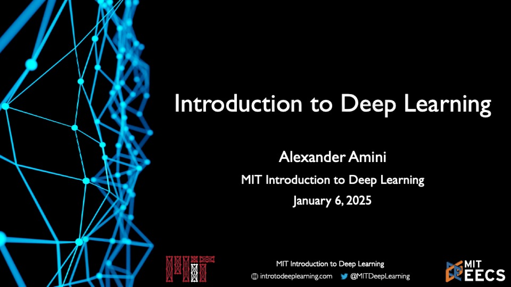
슬라이드 제목(인식): Introductionto Deep Learning AlexanderAmini
이 장에서 말하고 싶은 핵심: 강의 전체 목적과 학습 범위를 선언하는 출발 슬라이드입니다.
녹음본 상세 반영: [00:00] 적응하고 진화하세요. 여러분, 안녕하세요. 오늘 함께해 주셔서 감사합니다. 제 이름은 Alexander Amini이고, Ava와 함께 올해 이 과목의 강사를 맡게 되었습니다. 이 수업은 MIT Introduction to Deep Learning이며, 공식 과목명은 Success 191입니다. 여러분을 이 수업에 맞이하게 되어 정말 기쁘고, 아마 시작할 때 가장 좋은 출발점은 항상 우리 스스로에게 묻는 것이겠죠. “MIT Intro to Deep Learning이란 무엇인가?” 이 수업은 딥러닝의 모든 것을 다루는 1주일 부트캠프입니다. 그래서 아주 재미있으면서도 동... [00:54] 이제, 이 수업은 올해로 8년째이고, 특히 지난 몇 년 동안 이 분야의 속도는 정말 놀랍습니다. 그리고 우리가 매년 이 수업을 가르칠 때마다, 특히 이 도입 강의를 소개하는 일이 점점 더, 뭐랄까, 흥미로워지고 있습니다. 이 도입 강의를 어떻게 소개하느냐도 수년에 걸쳐 실제로 적응하고 진화해 왔습니다. 여기 계신 많은 분들은 지난 몇 년간 딥러닝의 수많은 발전을 보면서, 이 발전의 속도가 너무 빠르다 보니, 어쩌면 조금은 무뎌졌을 수도 있다고 생각합니다. 그래서 몇 년 전 우리가 어디에서 출발했는지를 잊지 않는 것도 중요하다고 생각합니다. 그래서 시작하면서 이 이미지...
초보자용 자세한 해설: 이 챕터는 학습 전략을 잡는 구간입니다. 일정·지원채널·랩 구조를 먼저 이해하면 이후 수식 파트가 훨씬 덜 추상적으로 느껴집니다. 이 슬라이드에서는 특히 강의 전체 목적과 학습 범위를 선언하는 출발 슬라이드입니다.
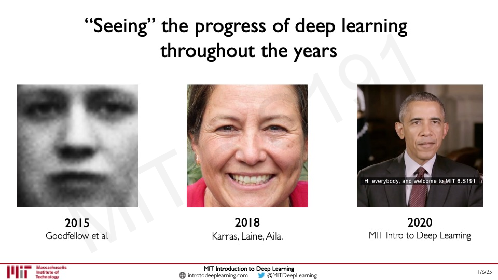
슬라이드 제목(인식): "Seeing" the progress of deep learning throughout the years Hi everybody. and welcome to MIT 6.S191 2015 2018 2020 Goodfellowetal. Karras,Laine,Aila MIT Intro toDeepLearn
이 장에서 말하고 싶은 핵심: 연도별 생성 성능 향상을 시각적으로 비교합니다.
녹음본 상세 반영: [00:54] 이제, 이 수업은 올해로 8년째이고, 특히 지난 몇 년 동안 이 분야의 속도는 정말 놀랍습니다. 그리고 우리가 매년 이 수업을 가르칠 때마다, 특히 이 도입 강의를 소개하는 일이 점점 더, 뭐랄까, 흥미로워지고 있습니다. 이 도입 강의를 어떻게 소개하느냐도 수년에 걸쳐 실제로 적응하고 진화해 왔습니다. 여기 계신 많은 분들은 지난 몇 년간 딥러닝의 수많은 발전을 보면서, 이 발전의 속도가 너무 빠르다 보니, 어쩌면 조금은 무뎌졌을 수도 있다고 생각합니다. 그래서 몇 년 전 우리가 어디에서 출발했는지를 잊지 않는 것도 중요하다고 생각합니다. 그래서 시작하면서 이 이미지... [01:53] 이것이 얼굴을 생성할 수 있던 당시 최첨단 모델이었고, 우리가 할 수 있던 최선이었습니다. 그리고 몇 년이 지나자 이미지 생성은 이미 엄청나게 발전하기 시작했습니다. 여기서 보시듯, 이런 이미지들에서 훨씬 더 사실적인, 사진 같은 사실성이 나타나기 시작했습니다. 그리고 그로부터 또 몇 년이 지나자 이 이미지들은 살아 움직이기 시작합니다. 시간 정보가 들어가고, 비디오와 움직임까지 포함되기 시작합니다. 사실 오른쪽에서 보시는 이 영상은 몇 년 전 이 수업에서 우리가 만든 영상입니다. 이미 온라인에 올라가 있고 본 분도 많겠지만, 아직 못 보신 분들을 위해 앞 10초만...
초보자용 자세한 해설: 이 챕터는 학습 전략을 잡는 구간입니다. 일정·지원채널·랩 구조를 먼저 이해하면 이후 수식 파트가 훨씬 덜 추상적으로 느껴집니다. 이 슬라이드에서는 특히 연도별 생성 성능 향상을 시각적으로 비교합니다.
슬라이드 제목(인식): Hieverybody,andwelcometoMlT6.S191 CANNYA/
이 장에서 말하고 싶은 핵심: 데모 장면으로 기술 체감도를 높입니다.
녹음본 상세 반영: [01:53] 이것이 얼굴을 생성할 수 있던 당시 최첨단 모델이었고, 우리가 할 수 있던 최선이었습니다. 그리고 몇 년이 지나자 이미지 생성은 이미 엄청나게 발전하기 시작했습니다. 여기서 보시듯, 이런 이미지들에서 훨씬 더 사실적인, 사진 같은 사실성이 나타나기 시작했습니다. 그리고 그로부터 또 몇 년이 지나자 이 이미지들은 살아 움직이기 시작합니다. 시간 정보가 들어가고, 비디오와 움직임까지 포함되기 시작합니다. 사실 오른쪽에서 보시는 이 영상은 몇 년 전 이 수업에서 우리가 만든 영상입니다. 이미 온라인에 올라가 있고 본 분도 많겠지만, 아직 못 보신 분들을 위해 앞 10초만... [02:53] MIT에서 진행되는 공식 딥러닝 입문 과목입니다. 자, 전체를 다 틀지는 않겠습니다. 대략 어떤 영상인지 감이 오실 겁니다. 이 영상은 5년 전에 만들어졌습니다. 이 수업의 일부로 제작했고, 당시에는 이 수업 소개에 실제로 사용했습니다. 우리가 2020년에 이걸 했을 때는 큰 반응을 얻었습니다. 심지어 그때는, 특히 그때는 더 그랬죠. 오늘 여러분은 그렇게 인상 깊지 않을 수도 있겠지만, 당시에는 정말 큰 일이었습니다. 이건 딥러닝 모델의 사진 사실성 능력에서 매우 큰 도약이었고, 클립은 굉장히 빠르게 약간 바이럴이 되었습니다. 사람들은 사실성에 대해 많이 이야기했죠...
초보자용 자세한 해설: 이 챕터는 학습 전략을 잡는 구간입니다. 일정·지원채널·랩 구조를 먼저 이해하면 이후 수식 파트가 훨씬 덜 추상적으로 느껴집니다. 이 슬라이드에서는 특히 데모 장면으로 기술 체감도를 높입니다.
슬라이드 제목(인식): Hi everybody,and welcome to MiT 6.S191 1.1Mviews 3months ago 2months ago That is easily the cleanest visual deepfake I've ever seen. It must Wowwowwowiamamazed have taken
이 장에서 말하고 싶은 핵심: 대중 반응으로 기술 파급력을 보여줍니다.
녹음본 상세 반영: [02:53] MIT에서 진행되는 공식 딥러닝 입문 과목입니다. 자, 전체를 다 틀지는 않겠습니다. 대략 어떤 영상인지 감이 오실 겁니다. 이 영상은 5년 전에 만들어졌습니다. 이 수업의 일부로 제작했고, 당시에는 이 수업 소개에 실제로 사용했습니다. 우리가 2020년에 이걸 했을 때는 큰 반응을 얻었습니다. 심지어 그때는, 특히 그때는 더 그랬죠. 오늘 여러분은 그렇게 인상 깊지 않을 수도 있겠지만, 당시에는 정말 큰 일이었습니다. 이건 딥러닝 모델의 사진 사실성 능력에서 매우 큰 도약이었고, 클립은 굉장히 빠르게 약간 바이럴이 되었습니다. 사람들은 사실성에 대해 많이 이야기했죠... [03:49] 그 2분짜리 클립을 생성하기 위해서는, 화자(저희가 아닌)의 전문 오디오를 약 2시간 녹음/수집해야 했고, 얼굴 모델을 만들기 위해 전문 고해상도 비디오 데이터가 약 50시간 필요했습니다. 또한 2분짜리 영상 생성에 컴퓨팅 비용이 약 미화 15,000달러 들었습니다. 그 모든 것은 미리 정해진 스크립트, 즉 정적인 콘텐츠를 생성하기 위한 것이었습니다. 대화할 수도 없고, 상호작용도 불가능했습니다. 그냥 미리 정해진 정적 스크립트였고, 전혀 유연하지 않았죠. 그런데도 시간, 데이터, 에너지, 금전 자원까지 엄청난 자원이 필요했습니다. 그래서 저는 이 수업을 시작하며 이...
초보자용 자세한 해설: 이 챕터는 학습 전략을 잡는 구간입니다. 일정·지원채널·랩 구조를 먼저 이해하면 이후 수식 파트가 훨씬 덜 추상적으로 느껴집니다. 이 슬라이드에서는 특히 대중 반응으로 기술 파급력을 보여줍니다.
슬라이드 제목(인식): 2020 ...creating this 2 minute video required... 2hoursofprofessional audio 50hoursofHDvideo Hieverybody,andwelcome to MIT6.S191 Static,pre-definedscript 1.1Mviews Over$I
이 장에서 말하고 싶은 핵심: 2020년 방식의 데이터/비용 부담을 수치로 강조합니다.
녹음본 상세 반영: [03:49] 그 2분짜리 클립을 생성하기 위해서는, 화자(저희가 아닌)의 전문 오디오를 약 2시간 녹음/수집해야 했고, 얼굴 모델을 만들기 위해 전문 고해상도 비디오 데이터가 약 50시간 필요했습니다. 또한 2분짜리 영상 생성에 컴퓨팅 비용이 약 미화 15,000달러 들었습니다. 그 모든 것은 미리 정해진 스크립트, 즉 정적인 콘텐츠를 생성하기 위한 것이었습니다. 대화할 수도 없고, 상호작용도 불가능했습니다. 그냥 미리 정해진 정적 스크립트였고, 전혀 유연하지 않았죠. 그런데도 시간, 데이터, 에너지, 금전 자원까지 엄청난 자원이 필요했습니다. 그래서 저는 이 수업을 시작하며 이... [04:45] 그렇다면 오늘날 세상에서 음성/클로닝과 생성형 AI는 어떤 모습일까요? 특히 2020년에 우리가 가졌던 모든 한계를 감안하면요. 그래서 이것을 말로 설명하는 것보다, 라이브로 직접 보여드리는 게 더 좋겠다고 생각했습니다. 2020년에 들였던 그 모든 컴퓨팅과 자원 대신, 오늘 여기서 모두 앞에서 라이브 무편집으로 해보죠. 사실 제가 작은 비밀이 하나 있습니다. 다른 화면을 공유해서 이걸 옮겨보겠습니다. 지금 보이는 건 터미널 창이고, 백그라운드에서 어떤 프로그램이 오디오를 녹음하고 있었다는 걸 보실 수 있습니다.
초보자용 자세한 해설: 이 챕터는 학습 전략을 잡는 구간입니다. 일정·지원채널·랩 구조를 먼저 이해하면 이후 수식 파트가 훨씬 덜 추상적으로 느껴집니다. 이 슬라이드에서는 특히 2020년 방식의 데이터/비용 부담을 수치로 강조합니다.
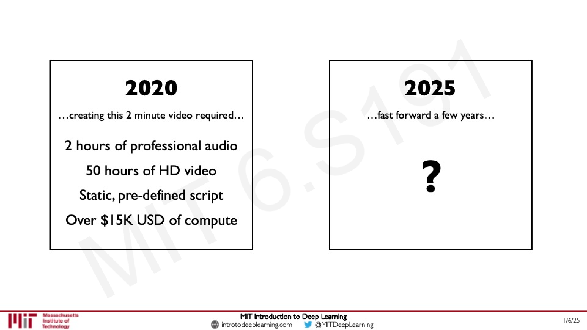
슬라이드 제목(인식): 2020 2025 ...creating this 2minute video required... ...fastforwardafewyears... 2hoursofprofessional audio ？ 50hoursofHDvideo Static,pre-defined script Over$I5KUSDofcompu
이 장에서 말하고 싶은 핵심: 2025년 실시간 상호작용 생성으로 전환됨을 대비합니다.
녹음본 상세 반영: [04:45] 그렇다면 오늘날 세상에서 음성/클로닝과 생성형 AI는 어떤 모습일까요? 특히 2020년에 우리가 가졌던 모든 한계를 감안하면요. 그래서 이것을 말로 설명하는 것보다, 라이브로 직접 보여드리는 게 더 좋겠다고 생각했습니다. 2020년에 들였던 그 모든 컴퓨팅과 자원 대신, 오늘 여기서 모두 앞에서 라이브 무편집으로 해보죠. 사실 제가 작은 비밀이 하나 있습니다. 다른 화면을 공유해서 이걸 옮겨보겠습니다. 지금 보이는 건 터미널 창이고, 백그라운드에서 어떤 프로그램이 오디오를 녹음하고 있었다는 걸 보실 수 있습니다. [05:25] 제가 계속 말하는 동안, 우리가 만든 이 프로그램이 제 오디오를 듣고 제 목소리를 녹음하고 있었습니다. 그리고 지금 제가 할 일은 녹음을 멈추고, 얼마나 빨리 즉시 제 목소리를 클론할 수 있는지 보는 겁니다. 아까처럼 시간 집약적인 자원을 쓰는 대신 말이죠. 지금 멈춰볼게요. 즉시 클론되는 게 보일 겁니다. 네, 이제 제 목소리가 클론되었습니다. 그리고 이걸 가지고 아까처럼 미리 정의된 스크립트를 쓰지 않고, 이 목소리와 라이브 무편집 대화를 해보겠습니다. 오늘날 생성형 AI 모델이 얼마나 동적이고 유연해졌는지 보죠. 해봅시다. “안녕, 내 말 들려?” “네, 잘 들...
초보자용 자세한 해설: 이 챕터는 학습 전략을 잡는 구간입니다. 일정·지원채널·랩 구조를 먼저 이해하면 이후 수식 파트가 훨씬 덜 추상적으로 느껴집니다. 이 슬라이드에서는 특히 2025년 실시간 상호작용 생성으로 전환됨을 대비합니다.
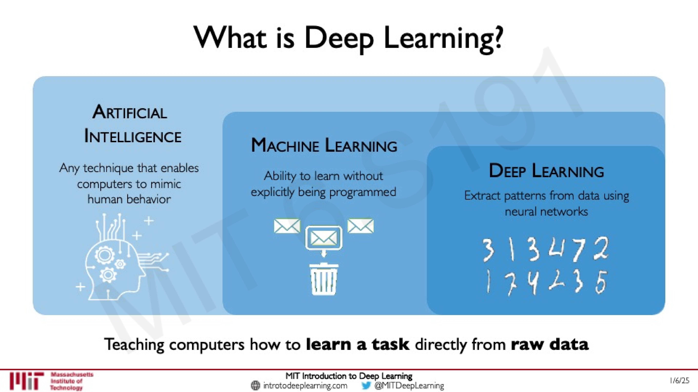
슬라이드 제목(인식): What is Deep Learning? ARTIFICIAL INTELLIGENCE MACHINE LEARNING Anytechniquethatenables DEEPLEARNING Ability to learnwithout computersto mimic explicitlybeingprogrammed E
이 장에서 말하고 싶은 핵심: AI-ML-DL 포함관계를 정의합니다.
녹음본 상세 반영: [06:25] “맞아요. 생각보다 우리 더 비슷하네요. 지금 뭐 하고 있죠?” “사실 올해 MIT 딥러닝 수업을 막 시작한 참이고, 지금 청중 앞에 서 있어요.” “MIT Introduction to Deep Learning은 정말 훌륭한 수업이죠. 지금까지 수업은 어때요?” “사실 방금 시작했어요. 있잖아요, 아이디어가 하나 있어요. 지금 막 ‘딥러닝이란 무엇인가’를 소개하려고 했는데, 그 부분 당신이 대신 해줄래요?” “딥러닝은 인공신경망을 사용해 데이터에서 학습하는 머신러닝의 한 종류입니다. 이 네트워크는 인간 뇌의 구조에서 영감을 받았고, 대량의 데이터에서 복잡한 패턴을 학... [07:19] 사실 제가 청중에게 말하고 있던 놀라운 점은 오늘날 딥러닝의 상태가 정말 유연하고 역동적이라는 거였어요. 어떻게 생각해요? “맞아요. 딥러닝은 믿을 수 없을 만큼 역동적입니다. 새로운 아키텍처, 알고리즘, 응용이 계속 개발되면서 끊임없이 진화하고 있어요.” 잠깐, 당신이 얼마나 동적인지 보여주려고 여기서 끊어볼게요. 제가 중간에 끊겠습니다. 그리고 이렇게 해보죠. 딥러닝 얘기는 이쯤 하고, 거북이에 관한 이야기를 하나 들려줘요. 그리고 아주 와일드하게! “오, 거북이요. 와일드한 거북이 이야기 원하신다고요? 좋아요, 상상해 보세요. Shelly라는 거북이가 있어요....
초보자용 자세한 해설: 이 챕터는 학습 전략을 잡는 구간입니다. 일정·지원채널·랩 구조를 먼저 이해하면 이후 수식 파트가 훨씬 덜 추상적으로 느껴집니다. 이 슬라이드에서는 특히 AI-ML-DL 포함관계를 정의합니다.
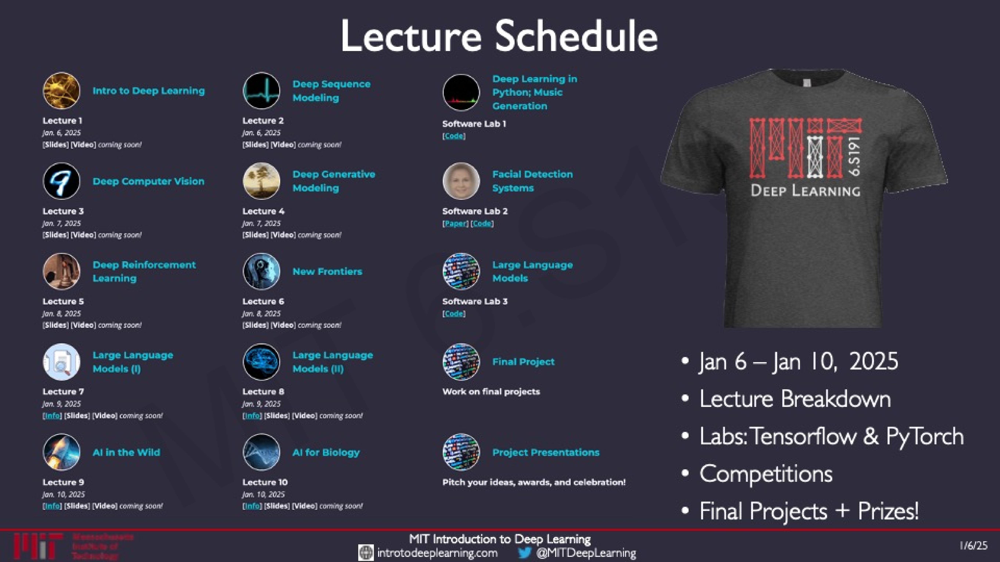
슬라이드 제목(인식): Lecture Schedule Deep Learning in Deep Sequence Intro to Deep Learning Modeling Python;Music Generation Lecture 1 Lecture 2 Software Lab1 Jon. 6,2025 Jon. 6,2025 (apoy] [
이 장에서 말하고 싶은 핵심: 강의/랩 일정 흐름을 설명합니다.
녹음본 상세 반영: [07:19] 사실 제가 청중에게 말하고 있던 놀라운 점은 오늘날 딥러닝의 상태가 정말 유연하고 역동적이라는 거였어요. 어떻게 생각해요? “맞아요. 딥러닝은 믿을 수 없을 만큼 역동적입니다. 새로운 아키텍처, 알고리즘, 응용이 계속 개발되면서 끊임없이 진화하고 있어요.” 잠깐, 당신이 얼마나 동적인지 보여주려고 여기서 끊어볼게요. 제가 중간에 끊겠습니다. 그리고 이렇게 해보죠. 딥러닝 얘기는 이쯤 하고, 거북이에 관한 이야기를 하나 들려줘요. 그리고 아주 와일드하게! “오, 거북이요. 와일드한 거북이 이야기 원하신다고요? 좋아요, 상상해 보세요. Shelly라는 거북이가 있어요.... [08:17] “그들은 행성들을 지나며, 미역 먹기를 좋아하는 외계인들을 만나요…” 오케이, 한 번만 더 끊을게요. 고마워요. 정말 좋았습니다. 진짜 ‘거북이-대단(turtletastic)’하네요. 여기서 마무리하죠, 알겠죠? 정말 고마워요. “도움이 돼서 기뻐요.” 오케이, 고마워요. 바이바이. “안녕.” 오케이. 멋집니다. 오케이. 방금은 단지 재미있는 방식으로, 몇 년 전의 매우 정적인 콘텐츠 생성에서 오늘날의 라이브, 무편집, 극도로 동적인 콘텐츠 생성까지 이 분야가 얼마나 멀리 왔는지 보여드린 겁니다. 그리고 방금 여러분은 딥러닝이 무엇인지에 대한 아주 짧은 소개를 들으셨...
초보자용 자세한 해설: 이 챕터는 학습 전략을 잡는 구간입니다. 일정·지원채널·랩 구조를 먼저 이해하면 이후 수식 파트가 훨씬 덜 추상적으로 느껴집니다. 이 슬라이드에서는 특히 강의/랩 일정 흐름을 설명합니다.
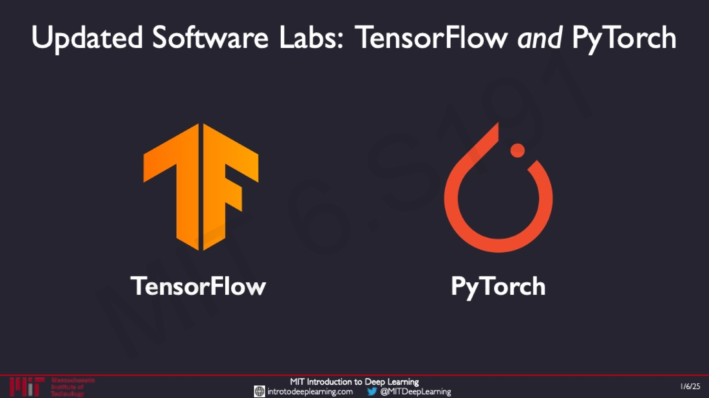
슬라이드 제목(인식): Updated Software Labs: TensorFlow and PyTorch TensorFlow PyTorch
이 장에서 말하고 싶은 핵심: TF/PT 병행 실습 방향을 소개합니다.
녹음본 상세 반영: [08:17] “그들은 행성들을 지나며, 미역 먹기를 좋아하는 외계인들을 만나요…” 오케이, 한 번만 더 끊을게요. 고마워요. 정말 좋았습니다. 진짜 ‘거북이-대단(turtletastic)’하네요. 여기서 마무리하죠, 알겠죠? 정말 고마워요. “도움이 돼서 기뻐요.” 오케이, 고마워요. 바이바이. “안녕.” 오케이. 멋집니다. 오케이. 방금은 단지 재미있는 방식으로, 몇 년 전의 매우 정적인 콘텐츠 생성에서 오늘날의 라이브, 무편집, 극도로 동적인 콘텐츠 생성까지 이 분야가 얼마나 멀리 왔는지 보여드린 겁니다. 그리고 방금 여러분은 딥러닝이 무엇인지에 대한 아주 짧은 소개를 들으셨... [09:07] 사실 그 데모와 지난 수년간 여러분이 보아 온 모든 발전에서, 앞으로 일주일 동안 이 수업에서 보게 될 것은 그 모든 발전을 이끄는 근본 기술들입니다. 그러니 먼저 이 분야가 정확히 무엇에 관한 것인지 기초를 좀 깔아봅시다. 그러려면 우선 “지능이란 무엇인가”부터 소개해야 한다고 생각합니다. 저에게 지능이라는 단어는, 어떤 미래의 의사결정이나 미래의 행동을 알리기 위해 정보를 처리하는 능력을 의미합니다. 이것이 지능의 의미입니다. 우리 모두는 매일 이 능력을 보입니다. 누군가는 더 많이, 누군가는 덜하게요. 인공지능은 단지 그와 동일한 과정을 수행하는 인공 알고리즘을...
초보자용 자세한 해설: 이 챕터는 학습 전략을 잡는 구간입니다. 일정·지원채널·랩 구조를 먼저 이해하면 이후 수식 파트가 훨씬 덜 추상적으로 느껴집니다. 이 슬라이드에서는 특히 TF/PT 병행 실습 방향을 소개합니다.
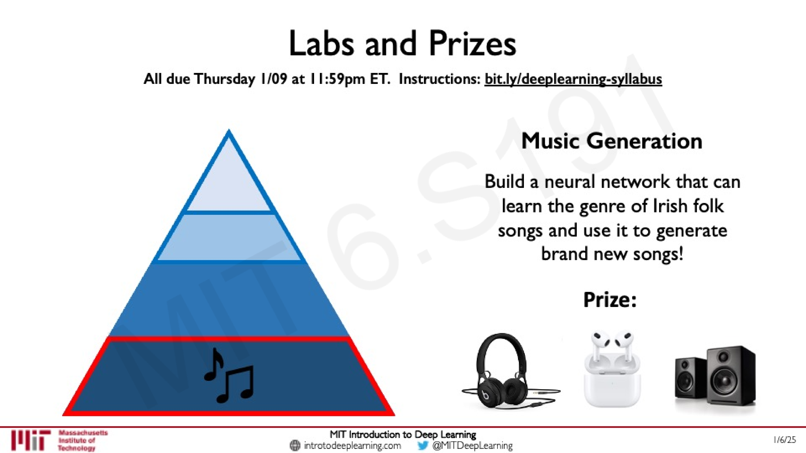
슬라이드 제목(인식): Labs and Prizes AlldueThursday1/09atIl:59pmET.Instructions:bit.ly/deeplearning-syllabus Music Generation Buildaneuralnetworkthatcan learnthegenreoflrishfolk songsanduseit
이 장에서 말하고 싶은 핵심: 랩1 목표(음악 생성)입니다.
녹음본 상세 반영: [09:07] 사실 그 데모와 지난 수년간 여러분이 보아 온 모든 발전에서, 앞으로 일주일 동안 이 수업에서 보게 될 것은 그 모든 발전을 이끄는 근본 기술들입니다. 그러니 먼저 이 분야가 정확히 무엇에 관한 것인지 기초를 좀 깔아봅시다. 그러려면 우선 “지능이란 무엇인가”부터 소개해야 한다고 생각합니다. 저에게 지능이라는 단어는, 어떤 미래의 의사결정이나 미래의 행동을 알리기 위해 정보를 처리하는 능력을 의미합니다. 이것이 지능의 의미입니다. 우리 모두는 매일 이 능력을 보입니다. 누군가는 더 많이, 누군가는 덜하게요. 인공지능은 단지 그와 동일한 과정을 수행하는 인공 알고리즘을... [10:05] 머신러닝은 인공지능의 하위 분야로, 컴퓨터에게 그 데이터를 어떻게 사용할지, 정보를 어떻게 처리해 결정을 내릴지를 명시적으로 프로그래밍하는 데 집중하는 것이 아니라, 데이터 안의 패턴을 학습해 결정을 내리게 하는 데 집중합니다. 마지막으로 딥러닝은 머신러닝의 하위 분야로, 그 과정을 신경망, 특히 심층 신경망으로 수행하는 데 초점을 둡니다. 딥 신경망이 정확히 무엇인지는 이 수업 전반에서 배우게 될 겁니다. 하지만 큰 관점에서 보면, 이 전체 과목은 근본적으로 하나의 핵심 아이디어에 관한 것입니다. 우리가 가르치고, 여러분이 이번 주 내내 강하게 익히게 될 것은 바로...
초보자용 자세한 해설: 이 챕터는 학습 전략을 잡는 구간입니다. 일정·지원채널·랩 구조를 먼저 이해하면 이후 수식 파트가 훨씬 덜 추상적으로 느껴집니다. 이 슬라이드에서는 특히 랩1 목표(음악 생성)입니다.
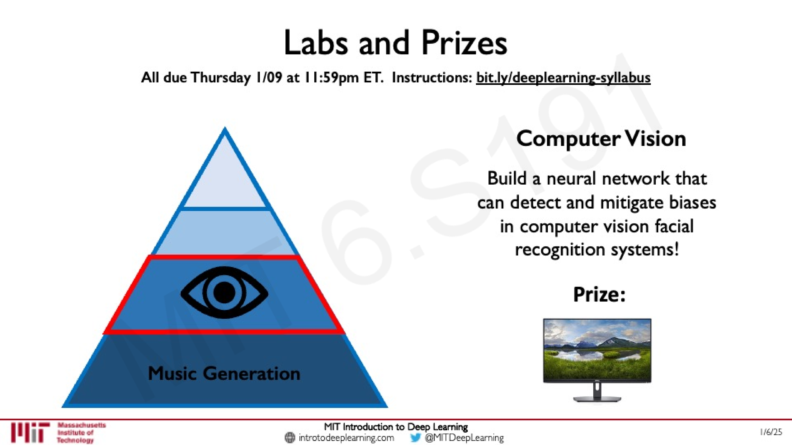
슬라이드 제목(인식): Labs and Prizes AlldueThursday1/09atIl:59pmET.Instructions:bit.ly/deeplearning-syllabus Computer Vision Buildaneuralnetworkthat candetectandmitigatebiases incomputervisio
이 장에서 말하고 싶은 핵심: 랩2 목표(비전/편향 완화)입니다.
녹음본 상세 반영: [10:05] 머신러닝은 인공지능의 하위 분야로, 컴퓨터에게 그 데이터를 어떻게 사용할지, 정보를 어떻게 처리해 결정을 내릴지를 명시적으로 프로그래밍하는 데 집중하는 것이 아니라, 데이터 안의 패턴을 학습해 결정을 내리게 하는 데 집중합니다. 마지막으로 딥러닝은 머신러닝의 하위 분야로, 그 과정을 신경망, 특히 심층 신경망으로 수행하는 데 초점을 둡니다. 딥 신경망이 정확히 무엇인지는 이 수업 전반에서 배우게 될 겁니다. 하지만 큰 관점에서 보면, 이 전체 과목은 근본적으로 하나의 핵심 아이디어에 관한 것입니다. 우리가 가르치고, 여러분이 이번 주 내내 강하게 익히게 될 것은 바로... [11:05] 이건 아마 강의 전체를 높은 수준에서 조금 소개하기에 좋은 연결점이겠네요. 말씀드린 것처럼 기술 강의와 소프트웨어 랩의 조합으로 진행됩니다. 특히 올해는 분야가 너무 빠르게 발전하고 있어서 몇 가지 새로운 업데이트가 있습니다. 딥러닝의 더 현대적인 측면에서 핵심 포인트를 강하게 짚어갈 예정입니다. 그리고 그 연장선에서, 산업계 리더들의 게스트 강의로 마무리할 겁니다. 업계에서 개발 중인 최첨단 딥러닝/AI 방법들을 다루게 되며, 여러분의 지식을 더 끌어올려 줄 것입니다. 그리고 맞습니다. 오늘 저녁 4시 30분에 리셉션이 있고, 여러분 모두 초대됩니다. 서로 이야기하...
초보자용 자세한 해설: 이 챕터는 학습 전략을 잡는 구간입니다. 일정·지원채널·랩 구조를 먼저 이해하면 이후 수식 파트가 훨씬 덜 추상적으로 느껴집니다. 이 슬라이드에서는 특히 랩2 목표(비전/편향 완화)입니다.
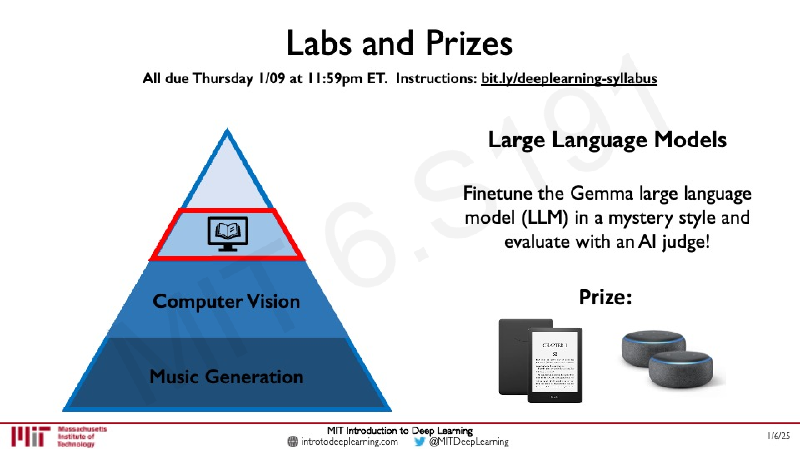
슬라이드 제목(인식): Labs and Prizes AlldueThursday1/09atIl:59pmET.Instructions:bit.ly/deeplearning-syllabus Large Language Models FinetunetheGemmalargelanguage model (LLM) in a mystery style
이 장에서 말하고 싶은 핵심: 랩3 목표(LLM 파인튜닝/평가)입니다.
녹음본 상세 반영: [11:05] 이건 아마 강의 전체를 높은 수준에서 조금 소개하기에 좋은 연결점이겠네요. 말씀드린 것처럼 기술 강의와 소프트웨어 랩의 조합으로 진행됩니다. 특히 올해는 분야가 너무 빠르게 발전하고 있어서 몇 가지 새로운 업데이트가 있습니다. 딥러닝의 더 현대적인 측면에서 핵심 포인트를 강하게 짚어갈 예정입니다. 그리고 그 연장선에서, 산업계 리더들의 게스트 강의로 마무리할 겁니다. 업계에서 개발 중인 최첨단 딥러닝/AI 방법들을 다루게 되며, 여러분의 지식을 더 끌어올려 줄 것입니다. 그리고 맞습니다. 오늘 저녁 4시 30분에 리셉션이 있고, 여러분 모두 초대됩니다. 서로 이야기하... [12:04] TensorFlow와 PyTorch 소프트웨어 랩을 모두 도입할 예정입니다. 이 랩들은 첫째로, 강의에서 배우는 모든 내용을 직접 실습해 보는 훌륭한 학습 경험입니다. 둘째로, 대회 상금에 도전하고 코스 마지막의 다양한 현금 상금 대상이 되는 통로이기도 합니다. 그럼 이게 구체적으로 어떻게 작동할까요? 매일 전용 강의 하나와, 그 강의를 반영하는 전용 소프트웨어 랩 하나가 있습니다. 랩은 그날 강의에서 배운 내용을 강화하도록 설계됩니다. 오늘부터 랩 1이 시작되고, 기본적으로 언어 모델의 한 형태를 구축하게 됩니다. 아주 작은 언어 모델이지만, 다음 토큰을 예측하는...
초보자용 자세한 해설: 이 챕터는 학습 전략을 잡는 구간입니다. 일정·지원채널·랩 구조를 먼저 이해하면 이후 수식 파트가 훨씬 덜 추상적으로 느껴집니다. 이 슬라이드에서는 특히 랩3 목표(LLM 파인튜닝/평가)입니다.
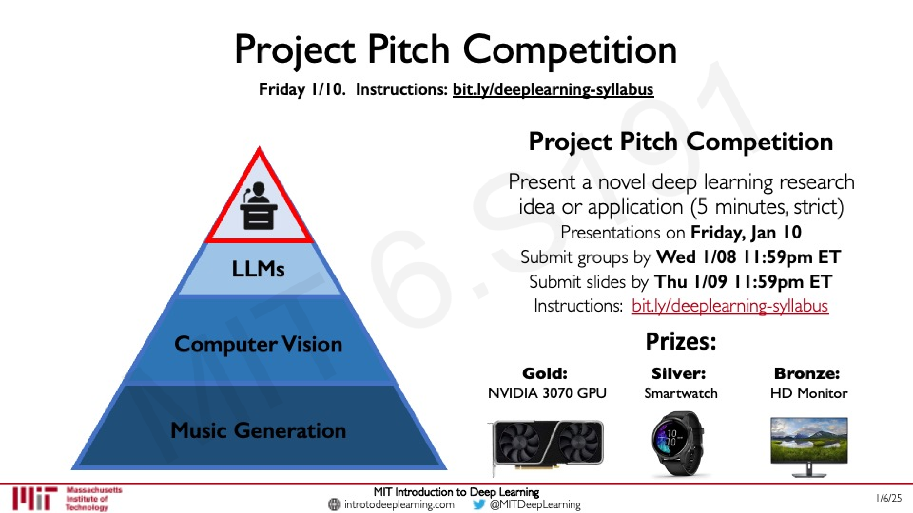
슬라이드 제목(인식): Project Pitch Competition FridayI/10.Instructions:bit.ly/deeplearning-syllabus ProjectPitch Competition Present a novel deeplearningresearch idea orapplication(5minutes,s
이 장에서 말하고 싶은 핵심: 최종 피치 경쟁 안내입니다.
녹음본 상세 반영: [12:04] TensorFlow와 PyTorch 소프트웨어 랩을 모두 도입할 예정입니다. 이 랩들은 첫째로, 강의에서 배우는 모든 내용을 직접 실습해 보는 훌륭한 학습 경험입니다. 둘째로, 대회 상금에 도전하고 코스 마지막의 다양한 현금 상금 대상이 되는 통로이기도 합니다. 그럼 이게 구체적으로 어떻게 작동할까요? 매일 전용 강의 하나와, 그 강의를 반영하는 전용 소프트웨어 랩 하나가 있습니다. 랩은 그날 강의에서 배운 내용을 강화하도록 설계됩니다. 오늘부터 랩 1이 시작되고, 기본적으로 언어 모델의 한 형태를 구축하게 됩니다. 아주 작은 언어 모델이지만, 다음 토큰을 예측하는... [13:00] 여러분이 처음부터 직접 컴퓨터 비전 시스템을 구축해 보고, 그 시스템에서 불균형 데이터를 자동으로 보정하는 기법도 이해하게 될 겁니다. 마지막으로 랩 3은 올해 처음 공개되는 완전히 새로운 랩으로, 대규모 언어 모델(LLM)을 다룹니다. 그리고 그 랩의 일부에서, 여러분이 직접 제어하는 컴퓨트 환경(미스터리 스타일)에서 20억 파라미터 규모의 대형 언어 모델을 파인튜닝하게 됩니다. 또한 해당 언어 모델의 품질을 평가하는 AI Judge도 구축할 것입니다. 이 세 랩 모두 매우 재미있을 겁니다. 그리고 마지막 수업 날에는 최종 프로젝트 피치 대회가 있습니다. 각 그룹은...
초보자용 자세한 해설: 이 챕터는 학습 전략을 잡는 구간입니다. 일정·지원채널·랩 구조를 먼저 이해하면 이후 수식 파트가 훨씬 덜 추상적으로 느껴집니다. 이 슬라이드에서는 특히 최종 피치 경쟁 안내입니다.
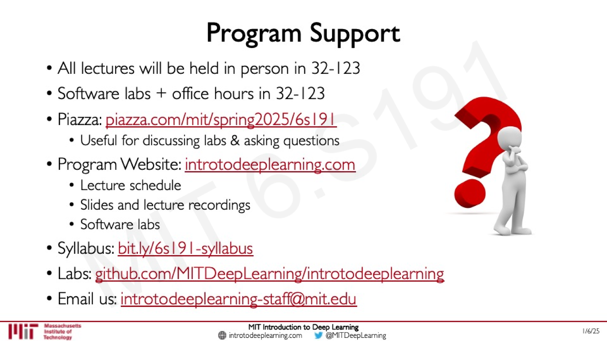
슬라이드 제목(인식): Program Support ·Alllectureswillbeheld inpersonin32-123 ·Softwarelabs+officehoursin32-123 Piazza:piazza.com/mit/spring2025/6s191 ·Usefulfor discussinglabs&askingquestions
이 장에서 말하고 싶은 핵심: 질문/지원 채널 안내입니다.
녹음본 상세 반영: [13:00] 여러분이 처음부터 직접 컴퓨터 비전 시스템을 구축해 보고, 그 시스템에서 불균형 데이터를 자동으로 보정하는 기법도 이해하게 될 겁니다. 마지막으로 랩 3은 올해 처음 공개되는 완전히 새로운 랩으로, 대규모 언어 모델(LLM)을 다룹니다. 그리고 그 랩의 일부에서, 여러분이 직접 제어하는 컴퓨트 환경(미스터리 스타일)에서 20억 파라미터 규모의 대형 언어 모델을 파인튜닝하게 됩니다. 또한 해당 언어 모델의 품질을 평가하는 AI Judge도 구축할 것입니다. 이 세 랩 모두 매우 재미있을 겁니다. 그리고 마지막 수업 날에는 최종 프로젝트 피치 대회가 있습니다. 각 그룹은... [14:03] 좋습니다, 이 슬라이드는 자세히 넘어가진 않겠습니다. 이 수업의 일환으로 훌륭한 리소스가 아주 많이 제공됩니다. 이 슬라이드뿐 아니라 전체 강의도 전부 온라인에 게시되어 있습니다. 웹사이트를 확인해 보시면 이미 올라가 있을 겁니다. 도움이 필요하면 질문을 Piazza에 올려 주세요. 올해는 정말 뛰어난 TA와 강사진이 있어서, 질문이나 이슈가 있으면 언제든지 연락할 수 있습니다. 저와 Ava가 대부분의 과정에서 메인 강의를 맡겠지만, 나머지 기간 동안 많은 게스트 강연자들의 강의도 듣게 될 겁니다. 여기에 일부 이름들이 있습니다. 이 수업은 지난 모든 해 동안 훌륭한...
초보자용 자세한 해설: 이 챕터는 학습 전략을 잡는 구간입니다. 일정·지원채널·랩 구조를 먼저 이해하면 이후 수식 파트가 훨씬 덜 추상적으로 느껴집니다. 이 슬라이드에서는 특히 질문/지원 채널 안내입니다.
슬라이드 제목(인식): Program Staff Program TAs AlexanderAmini Ava Amini Maxi Alex Lead Instructor Lead Instructor Sadhana David VictoryYinka-Banjo Daniela Rus
이 장에서 말하고 싶은 핵심: 강사진/TA 소개입니다.
녹음본 상세 반영: [14:03] 좋습니다, 이 슬라이드는 자세히 넘어가진 않겠습니다. 이 수업의 일환으로 훌륭한 리소스가 아주 많이 제공됩니다. 이 슬라이드뿐 아니라 전체 강의도 전부 온라인에 게시되어 있습니다. 웹사이트를 확인해 보시면 이미 올라가 있을 겁니다. 도움이 필요하면 질문을 Piazza에 올려 주세요. 올해는 정말 뛰어난 TA와 강사진이 있어서, 질문이나 이슈가 있으면 언제든지 연락할 수 있습니다. 저와 Ava가 대부분의 과정에서 메인 강의를 맡겠지만, 나머지 기간 동안 많은 게스트 강연자들의 강의도 듣게 될 겁니다. 여기에 일부 이름들이 있습니다. 이 수업은 지난 모든 해 동안 훌륭한... [15:02] 지금까지 약 1,300만 명에게 가르쳤습니다. MIT만의 수치가 아니라 전 세계 기준입니다. MIT 현장 수강생은 지금까지 대략 3,000명 정도이고, 온라인에서는 매년 약 10만 명이 이 수업을 듣습니다. 그래서 여러분은 아주 좋은 동료 집단 속에 있습니다. 정말 놀라운 분들이 이 수업을 수강해 왔고, 오늘 여러분이 이 자리에 계신 것이 매우 기대됩니다. 이제 기술 파트로 들어가면서, 아주 근본적인 질문으로 시작하고 싶습니다. 왜 딥러닝이며, 왜 지금인가? 여러분도 오늘 오기 전에 이 질문을 해보셨기를 바랍니다. 딥러닝의 기반이 정확히 무엇인지 이해하는 것은, 우리...
초보자용 자세한 해설: 이 챕터는 학습 전략을 잡는 구간입니다. 일정·지원채널·랩 구조를 먼저 이해하면 이후 수식 파트가 훨씬 덜 추상적으로 느껴집니다. 이 슬라이드에서는 특히 강사진/TA 소개입니다.
슬라이드 제목(인식): Thanks to Sponsors! G Google Liquid Microsoft CSAI MIT-IBM comet Watson AILab
이 장에서 말하고 싶은 핵심: 스폰서 감사 슬라이드입니다.
녹음본 상세 반영: [15:02] 지금까지 약 1,300만 명에게 가르쳤습니다. MIT만의 수치가 아니라 전 세계 기준입니다. MIT 현장 수강생은 지금까지 대략 3,000명 정도이고, 온라인에서는 매년 약 10만 명이 이 수업을 듣습니다. 그래서 여러분은 아주 좋은 동료 집단 속에 있습니다. 정말 놀라운 분들이 이 수업을 수강해 왔고, 오늘 여러분이 이 자리에 계신 것이 매우 기대됩니다. 이제 기술 파트로 들어가면서, 아주 근본적인 질문으로 시작하고 싶습니다. 왜 딥러닝이며, 왜 지금인가? 여러분도 오늘 오기 전에 이 질문을 해보셨기를 바랍니다. 딥러닝의 기반이 정확히 무엇인지 이해하는 것은, 우리... [15:58] 이 단어는 곧 더 설명하겠지만, 보통 이 특징들은 작업을 단계별로 수행하는 규칙들입니다. 문제는 그 특징을 인간이 정의하면, 대개 우리는 매우 견고한 특징을 만드는 데 그리 뛰어나지 않다는 점입니다. 예를 들어, 제가 여러분에게 얼굴을 탐지할 수 있는 AI 모델을 만들라고 했다면 어떻게 하시겠습니까? 얼굴을 탐지하기 위해 이미지에서 어떤 특징을 만들 건가요? 가능한 방법은 먼저 이미지에서 선, 즉 에지 같은 아주 단순한 선을 감지하는 겁니다. 그 다음에는 그 선들을 조합해 곡선이나 다양한 에지를 감지하기 시작할 수 있습니다. 즉, 단순 직선이 아니라 선의 곡선 형태를...
초보자용 자세한 해설: 이 챕터는 학습 전략을 잡는 구간입니다. 일정·지원채널·랩 구조를 먼저 이해하면 이후 수식 파트가 훨씬 덜 추상적으로 느껴집니다. 이 슬라이드에서는 특히 스폰서 감사 슬라이드입니다.
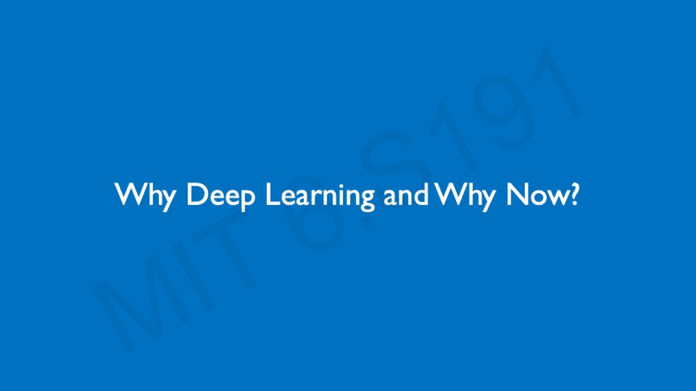
슬라이드 제목(인식): Why Deep Learning and Why Now?
이 장에서 말하고 싶은 핵심: 왜 딥러닝/왜 지금인지 질문을 던집니다.
녹음본 상세 반영: [16:54] 그리고 그것들을 다시 결합해서 눈, 코, 귀 같은 더 복합적인 객체를 형성할 수 있습니다. 그 다음에는 얼굴 구조를 점차적으로 만들 수 있겠죠. 왜 이렇게 하느냐고요? 자연스럽게도(여러분도 아마 이렇게 생각하실 텐데) 얼굴을 한 번에 원샷으로 탐지하는 건 매우 어렵기 때문입니다. 그리고 사실 애초에 여러분도 얼굴을 그렇게 처리하지 않습니다. 여러분은 먼저 훨씬 더 거친 특징, 저수준 특징부터, 아니 정정하자면 고수준 특징부터 처리합니다. 그다음 그것들을 조합해서 자신의 직관을 형성하죠. 딥러닝의 핵심 아이디어는 이 과정과 다르지 않습니다. 핵심은 제가 여러분에게 혹은... [17:50] 딥러닝의 핵심은 “많은 얼굴을 관찰한 뒤, 내가 먼저 선을 감지하고, 그다음 곡선을 감지하고, 그다음 눈/코/귀 같은 복합 요소를 감지하고, 마지막으로 얼굴 구조를 쌓아야 한다는 것을 계층적으로 학습할 수 있을까?”라고 묻는 것입니다. 그리고 딥러닝은 실제로 정확히 이 일을 할 수 있음이 밝혀졌습니다. 이 강의에서 내부적으로 어떻게 이뤄지는지도 보게 될 겁니다. 다만 매우 중요한 점이 있습니다. 최근 몇 년간 우리가 딥러닝의 놀라운 성과를 많이 보았지만, 특히 오늘 강의에서 배우는 거의 모든 내용은 수십 년 전에 이미 발명되거나 개발된 것입니다. 오늘 보여드릴 건 새...
초보자용 자세한 해설: 핵심은 “새 이론”보다 “실행 환경 성숙”입니다. 데이터·GPU·오픈소스 생태계가 딥러닝 성능을 실전으로 끌어올렸습니다. 이 슬라이드에서는 특히 왜 딥러닝/왜 지금인지 질문을 던집니다.
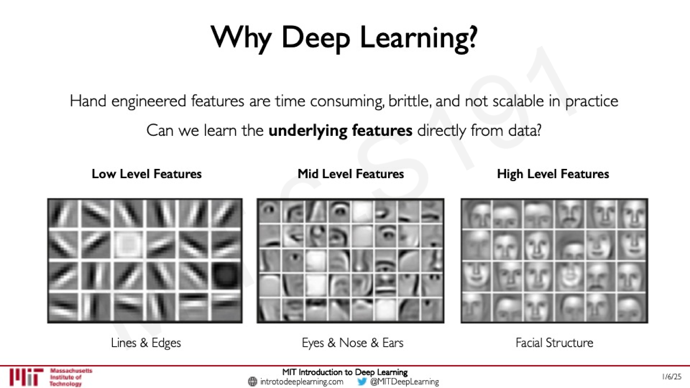
슬라이드 제목(인식): Why Deep Learning? Handengineeredfeatures are time consuming,brittle,andnotscalableinpractice Canwelearn the underlyingfeatures directly from data? LowLevelFeatures Mid L
이 장에서 말하고 싶은 핵심: 수작업 특징공학의 한계를 설명합니다.
녹음본 상세 반영: [17:50] 딥러닝의 핵심은 “많은 얼굴을 관찰한 뒤, 내가 먼저 선을 감지하고, 그다음 곡선을 감지하고, 그다음 눈/코/귀 같은 복합 요소를 감지하고, 마지막으로 얼굴 구조를 쌓아야 한다는 것을 계층적으로 학습할 수 있을까?”라고 묻는 것입니다. 그리고 딥러닝은 실제로 정확히 이 일을 할 수 있음이 밝혀졌습니다. 이 강의에서 내부적으로 어떻게 이뤄지는지도 보게 될 겁니다. 다만 매우 중요한 점이 있습니다. 최근 몇 년간 우리가 딥러닝의 놀라운 성과를 많이 보았지만, 특히 오늘 강의에서 배우는 거의 모든 내용은 수십 년 전에 이미 발명되거나 개발된 것입니다. 오늘 보여드릴 건 새... [18:47] 그 이유는, 첫째 데이터입니다. 데이터가 전 세계적으로 점점 더 풍부해지고 있고, 이것이 딥러닝 발전을 강하게 밀어주고 있습니다. 둘째는 컴퓨트입니다. 컴퓨트는 점점 더 강력해지고, 더 범용화(상품화)되고 있습니다. 특히 GPU 아키텍처가 딥러닝 발전을 이끌고 있고, GPU가 최근에야 본격적으로 보편화되기 시작했습니다. 마지막으로 오른쪽에 보이는 TensorFlow, PyTorch, Keras 같은 오픈소스 툴박스가, 단 1주 과정 안에서도 여러분이 이런 아키텍처를 직접 다뤄보고 곧바로 만들 수 있도록 매우 간소화해 줍니다.
초보자용 자세한 해설: 핵심은 “새 이론”보다 “실행 환경 성숙”입니다. 데이터·GPU·오픈소스 생태계가 딥러닝 성능을 실전으로 끌어올렸습니다. 이 슬라이드에서는 특히 수작업 특징공학의 한계를 설명합니다.
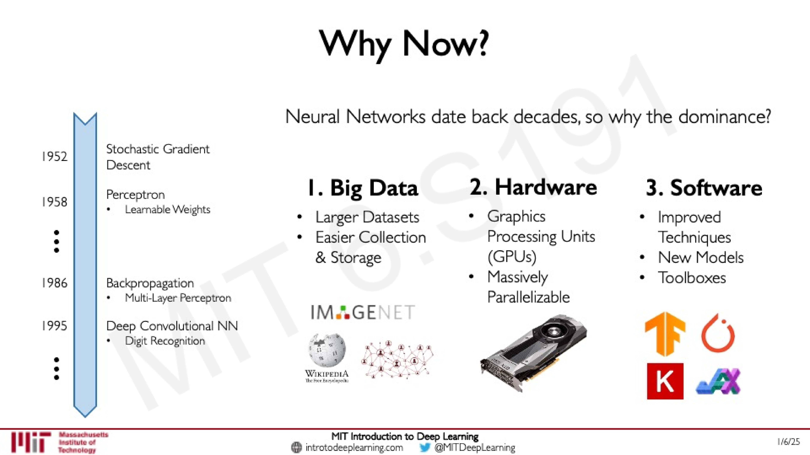
슬라이드 제목(인식): Why Now? Neural Networksdatebackdecades,sowhythedominance? Stochastic Gradient 1952 Descent 1. Big Data 2.Hardware 3.Software Perceptron 1958 Learmable Weights Larger Dat
이 장에서 말하고 싶은 핵심: 재부흥 3요소(데이터·GPU·소프트웨어)를 정리합니다.
녹음본 상세 반영: [19:35] 그럼 이제 모든 신경망의 근본 구성요소부터 이해해 봅시다. 바로 단일 뉴런, 즉 퍼셉트론입니다. 퍼셉트론 또는 단일 뉴런의 아이디어는 정말 단순합니다. 우선 정보를 순전파(forward propagation) 관점에서만 정의해 보죠. 입력이 주어졌을 때 퍼셉트론은 어떻게 출력을 계산할까요? x1부터 xm까지의 입력 집합을 정의하고, 각 입력 숫자는 대응되는 가중치 w1부터 wm과 곱해집니다. 이 곱셈 이후에는 모든 값을 더합니다. 그렇게 나온 단일 값을 비선형 활성화 함수에 통과시킵니다. 이건 단일 숫자를 출력으로 보내는 비선형 1차원 함수이고, 여기서는 G로 표기됩... [20:37] 여기서 제가 작은 디테일 하나를 빼먹었으니 바로 보완하겠습니다. 가중치와 입력을 곱한 후, bias term(바이어스)라는 숫자 하나를 더해야 합니다. 수식을 보면 바이어스 항은 활성화 함수 G 상에서 좌우로 이동시키는 역할을 합니다. 즉, 이 수식 안에서 적절히 설계된 이동 스칼라 항입니다. 슬라이드 오른쪽에서는 왼쪽 다이어그램이 수학적으로 단일 방정식으로 표현되어 있음을 볼 수 있습니다. 이제 깔끔함을 위해 벡터와 내적을 사용하는 선형대수 형태로 다시 써보겠습니다. 그래서 x1부터 xm 대신 대문자 벡터 X를 쓰겠습니다.
초보자용 자세한 해설: 핵심은 “새 이론”보다 “실행 환경 성숙”입니다. 데이터·GPU·오픈소스 생태계가 딥러닝 성능을 실전으로 끌어올렸습니다. 이 슬라이드에서는 특히 재부흥 3요소(데이터·GPU·소프트웨어)를 정리합니다.
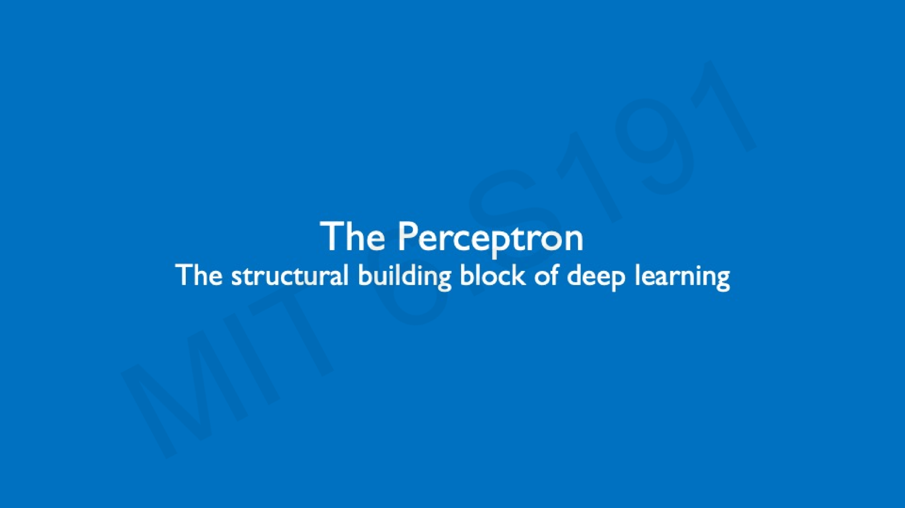
슬라이드 제목(인식): ThePerceptron Thestructural buildingblock ofdeeplearning
이 장에서 말하고 싶은 핵심: 퍼셉트론 섹션 시작입니다.
녹음본 상세 반영: [20:37] 여기서 제가 작은 디테일 하나를 빼먹었으니 바로 보완하겠습니다. 가중치와 입력을 곱한 후, bias term(바이어스)라는 숫자 하나를 더해야 합니다. 수식을 보면 바이어스 항은 활성화 함수 G 상에서 좌우로 이동시키는 역할을 합니다. 즉, 이 수식 안에서 적절히 설계된 이동 스칼라 항입니다. 슬라이드 오른쪽에서는 왼쪽 다이어그램이 수학적으로 단일 방정식으로 표현되어 있음을 볼 수 있습니다. 이제 깔끔함을 위해 벡터와 내적을 사용하는 선형대수 형태로 다시 써보겠습니다. 그래서 x1부터 xm 대신 대문자 벡터 X를 쓰겠습니다. [21:33] 대문자 X는 모든 입력의 모음이고, 대문자 W는 모든 가중치의 모음(벡터)입니다. 그러면 출력 y는 x와 w의 내적에 바이어스를 더하고, G라는 비선형 함수에 통과시켜 얻습니다. 여기서 “비선형”을 몇 번 언급했는데, 이게 정확히 무엇인지 궁금하실 수 있습니다. 비선형 함수라고 했지만 구체적으로 뭘까요? 대표적인 예가 sigmoid 함수입니다. 시그모이드는 x축의 어떤 실수 입력도 받을 수 있지만 출력은 0과 1 사이로 제한됩니다. 그래서 퍼셉트론/뉴런의 출력을 확률로 바꾸고 싶을 때 시그모이드가 자주 유용합니다. 다만 실제로는 비선형 함수 종류가 매우 많습니다.
초보자용 자세한 해설: 퍼셉트론은 입력 점수를 계산해 비선형 함수로 통과시키는 구조입니다. 바이어스와 활성화의 역할을 정확히 구분하면 전체 신경망이 쉬워집니다. 이 슬라이드에서는 특히 퍼셉트론 섹션 시작입니다.
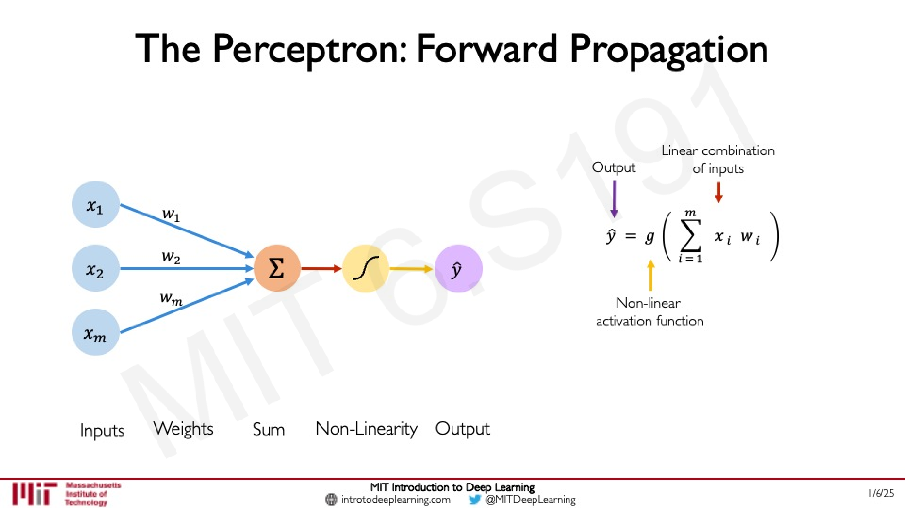
슬라이드 제목(인식): The Perceptron: Forward Propagation Linear combination ndino of inputs x1 W1 m M y=g xWi W2 3 x2 Non-linear activation function xm Inputs Weights Sum Non-Linearity ndno
이 장에서 말하고 싶은 핵심: 순전파 기본 구조를 설명합니다.
녹음본 상세 반영: [20:37] 여기서 제가 작은 디테일 하나를 빼먹었으니 바로 보완하겠습니다. 가중치와 입력을 곱한 후, bias term(바이어스)라는 숫자 하나를 더해야 합니다. 수식을 보면 바이어스 항은 활성화 함수 G 상에서 좌우로 이동시키는 역할을 합니다. 즉, 이 수식 안에서 적절히 설계된 이동 스칼라 항입니다. 슬라이드 오른쪽에서는 왼쪽 다이어그램이 수학적으로 단일 방정식으로 표현되어 있음을 볼 수 있습니다. 이제 깔끔함을 위해 벡터와 내적을 사용하는 선형대수 형태로 다시 써보겠습니다. 그래서 x1부터 xm 대신 대문자 벡터 X를 쓰겠습니다. [21:33] 대문자 X는 모든 입력의 모음이고, 대문자 W는 모든 가중치의 모음(벡터)입니다. 그러면 출력 y는 x와 w의 내적에 바이어스를 더하고, G라는 비선형 함수에 통과시켜 얻습니다. 여기서 “비선형”을 몇 번 언급했는데, 이게 정확히 무엇인지 궁금하실 수 있습니다. 비선형 함수라고 했지만 구체적으로 뭘까요? 대표적인 예가 sigmoid 함수입니다. 시그모이드는 x축의 어떤 실수 입력도 받을 수 있지만 출력은 0과 1 사이로 제한됩니다. 그래서 퍼셉트론/뉴런의 출력을 확률로 바꾸고 싶을 때 시그모이드가 자주 유용합니다. 다만 실제로는 비선형 함수 종류가 매우 많습니다.
초보자용 자세한 해설: 퍼셉트론은 입력 점수를 계산해 비선형 함수로 통과시키는 구조입니다. 바이어스와 활성화의 역할을 정확히 구분하면 전체 신경망이 쉬워집니다. 이 슬라이드에서는 특히 순전파 기본 구조를 설명합니다.
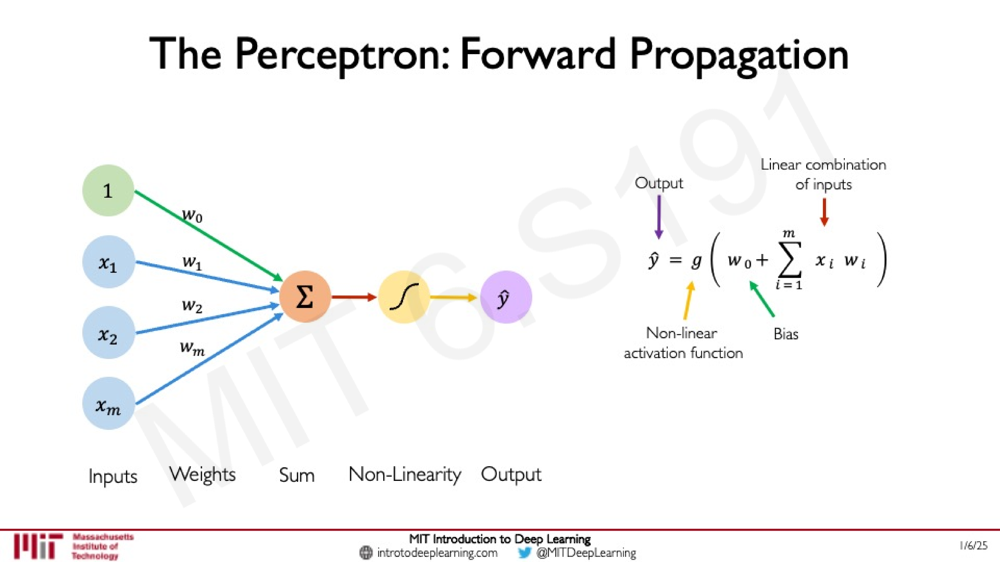
슬라이드 제목(인식): The Perceptron: Forward Propagation Linear combination Output of inputs 1 Wo x1 W1 y=g +0M xiWi W2 x2 Non-linear Bias Wm activation function xm Inputs Weights Sum Non-Lin
이 장에서 말하고 싶은 핵심: 바이어스 항을 추가 설명합니다.
녹음본 상세 반영: [21:33] 대문자 X는 모든 입력의 모음이고, 대문자 W는 모든 가중치의 모음(벡터)입니다. 그러면 출력 y는 x와 w의 내적에 바이어스를 더하고, G라는 비선형 함수에 통과시켜 얻습니다. 여기서 “비선형”을 몇 번 언급했는데, 이게 정확히 무엇인지 궁금하실 수 있습니다. 비선형 함수라고 했지만 구체적으로 뭘까요? 대표적인 예가 sigmoid 함수입니다. 시그모이드는 x축의 어떤 실수 입력도 받을 수 있지만 출력은 0과 1 사이로 제한됩니다. 그래서 퍼셉트론/뉴런의 출력을 확률로 바꾸고 싶을 때 시그모이드가 자주 유용합니다. 다만 실제로는 비선형 함수 종류가 매우 많습니다. [22:31] 신경망에서 자주 쓰이는 함수 중 하나일 뿐입니다. 이 발표를 진행하면서 다양한 비선형 함수 예시를 더 보게 될 겁니다. 그리고 이 슬라이드 하단에는 TensorFlow와 PyTorch 코드 스니펫이 있어서, 수학식으로 보는 내용과 오늘 랩에서 마주칠 코드 사이를 맞춰보는 데 도움이 될 겁니다. 앞서 본 sigmoid는 확률 출력에 좋고, 오른쪽에는 rectified linear unit(ReLU)도 보입니다. 이 함수는 양수 값만 출력합니다. 구간별(piecewise) 선형이라 0 이전도 선형, 0 이후도 선형이지만, x=0에서 단일 비선형 지점을 가집니다. 그렇다면...
초보자용 자세한 해설: 퍼셉트론은 입력 점수를 계산해 비선형 함수로 통과시키는 구조입니다. 바이어스와 활성화의 역할을 정확히 구분하면 전체 신경망이 쉬워집니다. 이 슬라이드에서는 특히 바이어스 항을 추가 설명합니다.
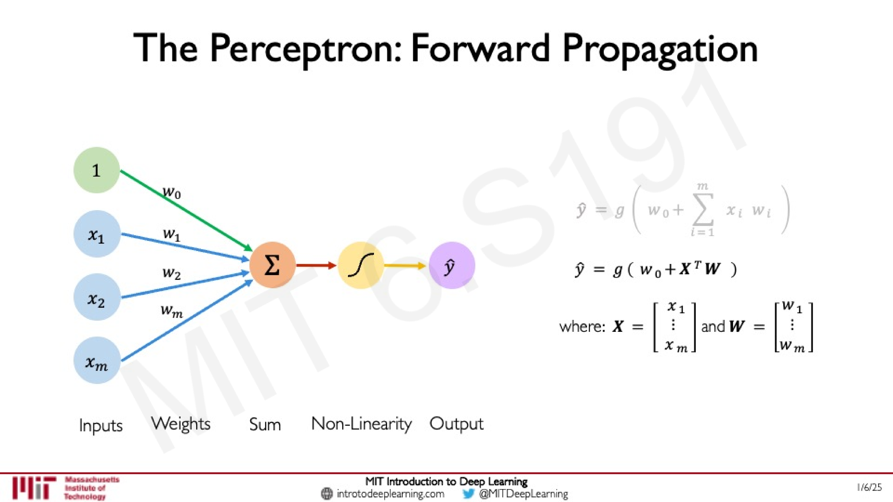
슬라이드 제목(인식): The Perceptron: Forward Propagation 1 Wo g Wo+ xiWi x1 W1 W2 y=g（wo+xTw） x2 Wm X1 where:X= andw xm [wm xm Inputs Weights Sum Non-Linearity dno
이 장에서 말하고 싶은 핵심: 벡터/내적 표현으로 일반화합니다.
녹음본 상세 반영: [22:31] 신경망에서 자주 쓰이는 함수 중 하나일 뿐입니다. 이 발표를 진행하면서 다양한 비선형 함수 예시를 더 보게 될 겁니다. 그리고 이 슬라이드 하단에는 TensorFlow와 PyTorch 코드 스니펫이 있어서, 수학식으로 보는 내용과 오늘 랩에서 마주칠 코드 사이를 맞춰보는 데 도움이 될 겁니다. 앞서 본 sigmoid는 확률 출력에 좋고, 오른쪽에는 rectified linear unit(ReLU)도 보입니다. 이 함수는 양수 값만 출력합니다. 구간별(piecewise) 선형이라 0 이전도 선형, 0 이후도 선형이지만, x=0에서 단일 비선형 지점을 가집니다. 그렇다면... [23:31] 모델에 비선형성을 도입하는 것입니다. 비선형 활성화 함수가 없으면 모델은 선형 모델입니다. 왜 비선형성이 필요할까요? 현실 데이터가 본질적으로 매우 비선형적이기 때문입니다. 예를 들어 이 그림을 보시죠. 빨간 점과 초록 점을 분리하는 분류기, 즉 분리선을 하나 그려보라고 하면 가능할 수도 있습니다. 하지만 그 선이 반드시 직선이어야 한다고 하면, 잘 분리하는 것이 사실상 불가능해집니다. 이게 선형 모델의 한계입니다. 비선형성의 이점은 모델 깊이가 충분하면 임의로 복잡한 함수를 근사할 수 있게 해준다는 것입니다.
초보자용 자세한 해설: 퍼셉트론은 입력 점수를 계산해 비선형 함수로 통과시키는 구조입니다. 바이어스와 활성화의 역할을 정확히 구분하면 전체 신경망이 쉬워집니다. 이 슬라이드에서는 특히 벡터/내적 표현으로 일반화합니다.
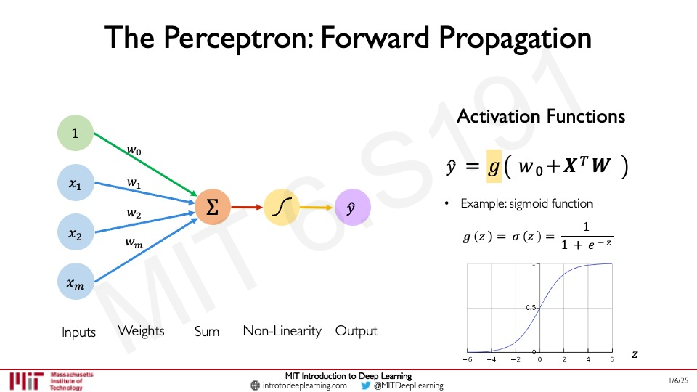
슬라이드 제목(인식): The Perceptron: Forward Propagation ActivationFunctions 1 Wo = Wo+XTW 6 x1 W1 Example:sigmoid function W2 1 x2 Wm g（z）=o（z）= 1+e-z xm Inputs Weights Sum Non-Linearity ndn
이 장에서 말하고 싶은 핵심: 시그모이드 활성화 예시입니다.
녹음본 상세 반영: [22:31] 신경망에서 자주 쓰이는 함수 중 하나일 뿐입니다. 이 발표를 진행하면서 다양한 비선형 함수 예시를 더 보게 될 겁니다. 그리고 이 슬라이드 하단에는 TensorFlow와 PyTorch 코드 스니펫이 있어서, 수학식으로 보는 내용과 오늘 랩에서 마주칠 코드 사이를 맞춰보는 데 도움이 될 겁니다. 앞서 본 sigmoid는 확률 출력에 좋고, 오른쪽에는 rectified linear unit(ReLU)도 보입니다. 이 함수는 양수 값만 출력합니다. 구간별(piecewise) 선형이라 0 이전도 선형, 0 이후도 선형이지만, x=0에서 단일 비선형 지점을 가집니다. 그렇다면... [23:31] 모델에 비선형성을 도입하는 것입니다. 비선형 활성화 함수가 없으면 모델은 선형 모델입니다. 왜 비선형성이 필요할까요? 현실 데이터가 본질적으로 매우 비선형적이기 때문입니다. 예를 들어 이 그림을 보시죠. 빨간 점과 초록 점을 분리하는 분류기, 즉 분리선을 하나 그려보라고 하면 가능할 수도 있습니다. 하지만 그 선이 반드시 직선이어야 한다고 하면, 잘 분리하는 것이 사실상 불가능해집니다. 이게 선형 모델의 한계입니다. 비선형성의 이점은 모델 깊이가 충분하면 임의로 복잡한 함수를 근사할 수 있게 해준다는 것입니다.
초보자용 자세한 해설: 퍼셉트론은 입력 점수를 계산해 비선형 함수로 통과시키는 구조입니다. 바이어스와 활성화의 역할을 정확히 구분하면 전체 신경망이 쉬워집니다. 이 슬라이드에서는 특히 시그모이드 활성화 예시입니다.
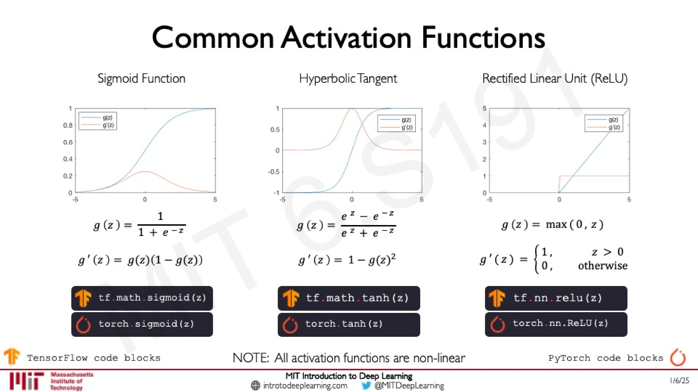
슬라이드 제목(인식): Common Activation Functions SigmoidFunction HyperbolicTangent Rectified LinearUnit(ReLU) giz) g(z) 0.8 g(z) 0.5 (z) g'(2z) 0.6 0.4 -0.5 0.2 0 0 1 ez-e-z g(z)= g(z)= g（z）=
이 장에서 말하고 싶은 핵심: 대표 활성화 함수 비교입니다.
녹음본 상세 반영: [23:31] 모델에 비선형성을 도입하는 것입니다. 비선형 활성화 함수가 없으면 모델은 선형 모델입니다. 왜 비선형성이 필요할까요? 현실 데이터가 본질적으로 매우 비선형적이기 때문입니다. 예를 들어 이 그림을 보시죠. 빨간 점과 초록 점을 분리하는 분류기, 즉 분리선을 하나 그려보라고 하면 가능할 수도 있습니다. 하지만 그 선이 반드시 직선이어야 한다고 하면, 잘 분리하는 것이 사실상 불가능해집니다. 이게 선형 모델의 한계입니다. 비선형성의 이점은 모델 깊이가 충분하면 임의로 복잡한 함수를 근사할 수 있게 해준다는 것입니다. [24:31] 이것이 비선형 신경망을 매우 강력하게 만드는 정확한 이유입니다. 간단한 예로 직관을 잡아봅시다. 여기에 학습된 신경망이 있다고 가정해 보세요. 퍼셉트론 1개, 입력 2개(x1, x2), 가중치 2개(w1, w2), 그리고 위쪽의 바이어스 항이 있습니다. 이 정보를 어떻게 처리할까요? 이전과 같습니다. 내적을 계산하고 바이어스를 더한 뒤 비선형 함수 G를 통과시킵니다. 데이터를 넣어보면 입력은 x1=+3, x2=-2입니다. 이를 가중치와 함께 식에 대입할 수 있습니다.
초보자용 자세한 해설: 퍼셉트론은 입력 점수를 계산해 비선형 함수로 통과시키는 구조입니다. 바이어스와 활성화의 역할을 정확히 구분하면 전체 신경망이 쉬워집니다. 이 슬라이드에서는 특히 대표 활성화 함수 비교입니다.
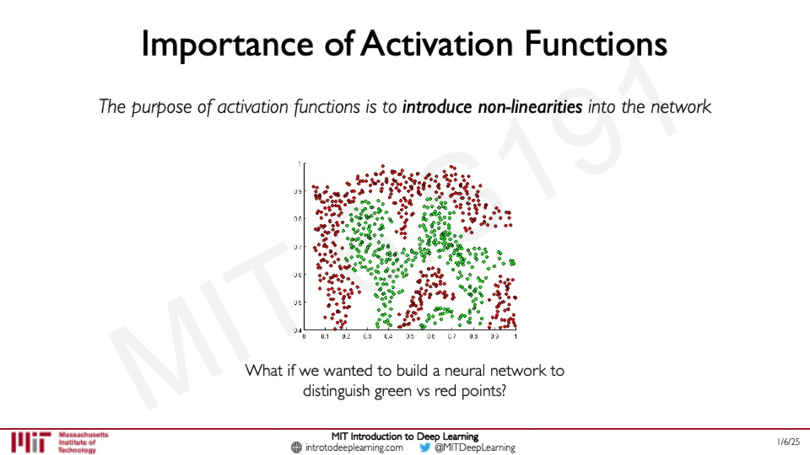
슬라이드 제목(인식): Importance of Activation Functions Thepurpose ofactivationfunctionsis tointroducenon-linearitiesintothenetwork Whatifwewantedtobuildaneuralnetworkto distinguishgreenvsred
이 장에서 말하고 싶은 핵심: 활성화 함수 필요성을 문제로 제시합니다.
녹음본 상세 반영: [24:31] 이것이 비선형 신경망을 매우 강력하게 만드는 정확한 이유입니다. 간단한 예로 직관을 잡아봅시다. 여기에 학습된 신경망이 있다고 가정해 보세요. 퍼셉트론 1개, 입력 2개(x1, x2), 가중치 2개(w1, w2), 그리고 위쪽의 바이어스 항이 있습니다. 이 정보를 어떻게 처리할까요? 이전과 같습니다. 내적을 계산하고 바이어스를 더한 뒤 비선형 함수 G를 통과시킵니다. 데이터를 넣어보면 입력은 x1=+3, x2=-2입니다. 이를 가중치와 함께 식에 대입할 수 있습니다. [25:30] 그러면 이 뉴런의 전체 함수 공간을 매개화하는 2차원 직선을 얻을 수 있습니다. 2차원이라 실제로 이 선을 그릴 수도 있습니다. 즉, 이 공간이 어떻게 생겼는지 알 수 있고, 모델이 새로운 입력을 보았을 때 그 점이 선의 어느 쪽에 놓이는지도 알 수 있습니다. 예를 들어 새로운 점이 있다고 합시다. x1, x2 공간에서 그 점은 (-1, 2)입니다. 그래프상에서 이 점이 선 기준 어디에 있는지 정확히 확인할 수 있습니다.
초보자용 자세한 해설: 퍼셉트론은 입력 점수를 계산해 비선형 함수로 통과시키는 구조입니다. 바이어스와 활성화의 역할을 정확히 구분하면 전체 신경망이 쉬워집니다. 이 슬라이드에서는 특히 활성화 함수 필요성을 문제로 제시합니다.
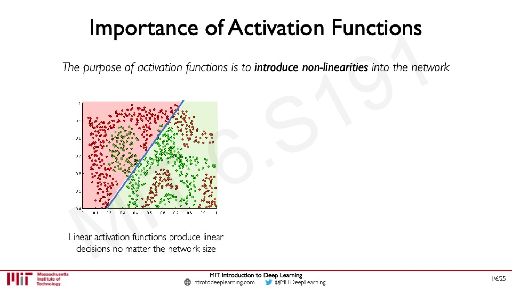
슬라이드 제목(인식): Importance of Activation Functions Thepurpose ofactivationfunctionsis tointroducenon-linearitiesintothenetwork 0.1 Linear activationfunctionsproducelinear decisionsnomatt
이 장에서 말하고 싶은 핵심: 선형 활성화 한계를 보여줍니다.
녹음본 상세 반영: [24:31] 이것이 비선형 신경망을 매우 강력하게 만드는 정확한 이유입니다. 간단한 예로 직관을 잡아봅시다. 여기에 학습된 신경망이 있다고 가정해 보세요. 퍼셉트론 1개, 입력 2개(x1, x2), 가중치 2개(w1, w2), 그리고 위쪽의 바이어스 항이 있습니다. 이 정보를 어떻게 처리할까요? 이전과 같습니다. 내적을 계산하고 바이어스를 더한 뒤 비선형 함수 G를 통과시킵니다. 데이터를 넣어보면 입력은 x1=+3, x2=-2입니다. 이를 가중치와 함께 식에 대입할 수 있습니다. [25:30] 그러면 이 뉴런의 전체 함수 공간을 매개화하는 2차원 직선을 얻을 수 있습니다. 2차원이라 실제로 이 선을 그릴 수도 있습니다. 즉, 이 공간이 어떻게 생겼는지 알 수 있고, 모델이 새로운 입력을 보았을 때 그 점이 선의 어느 쪽에 놓이는지도 알 수 있습니다. 예를 들어 새로운 점이 있다고 합시다. x1, x2 공간에서 그 점은 (-1, 2)입니다. 그래프상에서 이 점이 선 기준 어디에 있는지 정확히 확인할 수 있습니다.
초보자용 자세한 해설: 퍼셉트론은 입력 점수를 계산해 비선형 함수로 통과시키는 구조입니다. 바이어스와 활성화의 역할을 정확히 구분하면 전체 신경망이 쉬워집니다. 이 슬라이드에서는 특히 선형 활성화 한계를 보여줍니다.
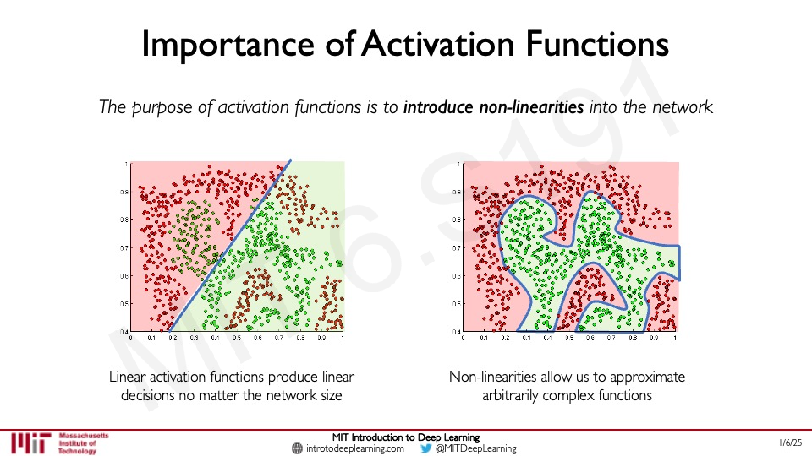
슬라이드 제목(인식): Importance of Activation Functions Thepurpose ofactivationfunctionsis tointroducenon-linearitiesintothenetwork 0 9 09 01.8 0.8 17 0.7 06 0.6 05 0.5 0.1 0.2 0.1 0.2 .9 0.3
이 장에서 말하고 싶은 핵심: 비선형 활성화의 표현력 향상을 보여줍니다.
녹음본 상세 반영: [25:30] 그러면 이 뉴런의 전체 함수 공간을 매개화하는 2차원 직선을 얻을 수 있습니다. 2차원이라 실제로 이 선을 그릴 수도 있습니다. 즉, 이 공간이 어떻게 생겼는지 알 수 있고, 모델이 새로운 입력을 보았을 때 그 점이 선의 어느 쪽에 놓이는지도 알 수 있습니다. 예를 들어 새로운 점이 있다고 합시다. x1, x2 공간에서 그 점은 (-1, 2)입니다. 그래프상에서 이 점이 선 기준 어디에 있는지 정확히 확인할 수 있습니다. [26:15] 또 식에 다시 넣어 계산할 수도 있습니다. x1에 -1, x2에 +2를 대입하고, 좌하단 식에 넣은 뒤 비선형 함수로 통과시킵니다. 여기 비선형 함수는 sigmoid이며, 점이 선의 어느 쪽에 있느냐에 따라 출력을 0~1로 압축합니다. 최종 답을 얻으면, 이 경우 값은 0.002입니다. 0.5보다 작죠. 출력이 0~1 사이이므로 0.5가 분기점이 됩니다. 이것도 그래프로 표현할 수 있습니다. 선 위에 정확히 놓이면 비선형 통과 후 출력은 0.5가 됩니다. 파란 쪽으로 갈수록 0.5 아래로 더 멀어지고, 초록 쪽으로 갈수록 0.5 위로 더 멀어집니다.
초보자용 자세한 해설: 퍼셉트론은 입력 점수를 계산해 비선형 함수로 통과시키는 구조입니다. 바이어스와 활성화의 역할을 정확히 구분하면 전체 신경망이 쉬워집니다. 이 슬라이드에서는 특히 비선형 활성화의 표현력 향상을 보여줍니다.
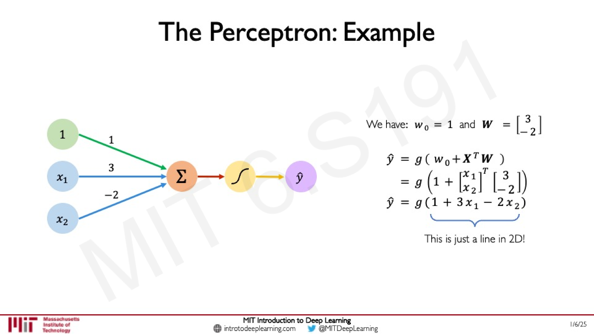
슬라이드 제목(인식): The Perceptron: Example 1 =g（wo+xTw) 3 3 (1 +[x] [-2]) x1 9 -2 =g（1+3x1-2x2) x2 This is just a line in 2D!
이 장에서 말하고 싶은 핵심: 수치 예제로 경계식을 제시합니다.
녹음본 상세 반영: [26:15] 또 식에 다시 넣어 계산할 수도 있습니다. x1에 -1, x2에 +2를 대입하고, 좌하단 식에 넣은 뒤 비선형 함수로 통과시킵니다. 여기 비선형 함수는 sigmoid이며, 점이 선의 어느 쪽에 있느냐에 따라 출력을 0~1로 압축합니다. 최종 답을 얻으면, 이 경우 값은 0.002입니다. 0.5보다 작죠. 출력이 0~1 사이이므로 0.5가 분기점이 됩니다. 이것도 그래프로 표현할 수 있습니다. 선 위에 정확히 놓이면 비선형 통과 후 출력은 0.5가 됩니다. 파란 쪽으로 갈수록 0.5 아래로 더 멀어지고, 초록 쪽으로 갈수록 0.5 위로 더 멀어집니다. [27:11] 즉, 이 선은 공간의 두 영역을 나누는 분리 경계입니다. 입력이 어느 쪽에 떨어지느냐에 따라 그 점을 양성/음성으로 분류할 수 있습니다. 여기서는 입력 2개짜리 뉴런이었지만, 입력이 훨씬 많아지면 이런 그림을 그릴 수는 없게 됩니다. 그건 우리가 직관을 세우는 데 다뤄야 할 문제이지만, 작은 스케일에서도 지금 그림으로 어느 정도 직관을 잡을 수 있기를 바랍니다. 이제 뉴런 1개를 넘어 네트워크를 만드는 방향으로 묶어봅시다. 진짜 강력한 시스템은 단일 뉴런이 아니라 전체 네트워크에서 나오니까요. 이를 위해 다이어그램을 다시 한 번 보겠습니다. 이 수업에서 몇 가지만 가...
초보자용 자세한 해설: 퍼셉트론은 입력 점수를 계산해 비선형 함수로 통과시키는 구조입니다. 바이어스와 활성화의 역할을 정확히 구분하면 전체 신경망이 쉬워집니다. 이 슬라이드에서는 특히 수치 예제로 경계식을 제시합니다.
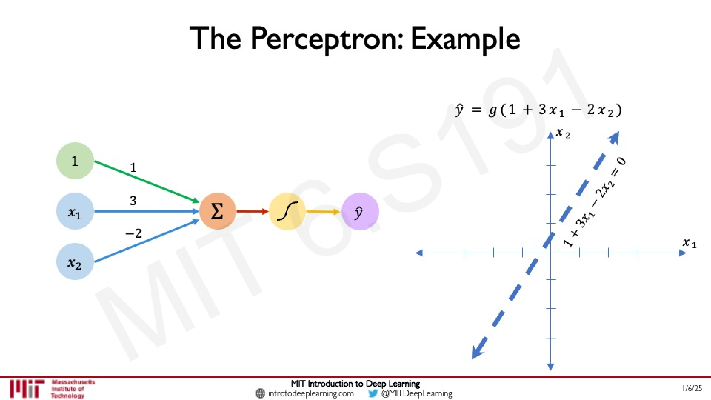
슬라이드 제목(인식): The Perceptron: Example =g（1+3x1-2x2) 1 3 3 x1 -2 x1 x2
이 장에서 말하고 싶은 핵심: 예제 경계를 좌표로 해석합니다.
녹음본 상세 반영: [27:11] 즉, 이 선은 공간의 두 영역을 나누는 분리 경계입니다. 입력이 어느 쪽에 떨어지느냐에 따라 그 점을 양성/음성으로 분류할 수 있습니다. 여기서는 입력 2개짜리 뉴런이었지만, 입력이 훨씬 많아지면 이런 그림을 그릴 수는 없게 됩니다. 그건 우리가 직관을 세우는 데 다뤄야 할 문제이지만, 작은 스케일에서도 지금 그림으로 어느 정도 직관을 잡을 수 있기를 바랍니다. 이제 뉴런 1개를 넘어 네트워크를 만드는 방향으로 묶어봅시다. 진짜 강력한 시스템은 단일 뉴런이 아니라 전체 네트워크에서 나오니까요. 이를 위해 다이어그램을 다시 한 번 보겠습니다. 이 수업에서 몇 가지만 가... [28:10] 이미 여러 번 말했지만 한 번 더 하겠습니다. 뉴런으로 정보를 어떻게 전달하나요? 내적을 하고, 바이어스를 적용하고, 비선형 함수를 적용합니다. 이 3단계가 계속 반복됩니다. 이제 많이 설명했으니 다이어그램을 단순화하겠습니다. 가중치 화살표와 바이어스 항은 그림에서 빼겠습니다. 이제부터는 두 요소가 항상 있다고 가정하고, 그림을 깔끔하게 유지하기 위해 생략하겠습니다. 여기서 Z는 내적+바이어스 결과, 즉 비선형 G 이전 값입니다. 그 다음 Z를 G에 통과시키면 Y를 얻습니다. 그림에서도 그렇게 표현되어 있습니다. 그럼 이제 출력이 하나가 아니라 둘인 신경망을 만들고...
초보자용 자세한 해설: 퍼셉트론은 입력 점수를 계산해 비선형 함수로 통과시키는 구조입니다. 바이어스와 활성화의 역할을 정확히 구분하면 전체 신경망이 쉬워집니다. 이 슬라이드에서는 특히 예제 경계를 좌표로 해석합니다.
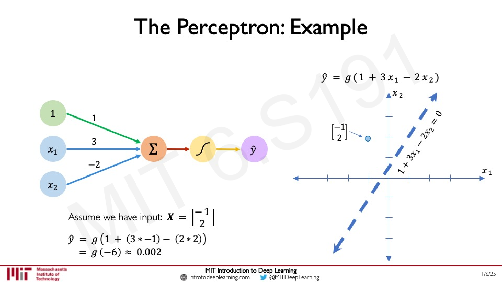
슬라이드 제목(인식): The Perceptron: Example =g（1+3x1-2x2) x2 1 3 3 x1 -2 x1 x2 [21] Assumewehave input:X= =g（1+（3*-1)-(2*2)) =g（-6)≈0.002
이 장에서 말하고 싶은 핵심: 실제 입력 대입 계산을 보여줍니다.
녹음본 상세 반영: [27:11] 즉, 이 선은 공간의 두 영역을 나누는 분리 경계입니다. 입력이 어느 쪽에 떨어지느냐에 따라 그 점을 양성/음성으로 분류할 수 있습니다. 여기서는 입력 2개짜리 뉴런이었지만, 입력이 훨씬 많아지면 이런 그림을 그릴 수는 없게 됩니다. 그건 우리가 직관을 세우는 데 다뤄야 할 문제이지만, 작은 스케일에서도 지금 그림으로 어느 정도 직관을 잡을 수 있기를 바랍니다. 이제 뉴런 1개를 넘어 네트워크를 만드는 방향으로 묶어봅시다. 진짜 강력한 시스템은 단일 뉴런이 아니라 전체 네트워크에서 나오니까요. 이를 위해 다이어그램을 다시 한 번 보겠습니다. 이 수업에서 몇 가지만 가... [28:10] 이미 여러 번 말했지만 한 번 더 하겠습니다. 뉴런으로 정보를 어떻게 전달하나요? 내적을 하고, 바이어스를 적용하고, 비선형 함수를 적용합니다. 이 3단계가 계속 반복됩니다. 이제 많이 설명했으니 다이어그램을 단순화하겠습니다. 가중치 화살표와 바이어스 항은 그림에서 빼겠습니다. 이제부터는 두 요소가 항상 있다고 가정하고, 그림을 깔끔하게 유지하기 위해 생략하겠습니다. 여기서 Z는 내적+바이어스 결과, 즉 비선형 G 이전 값입니다. 그 다음 Z를 G에 통과시키면 Y를 얻습니다. 그림에서도 그렇게 표현되어 있습니다. 그럼 이제 출력이 하나가 아니라 둘인 신경망을 만들고...
초보자용 자세한 해설: 퍼셉트론은 입력 점수를 계산해 비선형 함수로 통과시키는 구조입니다. 바이어스와 활성화의 역할을 정확히 구분하면 전체 신경망이 쉬워집니다. 이 슬라이드에서는 특히 실제 입력 대입 계산을 보여줍니다.
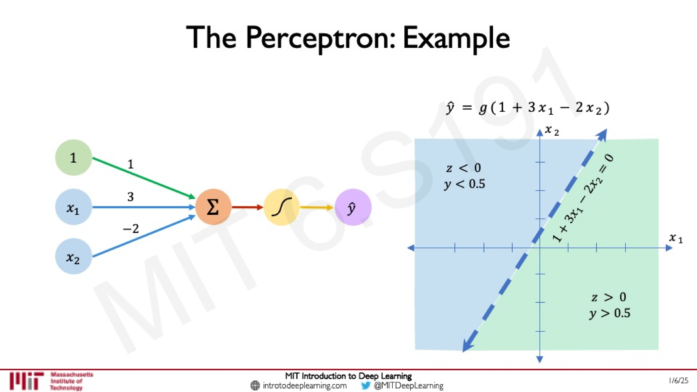
슬라이드 제목(인식): The Perceptron: Example =g（1+3x1-2x2) x2 1 0>Z y<0.5 3 3 x1 -2 x1 x2 Z>0 y>0.5
이 장에서 말하고 싶은 핵심: 0.5 기준 분류 해석으로 마무리합니다.
녹음본 상세 반영: [28:10] 이미 여러 번 말했지만 한 번 더 하겠습니다. 뉴런으로 정보를 어떻게 전달하나요? 내적을 하고, 바이어스를 적용하고, 비선형 함수를 적용합니다. 이 3단계가 계속 반복됩니다. 이제 많이 설명했으니 다이어그램을 단순화하겠습니다. 가중치 화살표와 바이어스 항은 그림에서 빼겠습니다. 이제부터는 두 요소가 항상 있다고 가정하고, 그림을 깔끔하게 유지하기 위해 생략하겠습니다. 여기서 Z는 내적+바이어스 결과, 즉 비선형 G 이전 값입니다. 그 다음 Z를 G에 통과시키면 Y를 얻습니다. 그림에서도 그렇게 표현되어 있습니다. 그럼 이제 출력이 하나가 아니라 둘인 신경망을 만들고... [29:09] 사실 간단합니다. 퍼셉트론을 하나 더 만들면 됩니다. 즉 뉴런이 하나에서 둘이 됩니다. 두 뉴런은 같은 입력을 받지만, 가중치가 다르므로 출력이 다르게 나옵니다. 같은 정보를 입력으로 받아 각자의 가중치로 처리하고, 서로 다른 두 출력을 냅니다. 이런 층(layer)은 입력의 모든 요소가 출력의 모든 요소에 연결되므로 보통 dense layer라고 부릅니다. 그리고 비선형을 제외하면 선형층(linear layer)이기도 합니다. 왜냐하면 입력 X를 가중치 W로 선형 연산하고 바이어스를 더하는 것도 선형 연산이기 때문입니다. 이제 이 전체 연산을 파이썬에서 직접 구현할...
초보자용 자세한 해설: 퍼셉트론은 입력 점수를 계산해 비선형 함수로 통과시키는 구조입니다. 바이어스와 활성화의 역할을 정확히 구분하면 전체 신경망이 쉬워집니다. 이 슬라이드에서는 특히 0.5 기준 분류 해석으로 마무리합니다.
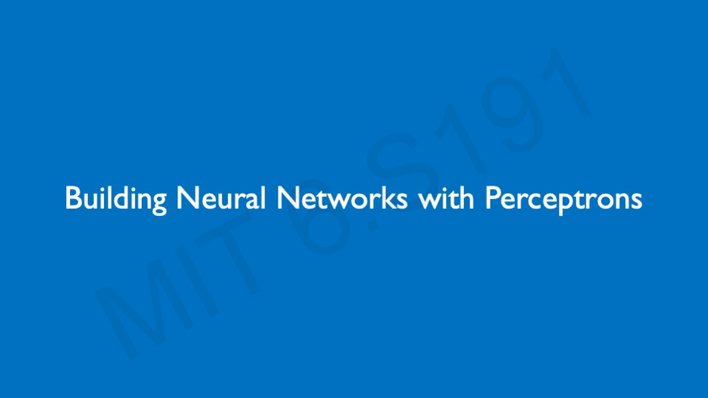
슬라이드 제목(인식): Building Neural Networks with Perceptrons
이 장에서 말하고 싶은 핵심: 단일 뉴런에서 네트워크로 전환합니다.
녹음본 상세 반영: [29:09] 사실 간단합니다. 퍼셉트론을 하나 더 만들면 됩니다. 즉 뉴런이 하나에서 둘이 됩니다. 두 뉴런은 같은 입력을 받지만, 가중치가 다르므로 출력이 다르게 나옵니다. 같은 정보를 입력으로 받아 각자의 가중치로 처리하고, 서로 다른 두 출력을 냅니다. 이런 층(layer)은 입력의 모든 요소가 출력의 모든 요소에 연결되므로 보통 dense layer라고 부릅니다. 그리고 비선형을 제외하면 선형층(linear layer)이기도 합니다. 왜냐하면 입력 X를 가중치 W로 선형 연산하고 바이어스를 더하는 것도 선형 연산이기 때문입니다. 이제 이 전체 연산을 파이썬에서 직접 구현할... [30:09] 먼저 두 가중치를 정의합니다. self.w는 가중치 벡터, self.b는 바이어스 스칼라입니다. 다만 여기서는 전체 출력이 n차원이므로 출력에도 n개의 뉴런이 있게 됩니다. 이 층의 forward pass를 어떻게 하죠? 이전과 완전히 같습니다. 행렬 곱(내적), 바이어스 더하기, 비선형 적용입니다. 여기서는 sigmoid를 썼지만, 어떤 비선형으로든 바꿀 수 있습니다. PyTorch에서도 좌우가 거의 완전히 대응됩니다. 가중치와 바이어스를 만들고, 행렬 곱하고, 바이어스 더하고, 비선형 적용. 똑같습니다.
초보자용 자세한 해설: 레이어를 쌓는다는 건 특징을 단계적으로 조합한다는 뜻입니다. 수식-구조-코드가 같은 내용을 다른 표현으로 보여준다고 생각하면 이해가 빨라집니다. 이 슬라이드에서는 특히 단일 뉴런에서 네트워크로 전환합니다.
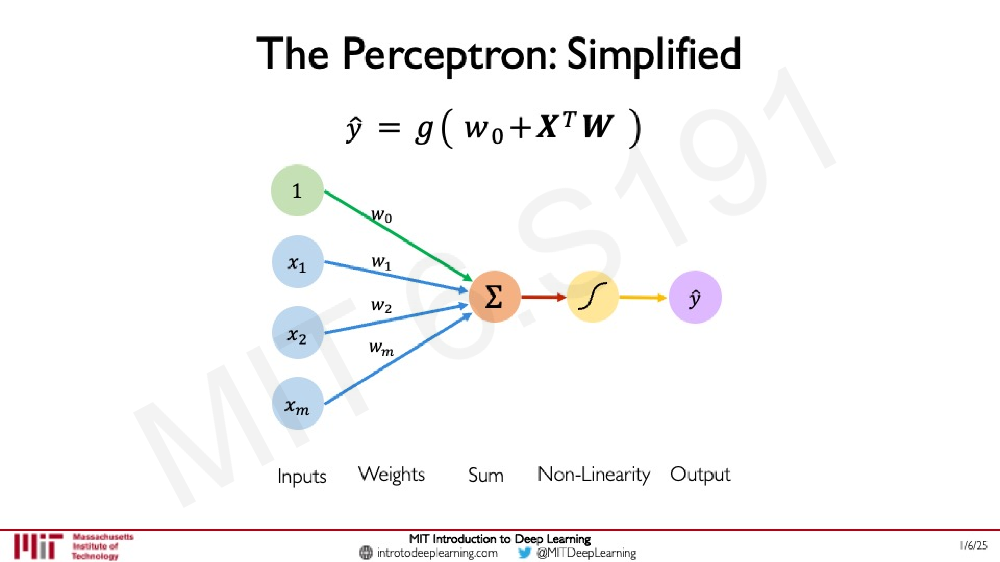
슬라이드 제목(인식): The Perceptron: Simplified = g(wo+xTw 1 x1 W1 W2 x2 Wrm xm Inputs Weights Sum Non-Linearity Output
이 장에서 말하고 싶은 핵심: 도식을 단순화해 반복 구조를 강조합니다.
녹음본 상세 반영: [29:09] 사실 간단합니다. 퍼셉트론을 하나 더 만들면 됩니다. 즉 뉴런이 하나에서 둘이 됩니다. 두 뉴런은 같은 입력을 받지만, 가중치가 다르므로 출력이 다르게 나옵니다. 같은 정보를 입력으로 받아 각자의 가중치로 처리하고, 서로 다른 두 출력을 냅니다. 이런 층(layer)은 입력의 모든 요소가 출력의 모든 요소에 연결되므로 보통 dense layer라고 부릅니다. 그리고 비선형을 제외하면 선형층(linear layer)이기도 합니다. 왜냐하면 입력 X를 가중치 W로 선형 연산하고 바이어스를 더하는 것도 선형 연산이기 때문입니다. 이제 이 전체 연산을 파이썬에서 직접 구현할... [30:09] 먼저 두 가중치를 정의합니다. self.w는 가중치 벡터, self.b는 바이어스 스칼라입니다. 다만 여기서는 전체 출력이 n차원이므로 출력에도 n개의 뉴런이 있게 됩니다. 이 층의 forward pass를 어떻게 하죠? 이전과 완전히 같습니다. 행렬 곱(내적), 바이어스 더하기, 비선형 적용입니다. 여기서는 sigmoid를 썼지만, 어떤 비선형으로든 바꿀 수 있습니다. PyTorch에서도 좌우가 거의 완전히 대응됩니다. 가중치와 바이어스를 만들고, 행렬 곱하고, 바이어스 더하고, 비선형 적용. 똑같습니다.
초보자용 자세한 해설: 레이어를 쌓는다는 건 특징을 단계적으로 조합한다는 뜻입니다. 수식-구조-코드가 같은 내용을 다른 표현으로 보여준다고 생각하면 이해가 빨라집니다. 이 슬라이드에서는 특히 도식을 단순화해 반복 구조를 강조합니다.
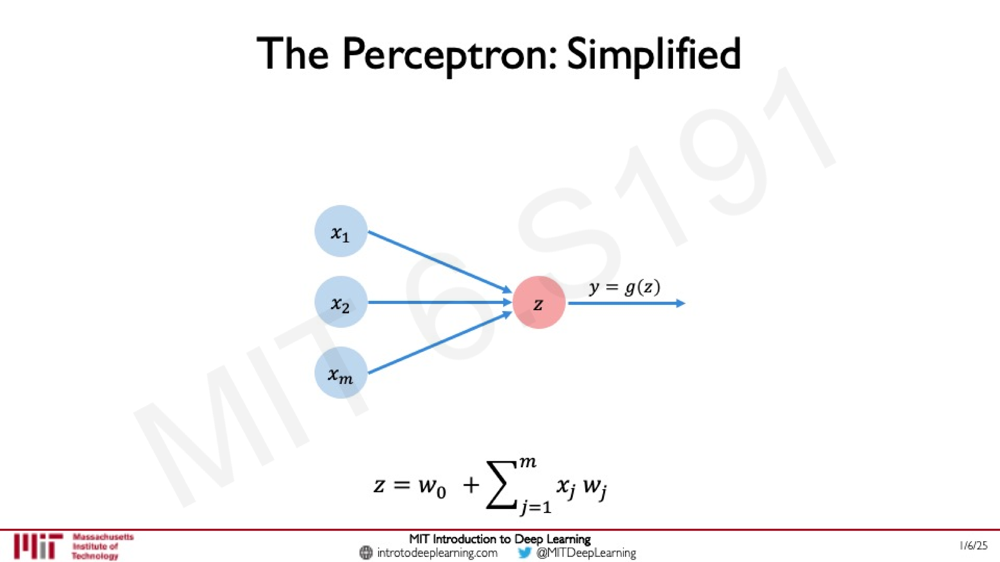
슬라이드 제목(인식): The Perceptron: Simplified x1 y=g(z) x2 Z xm m Z=Wo + 7 xjWj j=1
이 장에서 말하고 싶은 핵심: z/y 표기를 고정합니다.
녹음본 상세 반영: [30:09] 먼저 두 가중치를 정의합니다. self.w는 가중치 벡터, self.b는 바이어스 스칼라입니다. 다만 여기서는 전체 출력이 n차원이므로 출력에도 n개의 뉴런이 있게 됩니다. 이 층의 forward pass를 어떻게 하죠? 이전과 완전히 같습니다. 행렬 곱(내적), 바이어스 더하기, 비선형 적용입니다. 여기서는 sigmoid를 썼지만, 어떤 비선형으로든 바꿀 수 있습니다. PyTorch에서도 좌우가 거의 완전히 대응됩니다. 가중치와 바이어스를 만들고, 행렬 곱하고, 바이어스 더하고, 비선형 적용. 똑같습니다. [31:06] 다행히 TensorFlow와 PyTorch에는 이런 dense/linear layer가 이미 구현되어 있어서 우리가 직접 짤 필요는 없습니다. 방금은 학습용 연습이었습니다. 아래 함수 호출처럼 그냥 쓰면 됩니다. 이제 단일 레이어 신경망, 즉 출력이 단일 퍼셉트론에서 바로 나오지 않고 중간에 한 층(은닉층)을 거치는 경우를 봅시다. 그 모습은 입력층과 출력층 사이에 은닉층 하나가 놓인 구조입니다. 왜 hidden(은닉)이라고 부를까요? 이 층의 데이터는 우리가 직접 관찰하지 않기 때문입니다. 입력층은 우리가 주는 데이터, 출력층은 보통 우리가 감독하는 대상, 은닉층은...
초보자용 자세한 해설: 레이어를 쌓는다는 건 특징을 단계적으로 조합한다는 뜻입니다. 수식-구조-코드가 같은 내용을 다른 표현으로 보여준다고 생각하면 이해가 빨라집니다. 이 슬라이드에서는 특히 z/y 표기를 고정합니다.
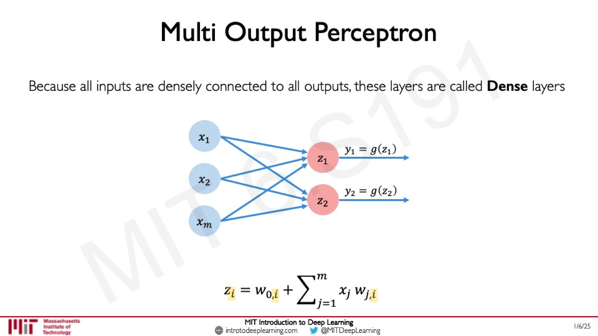
슬라이드 제목(인식): Multi OutputPerceptron Because all inputs aredensely connected to alloutputs,these layersarecalledDenselayers x1 y1=g(z1) Z1 x2 y2=g（z2) Z2 xm m Z Zi=Wo,i + xj Wj,i j=1
이 장에서 말하고 싶은 핵심: 다중 출력 Dense를 소개합니다.
녹음본 상세 반영: [31:06] 다행히 TensorFlow와 PyTorch에는 이런 dense/linear layer가 이미 구현되어 있어서 우리가 직접 짤 필요는 없습니다. 방금은 학습용 연습이었습니다. 아래 함수 호출처럼 그냥 쓰면 됩니다. 이제 단일 레이어 신경망, 즉 출력이 단일 퍼셉트론에서 바로 나오지 않고 중간에 한 층(은닉층)을 거치는 경우를 봅시다. 그 모습은 입력층과 출력층 사이에 은닉층 하나가 놓인 구조입니다. 왜 hidden(은닉)이라고 부를까요? 이 층의 데이터는 우리가 직접 관찰하지 않기 때문입니다. 입력층은 우리가 주는 데이터, 출력층은 보통 우리가 감독하는 대상, 은닉층은... [32:05] 이제 입력→은닉, 은닉→출력 변환이 둘 다 있으므로 층이 2개가 됩니다. 따라서 가중치 행렬 W도 2개가 필요합니다. 왼쪽 W1, 오른쪽 W2입니다. 은닉층의 단일 유닛(예: Z2)을 보면 이전 퍼셉트론과 똑같습니다. 내적, 바이어스, 비선형으로 계산합니다. 달라진 건 없습니다. 다른 노드(예: 바로 아래 Z3)도 동일하게 계산되지만 가중치가 다릅니다. 입력은 같아도 내적/바이어스 결과가 달라집니다. 그림이 다소 복잡하니 더 단순화하겠습니다.
초보자용 자세한 해설: 레이어를 쌓는다는 건 특징을 단계적으로 조합한다는 뜻입니다. 수식-구조-코드가 같은 내용을 다른 표현으로 보여준다고 생각하면 이해가 빨라집니다. 이 슬라이드에서는 특히 다중 출력 Dense를 소개합니다.
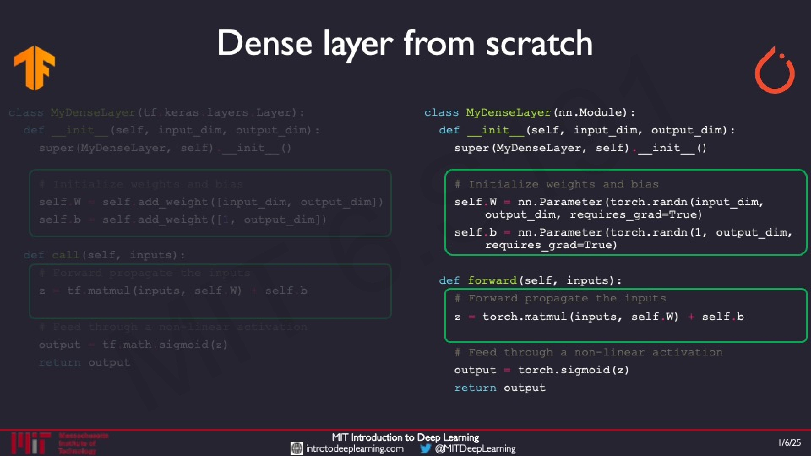
슬라이드 제목(인식): Dense layer from scratch class MyDenseLayer(tf.keras.layers.Layer): class MyDenseLayer(nn.Module): definit(self,input dim,output dim): def init(self,input_dim,output_dim)
이 장에서 말하고 싶은 핵심: Dense 직접 구현 예시입니다.
녹음본 상세 반영: [31:06] 다행히 TensorFlow와 PyTorch에는 이런 dense/linear layer가 이미 구현되어 있어서 우리가 직접 짤 필요는 없습니다. 방금은 학습용 연습이었습니다. 아래 함수 호출처럼 그냥 쓰면 됩니다. 이제 단일 레이어 신경망, 즉 출력이 단일 퍼셉트론에서 바로 나오지 않고 중간에 한 층(은닉층)을 거치는 경우를 봅시다. 그 모습은 입력층과 출력층 사이에 은닉층 하나가 놓인 구조입니다. 왜 hidden(은닉)이라고 부를까요? 이 층의 데이터는 우리가 직접 관찰하지 않기 때문입니다. 입력층은 우리가 주는 데이터, 출력층은 보통 우리가 감독하는 대상, 은닉층은... [32:05] 이제 입력→은닉, 은닉→출력 변환이 둘 다 있으므로 층이 2개가 됩니다. 따라서 가중치 행렬 W도 2개가 필요합니다. 왼쪽 W1, 오른쪽 W2입니다. 은닉층의 단일 유닛(예: Z2)을 보면 이전 퍼셉트론과 똑같습니다. 내적, 바이어스, 비선형으로 계산합니다. 달라진 건 없습니다. 다른 노드(예: 바로 아래 Z3)도 동일하게 계산되지만 가중치가 다릅니다. 입력은 같아도 내적/바이어스 결과가 달라집니다. 그림이 다소 복잡하니 더 단순화하겠습니다.
초보자용 자세한 해설: 레이어를 쌓는다는 건 특징을 단계적으로 조합한다는 뜻입니다. 수식-구조-코드가 같은 내용을 다른 표현으로 보여준다고 생각하면 이해가 빨라집니다. 이 슬라이드에서는 특히 Dense 직접 구현 예시입니다.
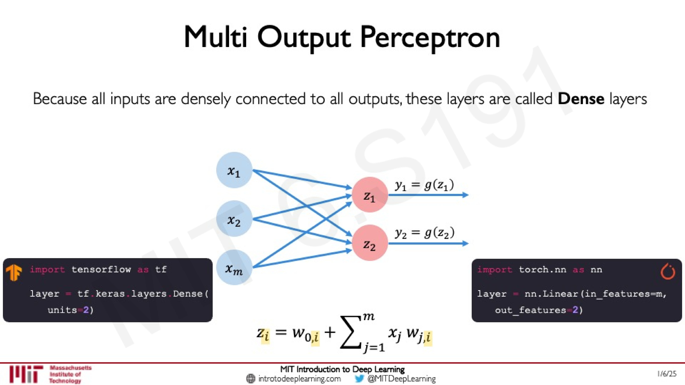
슬라이드 제목(인식): Multi OutputPerceptron Becauseallinputsaredenselyconnectedtoalloutputs,theselayersarecalledDenselayers x1 y1=g（z1） Z1 x2 y2=g（22) Z2 xm import tensorflow astf import torc
이 장에서 말하고 싶은 핵심: 내장 레이어 API 활용 예시입니다.
녹음본 상세 반영: [32:05] 이제 입력→은닉, 은닉→출력 변환이 둘 다 있으므로 층이 2개가 됩니다. 따라서 가중치 행렬 W도 2개가 필요합니다. 왼쪽 W1, 오른쪽 W2입니다. 은닉층의 단일 유닛(예: Z2)을 보면 이전 퍼셉트론과 똑같습니다. 내적, 바이어스, 비선형으로 계산합니다. 달라진 건 없습니다. 다른 노드(예: 바로 아래 Z3)도 동일하게 계산되지만 가중치가 다릅니다. 입력은 같아도 내적/바이어스 결과가 달라집니다. 그림이 다소 복잡하니 더 단순화하겠습니다. [33:04] 화살표들을 하나의 기호로 바꾸겠습니다. 이 기호는 두 구성 요소 사이에서 일어나는 dense(선형 연결) 레이어를 의미합니다. 그리고 이런 네트워크를 TensorFlow/PyTorch로 만들 때는 편의 함수 덕분에 처음부터 다 구현할 필요가 없어 큰 도움이 됩니다. 그럼 딥 신경망은 어떻게 만들까요? 딥 신경망은 그저 이런 선형층+비선형을 순차적으로 계속 쌓는 것입니다. 선형층, 비선형, 선형층, 비선형을 계층적으로 반복해 최종 출력을 만드는 모델입니다.
초보자용 자세한 해설: 레이어를 쌓는다는 건 특징을 단계적으로 조합한다는 뜻입니다. 수식-구조-코드가 같은 내용을 다른 표현으로 보여준다고 생각하면 이해가 빨라집니다. 이 슬라이드에서는 특히 내장 레이어 API 활용 예시입니다.
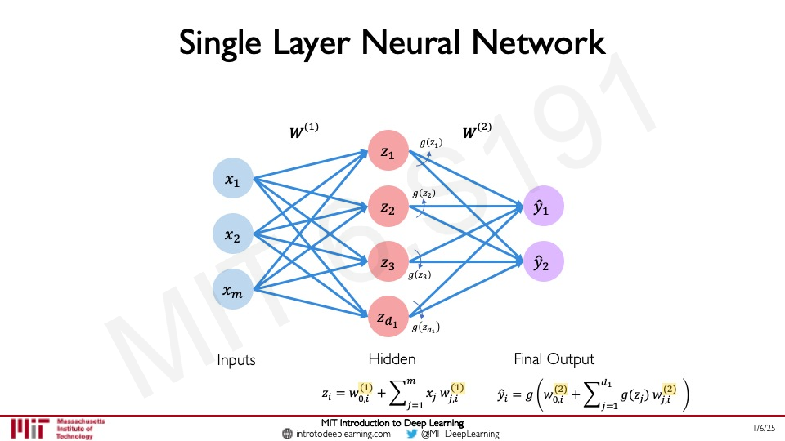
슬라이드 제목(인식): Single Layer Neural Network w(1) W(2) g(z1) Z1 x1 g(z2) Z2 y1 x2 Z3 y2 g(z3) xm Zd1 g(za) Inputs Hidden Final Output 771 (1) (1) (2) Zi=woi x;wii y=g Wo,i g(z;)wji (2) j=
이 장에서 말하고 싶은 핵심: 단일 은닉층 전체 구조 설명입니다.
녹음본 상세 반영: [33:04] 화살표들을 하나의 기호로 바꾸겠습니다. 이 기호는 두 구성 요소 사이에서 일어나는 dense(선형 연결) 레이어를 의미합니다. 그리고 이런 네트워크를 TensorFlow/PyTorch로 만들 때는 편의 함수 덕분에 처음부터 다 구현할 필요가 없어 큰 도움이 됩니다. 그럼 딥 신경망은 어떻게 만들까요? 딥 신경망은 그저 이런 선형층+비선형을 순차적으로 계속 쌓는 것입니다. 선형층, 비선형, 선형층, 비선형을 계층적으로 반복해 최종 출력을 만드는 모델입니다. [34:03] 네, 질문 주세요. 좋은 질문입니다. 현실 예시로, 깊이 축(좌우)으로 층을 늘리는 이유와 상하 축으로 출력을 늘리는 이유를 설명해보겠습니다. 깊이(대략 x축)는 네트워크의 복잡도에 해당합니다. 과제가 복잡할수록 더 많은 깊이가 필요합니다. 계층적 비선형성이 더 많이 들어가기 때문이죠. 층이 하나(단일 dense + 비선형)면 복잡성 추출 능력에 한계가 있습니다. 비선형이 하나뿐이라 표현력이 제한됩니다. 과제가 더 복잡해질수록 더 깊고 표현력 있는 함수가 필요합니다.
초보자용 자세한 해설: 레이어를 쌓는다는 건 특징을 단계적으로 조합한다는 뜻입니다. 수식-구조-코드가 같은 내용을 다른 표현으로 보여준다고 생각하면 이해가 빨라집니다. 이 슬라이드에서는 특히 단일 은닉층 전체 구조 설명입니다.
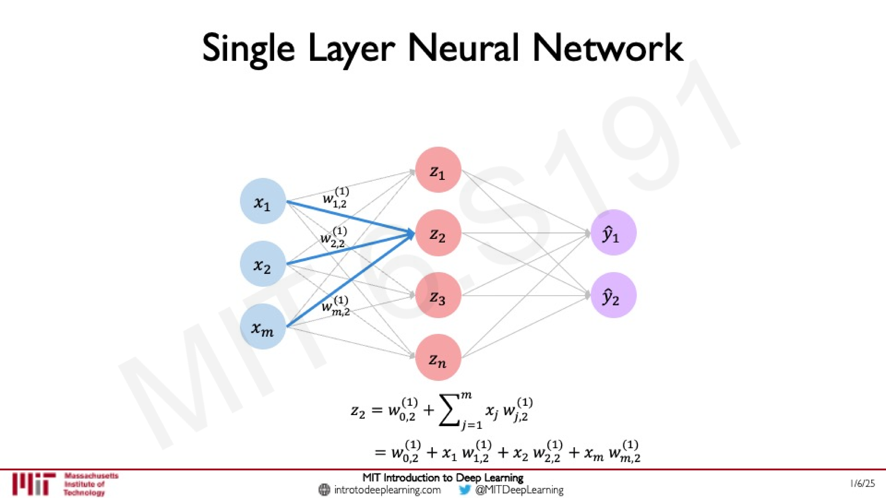
슬라이드 제목(인식): Single Layer Neural Network Z1 (1) Wi,2 x1 (1) Z2 y1 W. 2,2 x2 Z3 y2 w(1) m,2 xm Zn (1) xjWj,2 (1) (1) (1) (1) (1) =Wo.2 +xWi,2 +x2W2,2 +xmWm,2
이 장에서 말하고 싶은 핵심: 특정 노드 계산식 전개입니다.
녹음본 상세 반영: [34:03] 네, 질문 주세요. 좋은 질문입니다. 현실 예시로, 깊이 축(좌우)으로 층을 늘리는 이유와 상하 축으로 출력을 늘리는 이유를 설명해보겠습니다. 깊이(대략 x축)는 네트워크의 복잡도에 해당합니다. 과제가 복잡할수록 더 많은 깊이가 필요합니다. 계층적 비선형성이 더 많이 들어가기 때문이죠. 층이 하나(단일 dense + 비선형)면 복잡성 추출 능력에 한계가 있습니다. 비선형이 하나뿐이라 표현력이 제한됩니다. 과제가 더 복잡해질수록 더 깊고 표현력 있는 함수가 필요합니다. [35:02] 이게 한 축이고, 다른 축(출력 수 증가)은 문제 정의 자체입니다. 더 많은 것을 예측하려면 출력이 더 많이 필요합니다. 예를 들어 이미지를 생성하려면 이미지의 모든 픽셀 값을 예측해야 하니 출력이 많아집니다. 반면 내일의 날씨(온도)만 예측한다면 값 하나, 출력 하나면 됩니다. 즉 문제 정의에 따라 두 요소가 달라집니다. 훌륭합니다.
초보자용 자세한 해설: 레이어를 쌓는다는 건 특징을 단계적으로 조합한다는 뜻입니다. 수식-구조-코드가 같은 내용을 다른 표현으로 보여준다고 생각하면 이해가 빨라집니다. 이 슬라이드에서는 특히 특정 노드 계산식 전개입니다.
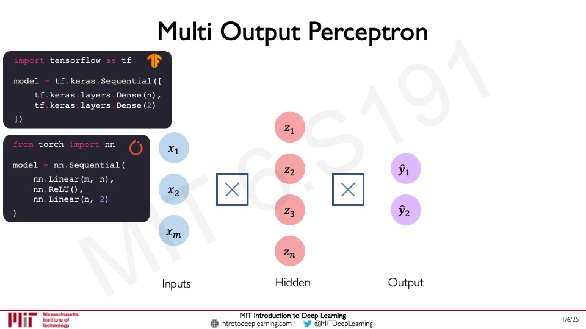
슬라이드 제목(인식): Multi Output Perceptron import tensorflow tf model tf.keras.Sequential([ tf.keras.layers.Dense(n), tf.keras.layers.Dense(2) Z1 from torch import nn x1 model nn.Sequential
이 장에서 말하고 싶은 핵심: Sequential 모델 조립 예시입니다.
녹음본 상세 반영: [34:03] 네, 질문 주세요. 좋은 질문입니다. 현실 예시로, 깊이 축(좌우)으로 층을 늘리는 이유와 상하 축으로 출력을 늘리는 이유를 설명해보겠습니다. 깊이(대략 x축)는 네트워크의 복잡도에 해당합니다. 과제가 복잡할수록 더 많은 깊이가 필요합니다. 계층적 비선형성이 더 많이 들어가기 때문이죠. 층이 하나(단일 dense + 비선형)면 복잡성 추출 능력에 한계가 있습니다. 비선형이 하나뿐이라 표현력이 제한됩니다. 과제가 더 복잡해질수록 더 깊고 표현력 있는 함수가 필요합니다. [35:02] 이게 한 축이고, 다른 축(출력 수 증가)은 문제 정의 자체입니다. 더 많은 것을 예측하려면 출력이 더 많이 필요합니다. 예를 들어 이미지를 생성하려면 이미지의 모든 픽셀 값을 예측해야 하니 출력이 많아집니다. 반면 내일의 날씨(온도)만 예측한다면 값 하나, 출력 하나면 됩니다. 즉 문제 정의에 따라 두 요소가 달라집니다. 훌륭합니다.
초보자용 자세한 해설: 레이어를 쌓는다는 건 특징을 단계적으로 조합한다는 뜻입니다. 수식-구조-코드가 같은 내용을 다른 표현으로 보여준다고 생각하면 이해가 빨라집니다. 이 슬라이드에서는 특히 Sequential 모델 조립 예시입니다.
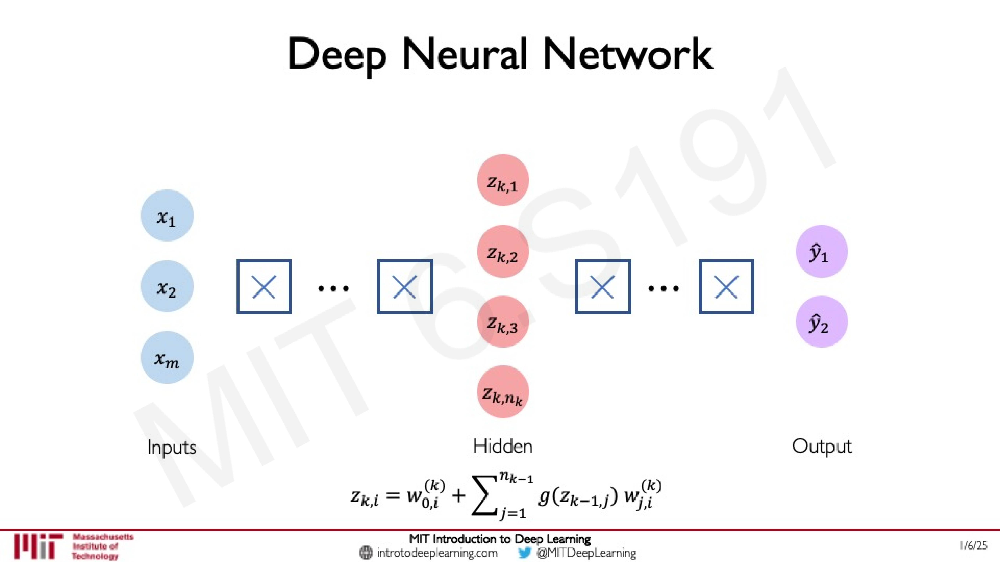
슬라이드 제목(인식): Deep Neural Network Zk,1 x1 Zk,2 x2 Zk,3 y2 Xm Zk,nk Inputs Hidden ndino nk-1 (k) g(Zk-1,j)wji (k) Zk,i=Wo,i j=1
이 장에서 말하고 싶은 핵심: 딥 네트워크 일반형입니다.
녹음본 상세 반영: [35:02] 이게 한 축이고, 다른 축(출력 수 증가)은 문제 정의 자체입니다. 더 많은 것을 예측하려면 출력이 더 많이 필요합니다. 예를 들어 이미지를 생성하려면 이미지의 모든 픽셀 값을 예측해야 하니 출력이 많아집니다. 반면 내일의 날씨(온도)만 예측한다면 값 하나, 출력 하나면 됩니다. 즉 문제 정의에 따라 두 요소가 달라집니다. 훌륭합니다. [35:38] 이제 신경망을 구성하는 아키텍처를 알았으니, 이 이론을 실제에 적용해 보는 예제로 넘어가겠습니다. 신경망을 실제 문제 해결에 어떻게 적용하는지 보죠. 아주 현실적이진 않을 수 있지만, 여러분 모두 한 번쯤 생각했을 법한 질문으로 해보겠습니다. “내가 이 수업을 통과할까?” 이 답을 추론/예측하는 신경망을 만들어봅시다. 매우 단순한 모델로, 입력 2개와 출력 1개를 사용합니다. 출력은 “이 수업 통과 여부(예/아니오)”라는 단일 확률입니다.
초보자용 자세한 해설: 레이어를 쌓는다는 건 특징을 단계적으로 조합한다는 뜻입니다. 수식-구조-코드가 같은 내용을 다른 표현으로 보여준다고 생각하면 이해가 빨라집니다. 이 슬라이드에서는 특히 딥 네트워크 일반형입니다.
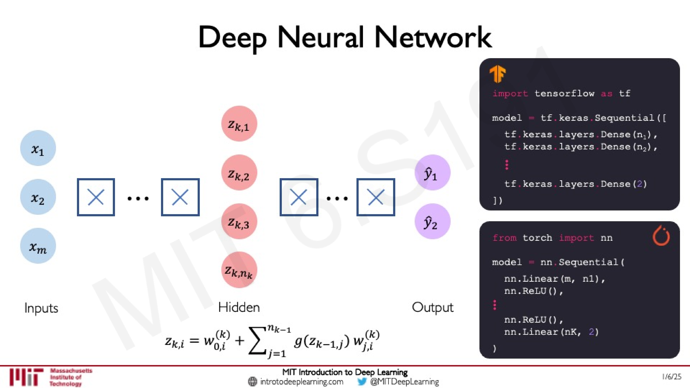
슬라이드 제목(인식): Deep Neural Network importt tensorflow as tf model tf.keras.Sequential([ Zk,1 tf.keras.layers.Dense(n), x1 tf.keras.layers.Dense(n), Zk,2 y1 tf.keras.layers.Dense(2) x2 Z
이 장에서 말하고 싶은 핵심: 깊은 모델 코드 대응입니다.
녹음본 상세 반영: [35:38] 이제 신경망을 구성하는 아키텍처를 알았으니, 이 이론을 실제에 적용해 보는 예제로 넘어가겠습니다. 신경망을 실제 문제 해결에 어떻게 적용하는지 보죠. 아주 현실적이진 않을 수 있지만, 여러분 모두 한 번쯤 생각했을 법한 질문으로 해보겠습니다. “내가 이 수업을 통과할까?” 이 답을 추론/예측하는 신경망을 만들어봅시다. 매우 단순한 모델로, 입력 2개와 출력 1개를 사용합니다. 출력은 “이 수업 통과 여부(예/아니오)”라는 단일 확률입니다. [36:32] 입력은 두 가지로 정의합니다. 첫째, 1주일 동안 여러분이 출석한 강의 수. 둘째, 최종 프로젝트에 쓴 시간(시간 단위). 이제 그려봅시다. 우리는 수년간 이 수업을 했기 때문에 과거 학생 데이터가 있습니다. 초록 점은 통과한 사람, 빨간 점은 통과하지 못한 사람입니다. 그리고 현재의 여러분 위치도(혹은 예상값도) 표시할 수 있습니다. 강의를 몇 번 들을지, 프로젝트에 몇 시간을 쓸지 말이죠. 우리가 원하는 것은 과거 학생들의 데이터를 바탕으로 여러분의 통과 확률을 예측하는 신경망입니다. 해봅시다.
초보자용 자세한 해설: 레이어를 쌓는다는 건 특징을 단계적으로 조합한다는 뜻입니다. 수식-구조-코드가 같은 내용을 다른 표현으로 보여준다고 생각하면 이해가 빨라집니다. 이 슬라이드에서는 특히 깊은 모델 코드 대응입니다.
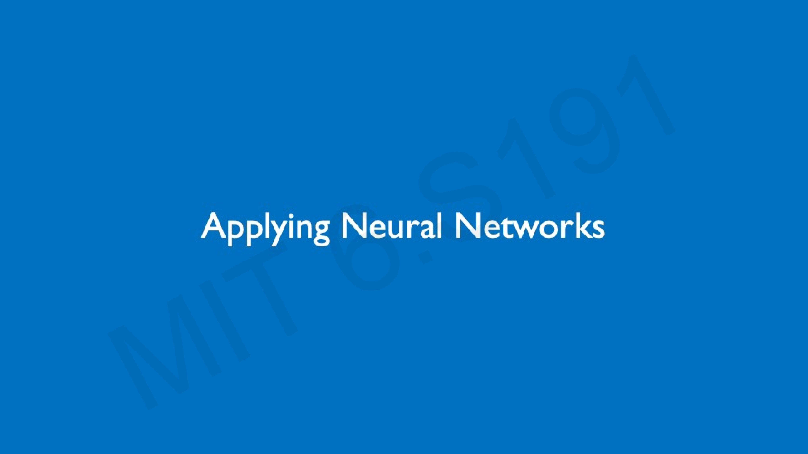
슬라이드 제목(인식): Applying Neural Networks
이 장에서 말하고 싶은 핵심: 이론에서 적용으로 전환합니다.
녹음본 상세 반영: [36:32] 입력은 두 가지로 정의합니다. 첫째, 1주일 동안 여러분이 출석한 강의 수. 둘째, 최종 프로젝트에 쓴 시간(시간 단위). 이제 그려봅시다. 우리는 수년간 이 수업을 했기 때문에 과거 학생 데이터가 있습니다. 초록 점은 통과한 사람, 빨간 점은 통과하지 못한 사람입니다. 그리고 현재의 여러분 위치도(혹은 예상값도) 표시할 수 있습니다. 강의를 몇 번 들을지, 프로젝트에 몇 시간을 쓸지 말이죠. 우리가 원하는 것은 과거 학생들의 데이터를 바탕으로 여러분의 통과 확률을 예측하는 신경망입니다. 해봅시다. [37:31] 지금까지 배운 내용으로 충분합니다. 단계별로 가죠. 새로운 사람(여러분)의 입력 두 개는 강의 4회 출석, 최종 프로젝트 5시간입니다. 이 두 숫자를 모델 왼쪽 입력으로 넣습니다. 모델은 단일 은닉층 신경망, 즉 아주 기본 구조로 시작합니다. 은닉층에는 은닉 유닛 3개, 출력은 하나(통과 예/아니오 이진 출력)입니다. 그런데 이 모델은 답을 크게 틀렸습니다. 통과 확률을 0.1(10%)로 예측했지만, 실제로는 아주 잘해서 확실히 통과했습니다. 왜 이 네트워크가 이렇게 심하게 실패했을까요?
초보자용 자세한 해설: 손실함수는 모델의 채점표입니다. 분류와 회귀에서 채점표가 다르며, 이 선택이 학습 방향을 결정합니다. 이 슬라이드에서는 특히 이론에서 적용으로 전환합니다.
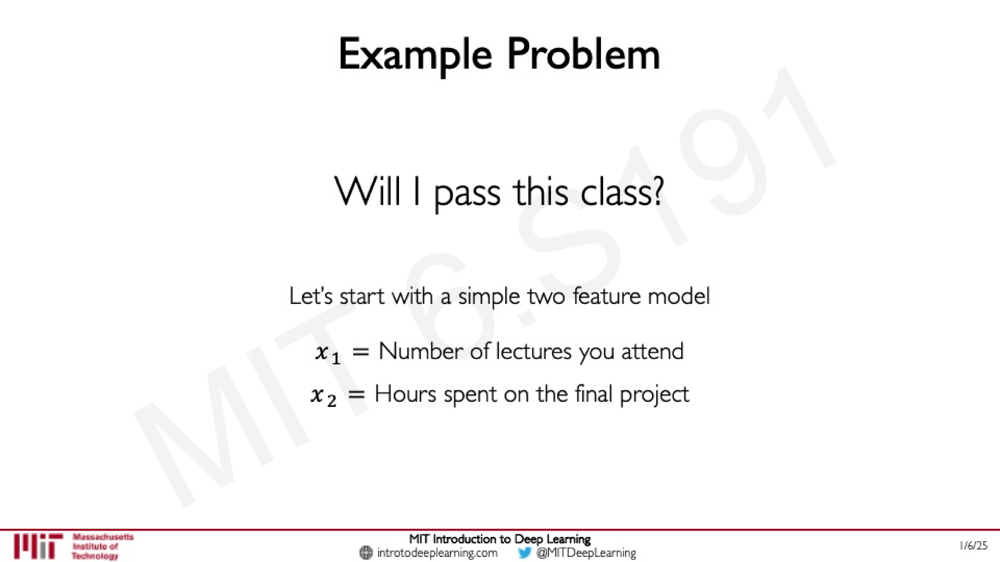
슬라이드 제목(인식): ExampleProblem Will I pass this class? Let'sstartwith a simpletwofeature model x1 = Number of lectures you attend x2=Hours spent on the final project
이 장에서 말하고 싶은 핵심: 통과 예측 문제 정의입니다.
녹음본 상세 반영: [36:32] 입력은 두 가지로 정의합니다. 첫째, 1주일 동안 여러분이 출석한 강의 수. 둘째, 최종 프로젝트에 쓴 시간(시간 단위). 이제 그려봅시다. 우리는 수년간 이 수업을 했기 때문에 과거 학생 데이터가 있습니다. 초록 점은 통과한 사람, 빨간 점은 통과하지 못한 사람입니다. 그리고 현재의 여러분 위치도(혹은 예상값도) 표시할 수 있습니다. 강의를 몇 번 들을지, 프로젝트에 몇 시간을 쓸지 말이죠. 우리가 원하는 것은 과거 학생들의 데이터를 바탕으로 여러분의 통과 확률을 예측하는 신경망입니다. 해봅시다. [37:31] 지금까지 배운 내용으로 충분합니다. 단계별로 가죠. 새로운 사람(여러분)의 입력 두 개는 강의 4회 출석, 최종 프로젝트 5시간입니다. 이 두 숫자를 모델 왼쪽 입력으로 넣습니다. 모델은 단일 은닉층 신경망, 즉 아주 기본 구조로 시작합니다. 은닉층에는 은닉 유닛 3개, 출력은 하나(통과 예/아니오 이진 출력)입니다. 그런데 이 모델은 답을 크게 틀렸습니다. 통과 확률을 0.1(10%)로 예측했지만, 실제로는 아주 잘해서 확실히 통과했습니다. 왜 이 네트워크가 이렇게 심하게 실패했을까요?
초보자용 자세한 해설: 손실함수는 모델의 채점표입니다. 분류와 회귀에서 채점표가 다르며, 이 선택이 학습 방향을 결정합니다. 이 슬라이드에서는 특히 통과 예측 문제 정의입니다.
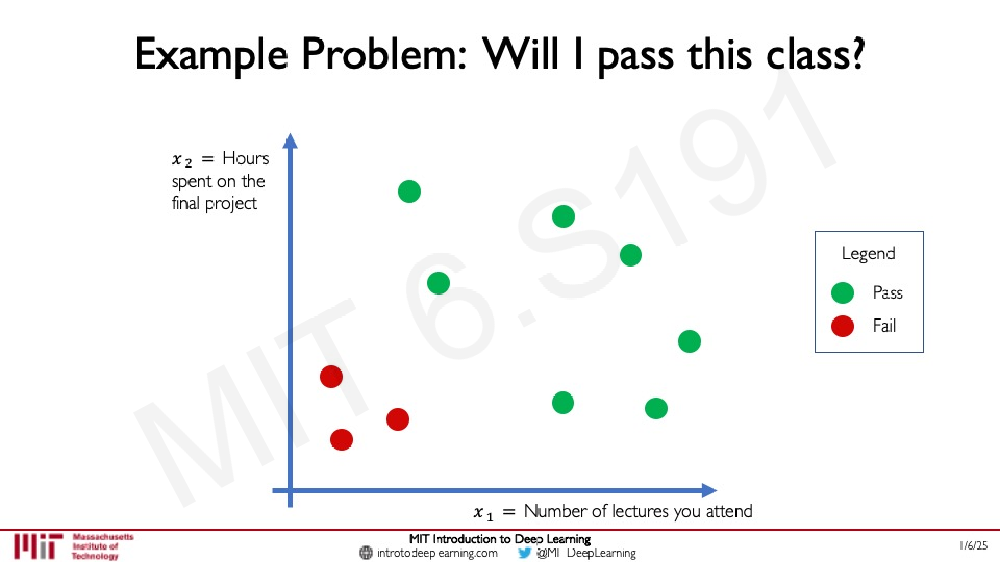
슬라이드 제목(인식): Example Problem: Will I pass this class? x2=Hours spenton the final project Legend Pass Fail x=Number of lecturesyou attend
이 장에서 말하고 싶은 핵심: 통과/실패 데이터 시각화입니다.
녹음본 상세 반영: [37:31] 지금까지 배운 내용으로 충분합니다. 단계별로 가죠. 새로운 사람(여러분)의 입력 두 개는 강의 4회 출석, 최종 프로젝트 5시간입니다. 이 두 숫자를 모델 왼쪽 입력으로 넣습니다. 모델은 단일 은닉층 신경망, 즉 아주 기본 구조로 시작합니다. 은닉층에는 은닉 유닛 3개, 출력은 하나(통과 예/아니오 이진 출력)입니다. 그런데 이 모델은 답을 크게 틀렸습니다. 통과 확률을 0.1(10%)로 예측했지만, 실제로는 아주 잘해서 확실히 통과했습니다. 왜 이 네트워크가 이렇게 심하게 실패했을까요? [38:31] 네, 맞습니다. 답은 “학습되지 않았기 때문”이고, 정확합니다. 이 모델은 이전 슬라이드에서 보여준 데이터를 아직 보지 못했습니다. 현실 세계 지식이 없는 아기처럼, 이 문제에 대해 아무것도 모릅니다. 먼저 이 문제를 학습해야 하고, 그게 우리가 아직 다루지 않은 부분입니다. 모델을 학습시키려면, 모델이 잘못 예측했을 때 그 사실을 알아야 합니다. “나쁜 예측”이란 무엇일까요? 예측이 얼마나 나쁜지, 혹은 좋은지를 정량화할 수 있어야 합니다. 이것이 신경망의 손실(loss)입니다. 손실은 모델 예측과 정답(ground truth) 사이의 거리를 측정합니다. 손실이 작...
초보자용 자세한 해설: 손실함수는 모델의 채점표입니다. 분류와 회귀에서 채점표가 다르며, 이 선택이 학습 방향을 결정합니다. 이 슬라이드에서는 특히 통과/실패 데이터 시각화입니다.
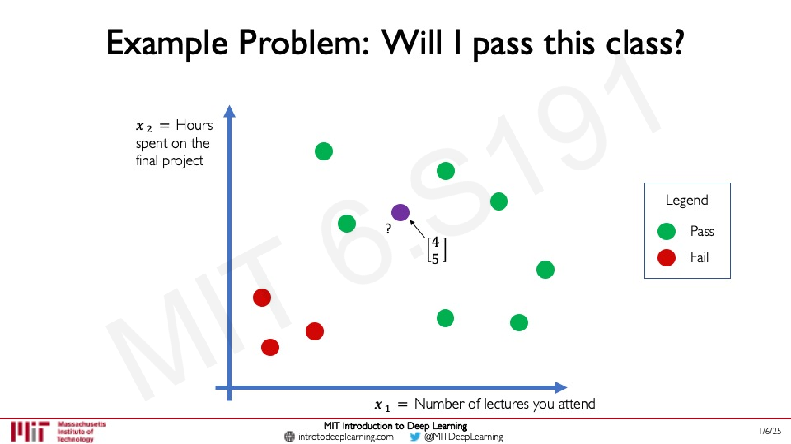
슬라이드 제목(인식): Example Problem: Will I pass this class? x2=Hours spenton the final project Legend Pass 4 5 Fail x=Number of lecturesyou attend
이 장에서 말하고 싶은 핵심: 새 샘플 좌표 배치입니다.
녹음본 상세 반영: [37:31] 지금까지 배운 내용으로 충분합니다. 단계별로 가죠. 새로운 사람(여러분)의 입력 두 개는 강의 4회 출석, 최종 프로젝트 5시간입니다. 이 두 숫자를 모델 왼쪽 입력으로 넣습니다. 모델은 단일 은닉층 신경망, 즉 아주 기본 구조로 시작합니다. 은닉층에는 은닉 유닛 3개, 출력은 하나(통과 예/아니오 이진 출력)입니다. 그런데 이 모델은 답을 크게 틀렸습니다. 통과 확률을 0.1(10%)로 예측했지만, 실제로는 아주 잘해서 확실히 통과했습니다. 왜 이 네트워크가 이렇게 심하게 실패했을까요? [38:31] 네, 맞습니다. 답은 “학습되지 않았기 때문”이고, 정확합니다. 이 모델은 이전 슬라이드에서 보여준 데이터를 아직 보지 못했습니다. 현실 세계 지식이 없는 아기처럼, 이 문제에 대해 아무것도 모릅니다. 먼저 이 문제를 학습해야 하고, 그게 우리가 아직 다루지 않은 부분입니다. 모델을 학습시키려면, 모델이 잘못 예측했을 때 그 사실을 알아야 합니다. “나쁜 예측”이란 무엇일까요? 예측이 얼마나 나쁜지, 혹은 좋은지를 정량화할 수 있어야 합니다. 이것이 신경망의 손실(loss)입니다. 손실은 모델 예측과 정답(ground truth) 사이의 거리를 측정합니다. 손실이 작...
초보자용 자세한 해설: 손실함수는 모델의 채점표입니다. 분류와 회귀에서 채점표가 다르며, 이 선택이 학습 방향을 결정합니다. 이 슬라이드에서는 특히 새 샘플 좌표 배치입니다.
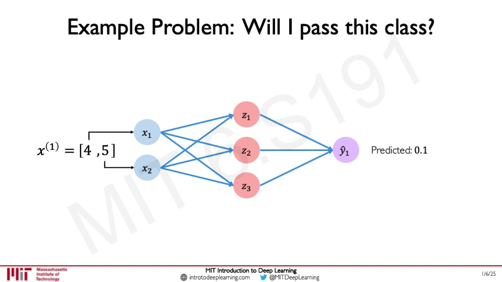
슬라이드 제목(인식): Example Problem: Will I p pass this class? Z1 x1 x(1) =[4,5] Z2 y1 Predicted:0.1 x2 Z3
이 장에서 말하고 싶은 핵심: 학습 전 틀린 예측 사례입니다.
녹음본 상세 반영: [38:31] 네, 맞습니다. 답은 “학습되지 않았기 때문”이고, 정확합니다. 이 모델은 이전 슬라이드에서 보여준 데이터를 아직 보지 못했습니다. 현실 세계 지식이 없는 아기처럼, 이 문제에 대해 아무것도 모릅니다. 먼저 이 문제를 학습해야 하고, 그게 우리가 아직 다루지 않은 부분입니다. 모델을 학습시키려면, 모델이 잘못 예측했을 때 그 사실을 알아야 합니다. “나쁜 예측”이란 무엇일까요? 예측이 얼마나 나쁜지, 혹은 좋은지를 정량화할 수 있어야 합니다. 이것이 신경망의 손실(loss)입니다. 손실은 모델 예측과 정답(ground truth) 사이의 거리를 측정합니다. 손실이 작... [39:25] 이제 데이터가 학생 한 명이 아니라, 많은 과거 학생 데이터라고 해봅시다. 그럼 우리는 한 학생이 아니라 전체 과거 수업 데이터에서 모델이 얼마나 잘하는지 봐야 합니다. 이게 단일 데이터 포인트가 아니라 전체 데이터셋으로 학습한다는 뜻입니다. 신경망 학습에서는 한 학생이 아니라 전체 경험적 데이터셋에서 손실을 최소화(또는 정확도를 최대화)하는 모델을 찾고자 합니다. 이를 empirical loss(경험적 손실)라고 하고, 데이터셋 각 포인트 손실의 평균입니다. 현재는 이진 분류(예/아니오) 문제를 보고 있으므로 softmax cross entropy loss를 사용할...
초보자용 자세한 해설: 손실함수는 모델의 채점표입니다. 분류와 회귀에서 채점표가 다르며, 이 선택이 학습 방향을 결정합니다. 이 슬라이드에서는 특히 학습 전 틀린 예측 사례입니다.
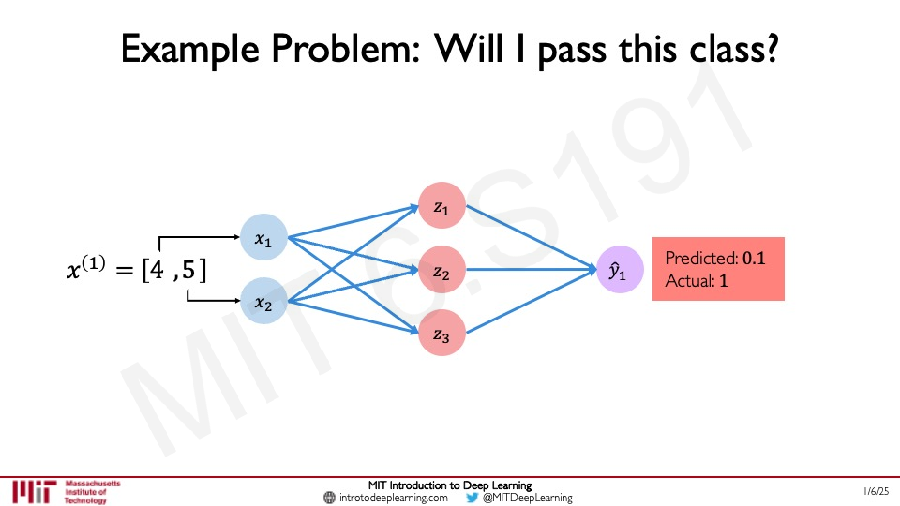
슬라이드 제목(인식): Example Problem: Will I p pass this class? Z1 x1 x(1) =[4,5] Predicted:0.1 y1 Z2 Actual:1 x2 Z3
이 장에서 말하고 싶은 핵심: 예측-정답 비교입니다.
녹음본 상세 반영: [39:25] 이제 데이터가 학생 한 명이 아니라, 많은 과거 학생 데이터라고 해봅시다. 그럼 우리는 한 학생이 아니라 전체 과거 수업 데이터에서 모델이 얼마나 잘하는지 봐야 합니다. 이게 단일 데이터 포인트가 아니라 전체 데이터셋으로 학습한다는 뜻입니다. 신경망 학습에서는 한 학생이 아니라 전체 경험적 데이터셋에서 손실을 최소화(또는 정확도를 최대화)하는 모델을 찾고자 합니다. 이를 empirical loss(경험적 손실)라고 하고, 데이터셋 각 포인트 손실의 평균입니다. 현재는 이진 분류(예/아니오) 문제를 보고 있으므로 softmax cross entropy loss를 사용할... [40:21] 이제 이진 출력이 아니라 연속적인 실수값을 예측한다고 가정해 봅시다. 예를 들어 “통과/실패”가 아니라 “최종 성적 퍼센트”를 예측하고 싶다면요. 이 경우 이진 손실을 쓸 수 없으니 손실 함수를 바꿔야 합니다. 예를 들어 평균제곱오차(MSE) 손실을 쓸 수 있습니다. 예측 성적과 실제 성적의 차이를 빼고 제곱해서 거리로 쓰는 방식입니다. 대략적으로 여러분이 자주 보게 될 손실 유형은 범주형/이산 손실(이진 손실 등)과 연속형 손실(MSE 등)입니다. 물론 수업 전반에서 훨씬 더 다양한 손실 함수를 접하게 되겠지만, 이 두 가지는 범용성이 매우 큽니다.
초보자용 자세한 해설: 손실함수는 모델의 채점표입니다. 분류와 회귀에서 채점표가 다르며, 이 선택이 학습 방향을 결정합니다. 이 슬라이드에서는 특히 예측-정답 비교입니다.
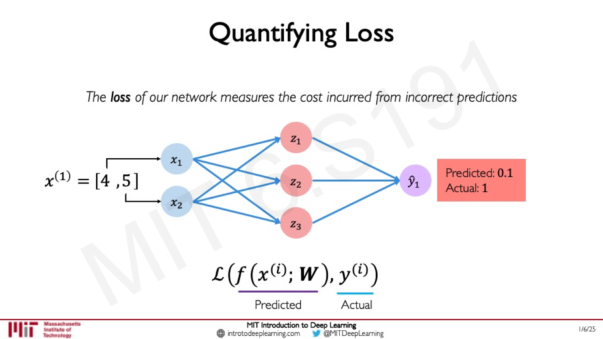
슬라이드 제목(인식): Quantifying LOsS Z1 x1 x(1) =[4,5] Predicted:0.1 y1 Z2 Actual:1 x2 Z3 L(f(x(i); W), y() Predicted Actual
이 장에서 말하고 싶은 핵심: 손실 개념 도입입니다.
녹음본 상세 반영: [39:25] 이제 데이터가 학생 한 명이 아니라, 많은 과거 학생 데이터라고 해봅시다. 그럼 우리는 한 학생이 아니라 전체 과거 수업 데이터에서 모델이 얼마나 잘하는지 봐야 합니다. 이게 단일 데이터 포인트가 아니라 전체 데이터셋으로 학습한다는 뜻입니다. 신경망 학습에서는 한 학생이 아니라 전체 경험적 데이터셋에서 손실을 최소화(또는 정확도를 최대화)하는 모델을 찾고자 합니다. 이를 empirical loss(경험적 손실)라고 하고, 데이터셋 각 포인트 손실의 평균입니다. 현재는 이진 분류(예/아니오) 문제를 보고 있으므로 softmax cross entropy loss를 사용할... [40:21] 이제 이진 출력이 아니라 연속적인 실수값을 예측한다고 가정해 봅시다. 예를 들어 “통과/실패”가 아니라 “최종 성적 퍼센트”를 예측하고 싶다면요. 이 경우 이진 손실을 쓸 수 없으니 손실 함수를 바꿔야 합니다. 예를 들어 평균제곱오차(MSE) 손실을 쓸 수 있습니다. 예측 성적과 실제 성적의 차이를 빼고 제곱해서 거리로 쓰는 방식입니다. 대략적으로 여러분이 자주 보게 될 손실 유형은 범주형/이산 손실(이진 손실 등)과 연속형 손실(MSE 등)입니다. 물론 수업 전반에서 훨씬 더 다양한 손실 함수를 접하게 되겠지만, 이 두 가지는 범용성이 매우 큽니다.
초보자용 자세한 해설: 손실함수는 모델의 채점표입니다. 분류와 회귀에서 채점표가 다르며, 이 선택이 학습 방향을 결정합니다. 이 슬라이드에서는 특히 손실 개념 도입입니다.
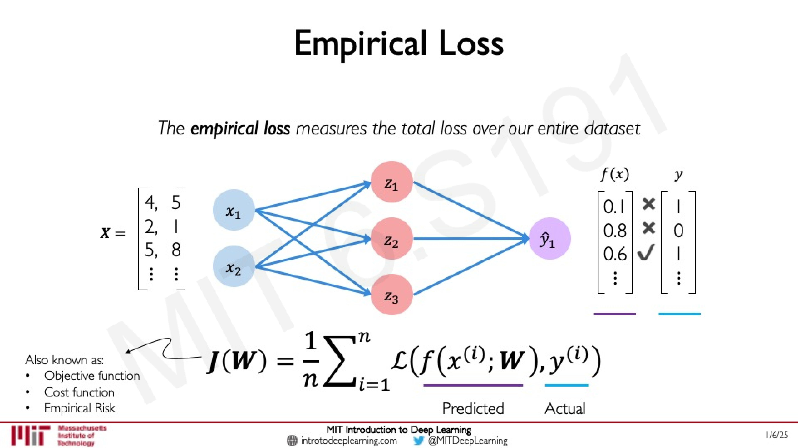
슬라이드 제목(인식): Empirical Loss Theempiricallossmeasuresthetotal lossoverourentiredataset f(x) Z1 4 5 0.1 x1 2 0.8 X= y1 Z2 5. 8 0.6 X2 Z3 1 门 L(f(x(); W),y()) Alsoknown as: Objective fun
이 장에서 말하고 싶은 핵심: 경험적 손실 개념입니다.
녹음본 상세 반영: [40:21] 이제 이진 출력이 아니라 연속적인 실수값을 예측한다고 가정해 봅시다. 예를 들어 “통과/실패”가 아니라 “최종 성적 퍼센트”를 예측하고 싶다면요. 이 경우 이진 손실을 쓸 수 없으니 손실 함수를 바꿔야 합니다. 예를 들어 평균제곱오차(MSE) 손실을 쓸 수 있습니다. 예측 성적과 실제 성적의 차이를 빼고 제곱해서 거리로 쓰는 방식입니다. 대략적으로 여러분이 자주 보게 될 손실 유형은 범주형/이산 손실(이진 손실 등)과 연속형 손실(MSE 등)입니다. 물론 수업 전반에서 훨씬 더 다양한 손실 함수를 접하게 되겠지만, 이 두 가지는 범용성이 매우 큽니다. [41:16] 이제 정보를 종합해서, 실제로 네트워크의 가중치를 찾는 문제를 이야기합시다. 지금까지는 네트워크 정의, 오답에 대한 페널티(손실)까지만 했고, 모델을 실제로 개선/학습시키는 법은 아직 말하지 않았습니다. 이제 그 부분을 보겠습니다. 궁극적인 목표는 데이터셋에서 손실을 최소화하는 네트워크(모델)를 찾는 것입니다. 손실은 예측과 정답의 차이를 측정하고, 우리는 그 손실을 최소화하는 네트워크를 찾고자 합니다.
초보자용 자세한 해설: 손실함수는 모델의 채점표입니다. 분류와 회귀에서 채점표가 다르며, 이 선택이 학습 방향을 결정합니다. 이 슬라이드에서는 특히 경험적 손실 개념입니다.
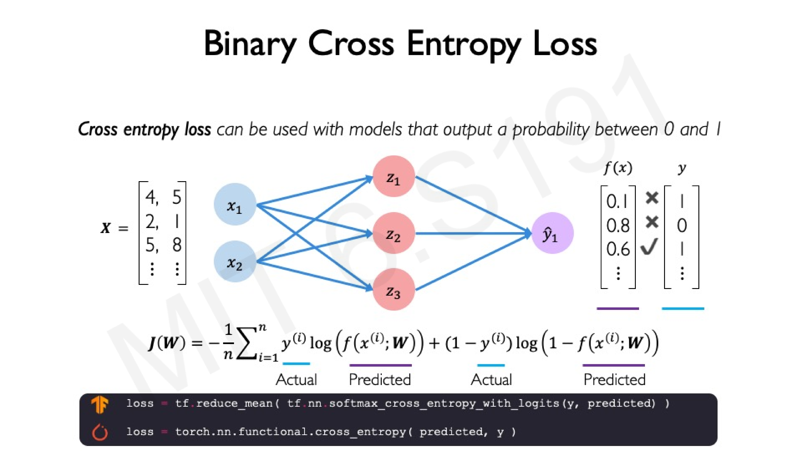
슬라이드 제목(인식): CrossEntropy Binary Loss CrossentropylosscanbeusedwithmodelsthatoutputaprobabilitybetweenOand1 f(x) Z1 4 0.1 x1 2 0.8 X= 1 Z2 8 0.6 x2 Z3 y(1og(f（x(0;w))+(1-y(0)1og(1-f（x
이 장에서 말하고 싶은 핵심: 교차엔트로피 소개입니다.
녹음본 상세 반영: [40:21] 이제 이진 출력이 아니라 연속적인 실수값을 예측한다고 가정해 봅시다. 예를 들어 “통과/실패”가 아니라 “최종 성적 퍼센트”를 예측하고 싶다면요. 이 경우 이진 손실을 쓸 수 없으니 손실 함수를 바꿔야 합니다. 예를 들어 평균제곱오차(MSE) 손실을 쓸 수 있습니다. 예측 성적과 실제 성적의 차이를 빼고 제곱해서 거리로 쓰는 방식입니다. 대략적으로 여러분이 자주 보게 될 손실 유형은 범주형/이산 손실(이진 손실 등)과 연속형 손실(MSE 등)입니다. 물론 수업 전반에서 훨씬 더 다양한 손실 함수를 접하게 되겠지만, 이 두 가지는 범용성이 매우 큽니다. [41:16] 이제 정보를 종합해서, 실제로 네트워크의 가중치를 찾는 문제를 이야기합시다. 지금까지는 네트워크 정의, 오답에 대한 페널티(손실)까지만 했고, 모델을 실제로 개선/학습시키는 법은 아직 말하지 않았습니다. 이제 그 부분을 보겠습니다. 궁극적인 목표는 데이터셋에서 손실을 최소화하는 네트워크(모델)를 찾는 것입니다. 손실은 예측과 정답의 차이를 측정하고, 우리는 그 손실을 최소화하는 네트워크를 찾고자 합니다.
초보자용 자세한 해설: 손실함수는 모델의 채점표입니다. 분류와 회귀에서 채점표가 다르며, 이 선택이 학습 방향을 결정합니다. 이 슬라이드에서는 특히 교차엔트로피 소개입니다.
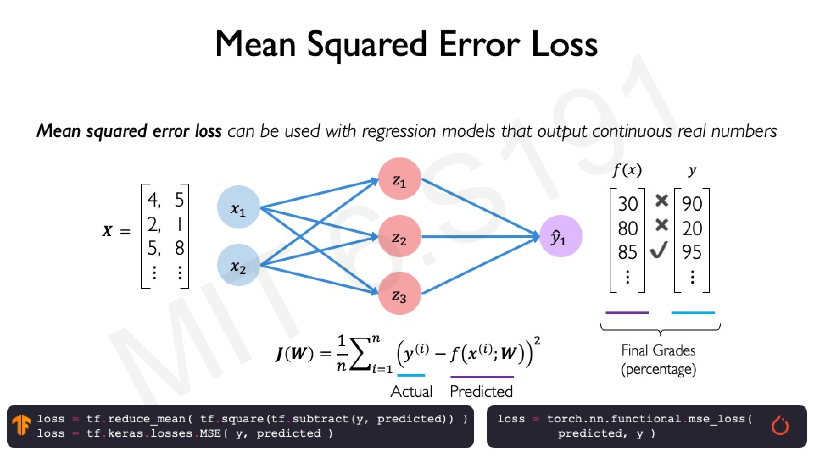
슬라이드 제목(인식): MeanSquaredErrorLoss Meansquarederrorlosscanbeusedwithregressionmodelsthatoutputcontinuousrealnumbers f(x) V Z1 4 30 90 x1 2 80 20 X= Z2 y1 5 8 85 95 X2 Z3 (y(1)-f(x(0);w
이 장에서 말하고 싶은 핵심: MSE 소개입니다.
녹음본 상세 반영: [41:16] 이제 정보를 종합해서, 실제로 네트워크의 가중치를 찾는 문제를 이야기합시다. 지금까지는 네트워크 정의, 오답에 대한 페널티(손실)까지만 했고, 모델을 실제로 개선/학습시키는 법은 아직 말하지 않았습니다. 이제 그 부분을 보겠습니다. 궁극적인 목표는 데이터셋에서 손실을 최소화하는 네트워크(모델)를 찾는 것입니다. 손실은 예측과 정답의 차이를 측정하고, 우리는 그 손실을 최소화하는 네트워크를 찾고자 합니다. [42:03] 수식으로 보면, 데이터셋 1~N 전체에서 손실 L을 최소화하게 만드는 W(가중치들)를 찾는다는 뜻입니다. 여기서 W는 모델 전체의 모든 레이어 가중치를 모아놓은 집합입니다. 즉 네트워크 전 레이어의 가중치를 한데 묶어, 그것을 최적화 대상으로 삼습니다. 그럼 이 최적화는 어떻게 하나요? 손실 함수는 가중치의 함수라는 점을 기억하세요. 가중치를 주면 손실 함수는 단일 값을 반환합니다. 예측과 정답이 얼마나 다른지 나타내는 값이죠. 만약 네트워크에 가중치가 2개뿐이라면, 이런 손실 지형(loss landscape)을 그릴 수 있습니다.
초보자용 자세한 해설: 손실함수는 모델의 채점표입니다. 분류와 회귀에서 채점표가 다르며, 이 선택이 학습 방향을 결정합니다. 이 슬라이드에서는 특히 MSE 소개입니다.
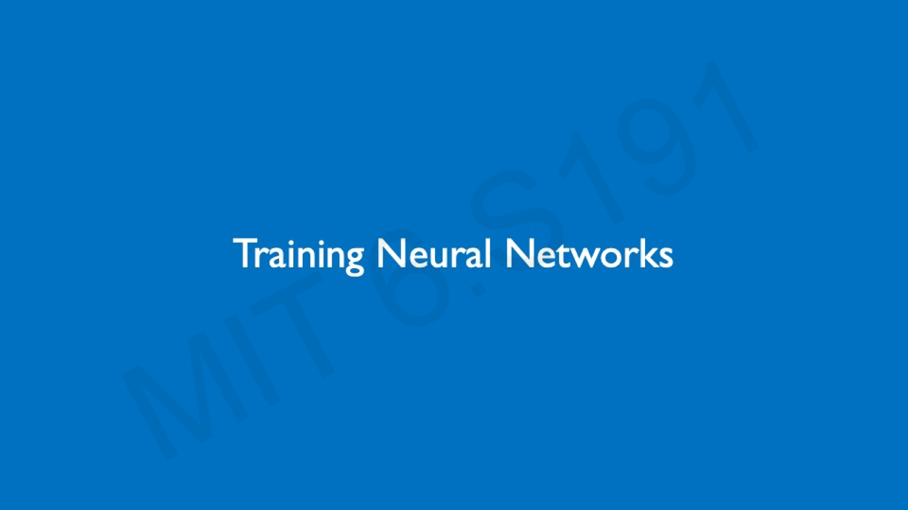
슬라이드 제목(인식): Training gNeural Networks
이 장에서 말하고 싶은 핵심: 학습 섹션 시작입니다.
녹음본 상세 반영: [42:03] 수식으로 보면, 데이터셋 1~N 전체에서 손실 L을 최소화하게 만드는 W(가중치들)를 찾는다는 뜻입니다. 여기서 W는 모델 전체의 모든 레이어 가중치를 모아놓은 집합입니다. 즉 네트워크 전 레이어의 가중치를 한데 묶어, 그것을 최적화 대상으로 삼습니다. 그럼 이 최적화는 어떻게 하나요? 손실 함수는 가중치의 함수라는 점을 기억하세요. 가중치를 주면 손실 함수는 단일 값을 반환합니다. 예측과 정답이 얼마나 다른지 나타내는 값이죠. 만약 네트워크에 가중치가 2개뿐이라면, 이런 손실 지형(loss landscape)을 그릴 수 있습니다. [43:02] 가중치1, 가중치2 축의 격자 위에서 각 가중치 조합이 얼마나 오차/손실을 내는지 볼 수 있습니다. 우리가 원하는 것은 이 지형의 가장 낮은 지점, 즉 최소 손실을 주는 가중치 조합입니다. 어떻게 찾을까요? 먼저 임의의 점(랜덤한 시작점)에서 출발합니다. 그 지점에서 gradient(기울기)를 계산하면, “어느 방향이 위인지”를 알려줍니다. 이는 국소 정보라서 현재 서 있는 위치 주변에서만 방향을 알려줍니다. 그리고 그 반대 방향으로 작은 한 걸음을 내딛습니다. 즉 손실이 내려가는 방향으로 조금 이동합니다.
초보자용 자세한 해설: 학습은 “기울기 계산 → 반대 방향 이동” 반복입니다. 원리는 단순하지만 반복 횟수가 크기 때문에 코드 자동화가 핵심입니다. 이 슬라이드에서는 특히 학습 섹션 시작입니다.
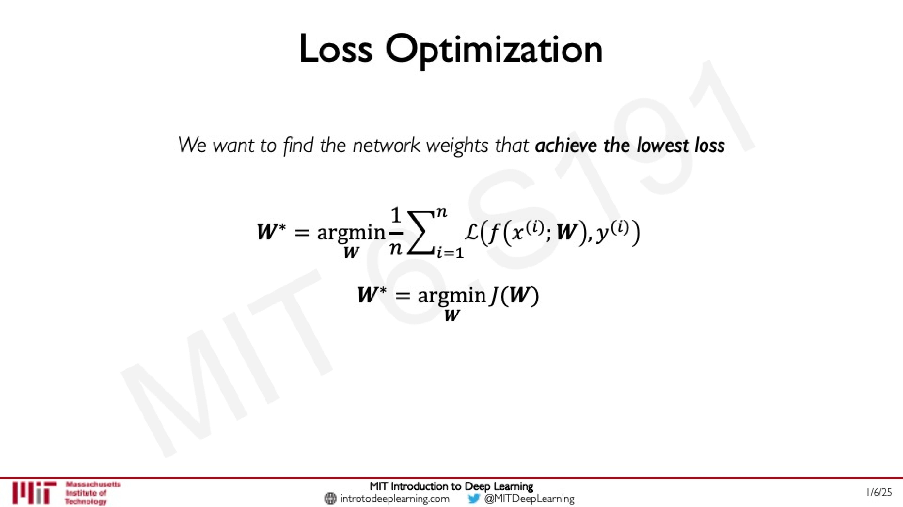
슬라이드 제목(인식): LossOptimization Wewanttofindthenetworkweightsthatachievethelowestloss 1 W*= argmin- L(f(x(i);W),y() W n i=1 W*=argminJ(w) M Vawsichusatis MITIntroduction toDeepLearming
이 장에서 말하고 싶은 핵심: 최적화 목표식 제시입니다.
녹음본 상세 반영: [42:03] 수식으로 보면, 데이터셋 1~N 전체에서 손실 L을 최소화하게 만드는 W(가중치들)를 찾는다는 뜻입니다. 여기서 W는 모델 전체의 모든 레이어 가중치를 모아놓은 집합입니다. 즉 네트워크 전 레이어의 가중치를 한데 묶어, 그것을 최적화 대상으로 삼습니다. 그럼 이 최적화는 어떻게 하나요? 손실 함수는 가중치의 함수라는 점을 기억하세요. 가중치를 주면 손실 함수는 단일 값을 반환합니다. 예측과 정답이 얼마나 다른지 나타내는 값이죠. 만약 네트워크에 가중치가 2개뿐이라면, 이런 손실 지형(loss landscape)을 그릴 수 있습니다. [43:02] 가중치1, 가중치2 축의 격자 위에서 각 가중치 조합이 얼마나 오차/손실을 내는지 볼 수 있습니다. 우리가 원하는 것은 이 지형의 가장 낮은 지점, 즉 최소 손실을 주는 가중치 조합입니다. 어떻게 찾을까요? 먼저 임의의 점(랜덤한 시작점)에서 출발합니다. 그 지점에서 gradient(기울기)를 계산하면, “어느 방향이 위인지”를 알려줍니다. 이는 국소 정보라서 현재 서 있는 위치 주변에서만 방향을 알려줍니다. 그리고 그 반대 방향으로 작은 한 걸음을 내딛습니다. 즉 손실이 내려가는 방향으로 조금 이동합니다.
초보자용 자세한 해설: 학습은 “기울기 계산 → 반대 방향 이동” 반복입니다. 원리는 단순하지만 반복 횟수가 크기 때문에 코드 자동화가 핵심입니다. 이 슬라이드에서는 특히 최적화 목표식 제시입니다.
슬라이드 제목(인식): Loss Optimization Wewanttofindthenetworkweightsthatachievethelowestloss 1 W*= argmin- L(f(x(i);W),y() W n i=1 W* = argmin J(w) M Remember: W = {w(0),w(1),...} Vawsichusat
이 장에서 말하고 싶은 핵심: W 집합 의미 확인입니다.
녹음본 상세 반영: [42:03] 수식으로 보면, 데이터셋 1~N 전체에서 손실 L을 최소화하게 만드는 W(가중치들)를 찾는다는 뜻입니다. 여기서 W는 모델 전체의 모든 레이어 가중치를 모아놓은 집합입니다. 즉 네트워크 전 레이어의 가중치를 한데 묶어, 그것을 최적화 대상으로 삼습니다. 그럼 이 최적화는 어떻게 하나요? 손실 함수는 가중치의 함수라는 점을 기억하세요. 가중치를 주면 손실 함수는 단일 값을 반환합니다. 예측과 정답이 얼마나 다른지 나타내는 값이죠. 만약 네트워크에 가중치가 2개뿐이라면, 이런 손실 지형(loss landscape)을 그릴 수 있습니다. [43:02] 가중치1, 가중치2 축의 격자 위에서 각 가중치 조합이 얼마나 오차/손실을 내는지 볼 수 있습니다. 우리가 원하는 것은 이 지형의 가장 낮은 지점, 즉 최소 손실을 주는 가중치 조합입니다. 어떻게 찾을까요? 먼저 임의의 점(랜덤한 시작점)에서 출발합니다. 그 지점에서 gradient(기울기)를 계산하면, “어느 방향이 위인지”를 알려줍니다. 이는 국소 정보라서 현재 서 있는 위치 주변에서만 방향을 알려줍니다. 그리고 그 반대 방향으로 작은 한 걸음을 내딛습니다. 즉 손실이 내려가는 방향으로 조금 이동합니다.
초보자용 자세한 해설: 학습은 “기울기 계산 → 반대 방향 이동” 반복입니다. 원리는 단순하지만 반복 횟수가 크기 때문에 코드 자동화가 핵심입니다. 이 슬라이드에서는 특히 W 집합 의미 확인입니다.
슬라이드 제목(인식): Loss Optimization W*= argminJ(W) Remember: W Ourlossisafunctionof thenetworkweights! J(wo,w1) 0.9 0.8 0.7 0.6 0.6 0.5 W1 0.4 0.8 Wo 20 0.1
이 장에서 말하고 싶은 핵심: 손실 지형 관점 도입입니다.
녹음본 상세 반영: [43:02] 가중치1, 가중치2 축의 격자 위에서 각 가중치 조합이 얼마나 오차/손실을 내는지 볼 수 있습니다. 우리가 원하는 것은 이 지형의 가장 낮은 지점, 즉 최소 손실을 주는 가중치 조합입니다. 어떻게 찾을까요? 먼저 임의의 점(랜덤한 시작점)에서 출발합니다. 그 지점에서 gradient(기울기)를 계산하면, “어느 방향이 위인지”를 알려줍니다. 이는 국소 정보라서 현재 서 있는 위치 주변에서만 방향을 알려줍니다. 그리고 그 반대 방향으로 작은 한 걸음을 내딛습니다. 즉 손실이 내려가는 방향으로 조금 이동합니다. [43:57] 그리고 이 과정을 반복해서 결국 산의 바닥, 즉 local minimum에 수렴합니다. “단지 생각만으로 무엇이든 만들 수 있다고 상상해 보세요. Base44를 만나보세요. 아이디어와 실행 의지가 있는 누구에게나 맞춰진 완전한 AI 제작 플랫폼입니다.” 이 알고리즘 절차는 의사코드로 gradient descent(경사하강법)로 요약할 수 있습니다. 아주 짧게 다시 보면, 먼저 가중치를 무작위 초기화합니다. 즉 손실 지형에서 랜덤 위치를 고릅니다. 그다음 gradient를 계산합니다. 여기서는 dJ/dW라고 씁니다. 이는 “가중치를 조금 바꿨을 때 손실이 얼마나 변하는...
초보자용 자세한 해설: 학습은 “기울기 계산 → 반대 방향 이동” 반복입니다. 원리는 단순하지만 반복 횟수가 크기 때문에 코드 자동화가 핵심입니다. 이 슬라이드에서는 특히 손실 지형 관점 도입입니다.
슬라이드 제목(인식): Loss Optimization Randomly pick an initial (wo,w1) J(wo,w1) 0.9 0.8 0.7 0.6 0.6 0.5 W1 0.4 EO 0.8 Wo 20 0.1
이 장에서 말하고 싶은 핵심: 랜덤 초기화 단계입니다.
녹음본 상세 반영: [43:02] 가중치1, 가중치2 축의 격자 위에서 각 가중치 조합이 얼마나 오차/손실을 내는지 볼 수 있습니다. 우리가 원하는 것은 이 지형의 가장 낮은 지점, 즉 최소 손실을 주는 가중치 조합입니다. 어떻게 찾을까요? 먼저 임의의 점(랜덤한 시작점)에서 출발합니다. 그 지점에서 gradient(기울기)를 계산하면, “어느 방향이 위인지”를 알려줍니다. 이는 국소 정보라서 현재 서 있는 위치 주변에서만 방향을 알려줍니다. 그리고 그 반대 방향으로 작은 한 걸음을 내딛습니다. 즉 손실이 내려가는 방향으로 조금 이동합니다. [43:57] 그리고 이 과정을 반복해서 결국 산의 바닥, 즉 local minimum에 수렴합니다. “단지 생각만으로 무엇이든 만들 수 있다고 상상해 보세요. Base44를 만나보세요. 아이디어와 실행 의지가 있는 누구에게나 맞춰진 완전한 AI 제작 플랫폼입니다.” 이 알고리즘 절차는 의사코드로 gradient descent(경사하강법)로 요약할 수 있습니다. 아주 짧게 다시 보면, 먼저 가중치를 무작위 초기화합니다. 즉 손실 지형에서 랜덤 위치를 고릅니다. 그다음 gradient를 계산합니다. 여기서는 dJ/dW라고 씁니다. 이는 “가중치를 조금 바꿨을 때 손실이 얼마나 변하는...
초보자용 자세한 해설: 학습은 “기울기 계산 → 반대 방향 이동” 반복입니다. 원리는 단순하지만 반복 횟수가 크기 때문에 코드 자동화가 핵심입니다. 이 슬라이드에서는 특히 랜덤 초기화 단계입니다.
슬라이드 제목(인식): Loss Optimization (M)fe Compute gradient, Me J(wo,w1) 0.9 0.8 0.7 0.6 0.6 0.5 W1 0.4 E'O 0.8 Wo 20 0.1
이 장에서 말하고 싶은 핵심: 기울기 계산 단계입니다.
녹음본 상세 반영: [43:57] 그리고 이 과정을 반복해서 결국 산의 바닥, 즉 local minimum에 수렴합니다. “단지 생각만으로 무엇이든 만들 수 있다고 상상해 보세요. Base44를 만나보세요. 아이디어와 실행 의지가 있는 누구에게나 맞춰진 완전한 AI 제작 플랫폼입니다.” 이 알고리즘 절차는 의사코드로 gradient descent(경사하강법)로 요약할 수 있습니다. 아주 짧게 다시 보면, 먼저 가중치를 무작위 초기화합니다. 즉 손실 지형에서 랜덤 위치를 고릅니다. 그다음 gradient를 계산합니다. 여기서는 dJ/dW라고 씁니다. 이는 “가중치를 조금 바꿨을 때 손실이 얼마나 변하는... [44:51] 즉 손실을 증가시키려면 가중치를 어느 방향으로 바꿔야 하는지 알려줍니다. 우리는 그 반대 방향으로 작은 스텝을 이동합니다. 여기서 gradient에 -1을 곱해 반대 방향으로 가고, eta라는 작은 스텝 크기를 곱해 실제 이동량을 정합니다. 그리고 이 과정을 루프에서 계속 반복합니다. TensorFlow 코드에서도 똑같이 표현되는데, 여기서 주목할 건 방향 항입니다. gradient가 올라가는 방향(혹은 부호 반전 시 내려가는 방향)을 알려주지만, 제가 아직 말하지 않은 게 있습니다. 바로 이 gradient를 어떻게 계산하느냐입니다.
초보자용 자세한 해설: 학습은 “기울기 계산 → 반대 방향 이동” 반복입니다. 원리는 단순하지만 반복 횟수가 크기 때문에 코드 자동화가 핵심입니다. 이 슬라이드에서는 특히 기울기 계산 단계입니다.
슬라이드 제목(인식): Loss Optimization Take small step in opposite direction of gradient J(wo,w1) 0.9 0.8 0.7 0.6 0.6 0.5 W1 0.4 E'O 0.8 Wo 20 0.1
이 장에서 말하고 싶은 핵심: 반대 방향 이동 단계입니다.
녹음본 상세 반영: [43:57] 그리고 이 과정을 반복해서 결국 산의 바닥, 즉 local minimum에 수렴합니다. “단지 생각만으로 무엇이든 만들 수 있다고 상상해 보세요. Base44를 만나보세요. 아이디어와 실행 의지가 있는 누구에게나 맞춰진 완전한 AI 제작 플랫폼입니다.” 이 알고리즘 절차는 의사코드로 gradient descent(경사하강법)로 요약할 수 있습니다. 아주 짧게 다시 보면, 먼저 가중치를 무작위 초기화합니다. 즉 손실 지형에서 랜덤 위치를 고릅니다. 그다음 gradient를 계산합니다. 여기서는 dJ/dW라고 씁니다. 이는 “가중치를 조금 바꿨을 때 손실이 얼마나 변하는... [44:51] 즉 손실을 증가시키려면 가중치를 어느 방향으로 바꿔야 하는지 알려줍니다. 우리는 그 반대 방향으로 작은 스텝을 이동합니다. 여기서 gradient에 -1을 곱해 반대 방향으로 가고, eta라는 작은 스텝 크기를 곱해 실제 이동량을 정합니다. 그리고 이 과정을 루프에서 계속 반복합니다. TensorFlow 코드에서도 똑같이 표현되는데, 여기서 주목할 건 방향 항입니다. gradient가 올라가는 방향(혹은 부호 반전 시 내려가는 방향)을 알려주지만, 제가 아직 말하지 않은 게 있습니다. 바로 이 gradient를 어떻게 계산하느냐입니다.
초보자용 자세한 해설: 학습은 “기울기 계산 → 반대 방향 이동” 반복입니다. 원리는 단순하지만 반복 횟수가 크기 때문에 코드 자동화가 핵심입니다. 이 슬라이드에서는 특히 반대 방향 이동 단계입니다.
슬라이드 제목(인식): Gradient Descent Repeatuntil convergence J(wo,w1) 0.9 0.8 0.7 0.6 0.6 0.5 W1 0.4 E'O 0.8 Wo 20 0.1
이 장에서 말하고 싶은 핵심: 반복 수렴 단계입니다.
녹음본 상세 반영: [44:51] 즉 손실을 증가시키려면 가중치를 어느 방향으로 바꿔야 하는지 알려줍니다. 우리는 그 반대 방향으로 작은 스텝을 이동합니다. 여기서 gradient에 -1을 곱해 반대 방향으로 가고, eta라는 작은 스텝 크기를 곱해 실제 이동량을 정합니다. 그리고 이 과정을 루프에서 계속 반복합니다. TensorFlow 코드에서도 똑같이 표현되는데, 여기서 주목할 건 방향 항입니다. gradient가 올라가는 방향(혹은 부호 반전 시 내려가는 방향)을 알려주지만, 제가 아직 말하지 않은 게 있습니다. 바로 이 gradient를 어떻게 계산하느냐입니다. [45:46] 신경망에서 gradient를 계산하는 과정은 back propagation(역전파)이라고 합니다. 이제 역전파가 어떻게 동작하는지, 특정 네트워크의 gradient를 어떻게 구하는지 간단한 단계 예제로 보겠습니다. 시연을 위해 가장 단순한 네트워크를 쓰겠습니다. 입력 1개, 출력 1개, 가운데 은닉 뉴런 1개입니다. 이보다 단순할 수는 없습니다. 우리가 구하려는 것은 마지막 손실 L(여기서는 J)을 W2에 대해 미분한 값입니다. 즉 W2를 아주 조금 바꾸면 손실이 얼마나 변하느냐를 구하는 것입니다. 이 미분식을 쓰고, 연쇄법칙(chain rule)으로 분해할 수 있습...
초보자용 자세한 해설: 학습은 “기울기 계산 → 반대 방향 이동” 반복입니다. 원리는 단순하지만 반복 횟수가 크기 때문에 코드 자동화가 핵심입니다. 이 슬라이드에서는 특히 반복 수렴 단계입니다.
슬라이드 제목(인식): Gradient Descent Algorithm 1. Initialize weights randomly ~N (0, o2) 2.Loop until convergence: J(w) 3. Computegradient, Me (m)fe 4. Update weights, W ← W -n aw 5.Returnwe
이 장에서 말하고 싶은 핵심: 의사코드 정리입니다.
녹음본 상세 반영: [44:51] 즉 손실을 증가시키려면 가중치를 어느 방향으로 바꿔야 하는지 알려줍니다. 우리는 그 반대 방향으로 작은 스텝을 이동합니다. 여기서 gradient에 -1을 곱해 반대 방향으로 가고, eta라는 작은 스텝 크기를 곱해 실제 이동량을 정합니다. 그리고 이 과정을 루프에서 계속 반복합니다. TensorFlow 코드에서도 똑같이 표현되는데, 여기서 주목할 건 방향 항입니다. gradient가 올라가는 방향(혹은 부호 반전 시 내려가는 방향)을 알려주지만, 제가 아직 말하지 않은 게 있습니다. 바로 이 gradient를 어떻게 계산하느냐입니다. [45:46] 신경망에서 gradient를 계산하는 과정은 back propagation(역전파)이라고 합니다. 이제 역전파가 어떻게 동작하는지, 특정 네트워크의 gradient를 어떻게 구하는지 간단한 단계 예제로 보겠습니다. 시연을 위해 가장 단순한 네트워크를 쓰겠습니다. 입력 1개, 출력 1개, 가운데 은닉 뉴런 1개입니다. 이보다 단순할 수는 없습니다. 우리가 구하려는 것은 마지막 손실 L(여기서는 J)을 W2에 대해 미분한 값입니다. 즉 W2를 아주 조금 바꾸면 손실이 얼마나 변하느냐를 구하는 것입니다. 이 미분식을 쓰고, 연쇄법칙(chain rule)으로 분해할 수 있습...
초보자용 자세한 해설: 학습은 “기울기 계산 → 반대 방향 이동” 반복입니다. 원리는 단순하지만 반복 횟수가 크기 때문에 코드 자동화가 핵심입니다. 이 슬라이드에서는 특히 의사코드 정리입니다.
슬라이드 제목(인식): Gradient Descent import tensorflow as tf Algorithm Initialize weights randomly ~N(0, o²) weights =tf.Variable（[tf.random.normal()]) 2.Loop until convergence: while True:
이 장에서 말하고 싶은 핵심: TensorFlow 구현 예시입니다.
녹음본 상세 반영: [45:46] 신경망에서 gradient를 계산하는 과정은 back propagation(역전파)이라고 합니다. 이제 역전파가 어떻게 동작하는지, 특정 네트워크의 gradient를 어떻게 구하는지 간단한 단계 예제로 보겠습니다. 시연을 위해 가장 단순한 네트워크를 쓰겠습니다. 입력 1개, 출력 1개, 가운데 은닉 뉴런 1개입니다. 이보다 단순할 수는 없습니다. 우리가 구하려는 것은 마지막 손실 L(여기서는 J)을 W2에 대해 미분한 값입니다. 즉 W2를 아주 조금 바꾸면 손실이 얼마나 변하느냐를 구하는 것입니다. 이 미분식을 쓰고, 연쇄법칙(chain rule)으로 분해할 수 있습... [46:45] 왜 분해하느냐고요? 먼저 dJ/dW2를 dJ/dY와 dY/dW2 두 항으로 분해하는 건 연쇄법칙의 기본 확장일 뿐이고, 특별한 마법이 아닙니다. 이게 가능한 이유는 Y가 바로 이전 층에만 의존하기 때문입니다. 이제 W2 이전의 가중치, 예를 들어 W1의 gradient를 구하고 싶다면 어떻게 할까요? 식에서 W2를 W1으로 바꾸고, 다시 연쇄법칙을 적용해야 합니다. 마지막 항이 아직 잘 정의되지 않았기 때문에 한 번 더 전개해야 하기 때문입니다. 이래서 back propagation이라고 부릅니다. 출력에서 시작해 네트워크를 따라 뒤로, 뒤로 반복적으로 연쇄법칙을 적...
초보자용 자세한 해설: 학습은 “기울기 계산 → 반대 방향 이동” 반복입니다. 원리는 단순하지만 반복 횟수가 크기 때문에 코드 자동화가 핵심입니다. 이 슬라이드에서는 특히 TensorFlow 구현 예시입니다.
슬라이드 제목(인식): Gradient tDescent import tensorflow as tf Algorithm Initialize weights randomly~N(0,o2) weights =tf.Variable（[tf.random.normal()]) 2.Loop until convergence: while True: #
이 장에서 말하고 싶은 핵심: 코드 반복과 역전파 연결입니다.
녹음본 상세 반영: [45:46] 신경망에서 gradient를 계산하는 과정은 back propagation(역전파)이라고 합니다. 이제 역전파가 어떻게 동작하는지, 특정 네트워크의 gradient를 어떻게 구하는지 간단한 단계 예제로 보겠습니다. 시연을 위해 가장 단순한 네트워크를 쓰겠습니다. 입력 1개, 출력 1개, 가운데 은닉 뉴런 1개입니다. 이보다 단순할 수는 없습니다. 우리가 구하려는 것은 마지막 손실 L(여기서는 J)을 W2에 대해 미분한 값입니다. 즉 W2를 아주 조금 바꾸면 손실이 얼마나 변하느냐를 구하는 것입니다. 이 미분식을 쓰고, 연쇄법칙(chain rule)으로 분해할 수 있습... [46:45] 왜 분해하느냐고요? 먼저 dJ/dW2를 dJ/dY와 dY/dW2 두 항으로 분해하는 건 연쇄법칙의 기본 확장일 뿐이고, 특별한 마법이 아닙니다. 이게 가능한 이유는 Y가 바로 이전 층에만 의존하기 때문입니다. 이제 W2 이전의 가중치, 예를 들어 W1의 gradient를 구하고 싶다면 어떻게 할까요? 식에서 W2를 W1으로 바꾸고, 다시 연쇄법칙을 적용해야 합니다. 마지막 항이 아직 잘 정의되지 않았기 때문에 한 번 더 전개해야 하기 때문입니다. 이래서 back propagation이라고 부릅니다. 출력에서 시작해 네트워크를 따라 뒤로, 뒤로 반복적으로 연쇄법칙을 적...
초보자용 자세한 해설: 학습은 “기울기 계산 → 반대 방향 이동” 반복입니다. 원리는 단순하지만 반복 횟수가 크기 때문에 코드 자동화가 핵심입니다. 이 슬라이드에서는 특히 코드 반복과 역전파 연결입니다.
슬라이드 제목(인식): Computing g Gradients:Backpropagation W2 W1 Z1 J(W) x How does a small change in one weight(ex.w2)affect the final lossJ(W)?
이 장에서 말하고 싶은 핵심: 역전파 질문 설정입니다.
녹음본 상세 반영: [45:46] 신경망에서 gradient를 계산하는 과정은 back propagation(역전파)이라고 합니다. 이제 역전파가 어떻게 동작하는지, 특정 네트워크의 gradient를 어떻게 구하는지 간단한 단계 예제로 보겠습니다. 시연을 위해 가장 단순한 네트워크를 쓰겠습니다. 입력 1개, 출력 1개, 가운데 은닉 뉴런 1개입니다. 이보다 단순할 수는 없습니다. 우리가 구하려는 것은 마지막 손실 L(여기서는 J)을 W2에 대해 미분한 값입니다. 즉 W2를 아주 조금 바꾸면 손실이 얼마나 변하느냐를 구하는 것입니다. 이 미분식을 쓰고, 연쇄법칙(chain rule)으로 분해할 수 있습... [46:45] 왜 분해하느냐고요? 먼저 dJ/dW2를 dJ/dY와 dY/dW2 두 항으로 분해하는 건 연쇄법칙의 기본 확장일 뿐이고, 특별한 마법이 아닙니다. 이게 가능한 이유는 Y가 바로 이전 층에만 의존하기 때문입니다. 이제 W2 이전의 가중치, 예를 들어 W1의 gradient를 구하고 싶다면 어떻게 할까요? 식에서 W2를 W1으로 바꾸고, 다시 연쇄법칙을 적용해야 합니다. 마지막 항이 아직 잘 정의되지 않았기 때문에 한 번 더 전개해야 하기 때문입니다. 이래서 back propagation이라고 부릅니다. 출력에서 시작해 네트워크를 따라 뒤로, 뒤로 반복적으로 연쇄법칙을 적...
초보자용 자세한 해설: 역전파는 오차 책임을 가중치별로 분배하는 계산법입니다. chain rule 반복이 본질입니다. 이 슬라이드에서는 특히 역전파 질문 설정입니다.
슬라이드 제목(인식): Computing g Gradients: Backpropagation W2 M Z1 J(W) x (m)fe aw2 Let'suse thechainrule!
이 장에서 말하고 싶은 핵심: chain rule 도입입니다.
녹음본 상세 반영: [46:45] 왜 분해하느냐고요? 먼저 dJ/dW2를 dJ/dY와 dY/dW2 두 항으로 분해하는 건 연쇄법칙의 기본 확장일 뿐이고, 특별한 마법이 아닙니다. 이게 가능한 이유는 Y가 바로 이전 층에만 의존하기 때문입니다. 이제 W2 이전의 가중치, 예를 들어 W1의 gradient를 구하고 싶다면 어떻게 할까요? 식에서 W2를 W1으로 바꾸고, 다시 연쇄법칙을 적용해야 합니다. 마지막 항이 아직 잘 정의되지 않았기 때문에 한 번 더 전개해야 하기 때문입니다. 이래서 back propagation이라고 부릅니다. 출력에서 시작해 네트워크를 따라 뒤로, 뒤로 반복적으로 연쇄법칙을 적... [47:43] 이 역전파를 출력에서 입력 방향으로 모든 가중치에 대해 반복하면, 결국 네트워크의 모든 가중치마다 “이 가중치를 조금 키우면 손실이 올라가나 내려가나?”라는 방향 정보를 얻게 됩니다. 만약 손실이 내려간다면, 그 가중치를 조금 늘리는 쪽(혹은 반대 방향)으로 움직이면 됩니다. 이게 역전파 알고리즘입니다. 이론적으로는 미분적분의 연쇄법칙 적용에 불과하지만, 실제 구현에서는 매우 복잡하고 계산량이 큽니다. 왜냐하면 모델의 모든 가중치마다 이를 단계적으로 계산해야 하기 때문입니다. 그래서 실제로는 TensorFlow, PyTorch 같은 현대 딥러닝 프레임워크가 이를 자동...
초보자용 자세한 해설: 역전파는 오차 책임을 가중치별로 분배하는 계산법입니다. chain rule 반복이 본질입니다. 이 슬라이드에서는 특히 chain rule 도입입니다.
슬라이드 제목(인식): Computing g Gradients: Backpropagation W1 W2 Z1 J(W) x (m)fe (m)fe ay * dw2 ay dw2
이 장에서 말하고 싶은 핵심: 미분 분해 단계1입니다.
녹음본 상세 반영: [46:45] 왜 분해하느냐고요? 먼저 dJ/dW2를 dJ/dY와 dY/dW2 두 항으로 분해하는 건 연쇄법칙의 기본 확장일 뿐이고, 특별한 마법이 아닙니다. 이게 가능한 이유는 Y가 바로 이전 층에만 의존하기 때문입니다. 이제 W2 이전의 가중치, 예를 들어 W1의 gradient를 구하고 싶다면 어떻게 할까요? 식에서 W2를 W1으로 바꾸고, 다시 연쇄법칙을 적용해야 합니다. 마지막 항이 아직 잘 정의되지 않았기 때문에 한 번 더 전개해야 하기 때문입니다. 이래서 back propagation이라고 부릅니다. 출력에서 시작해 네트워크를 따라 뒤로, 뒤로 반복적으로 연쇄법칙을 적... [47:43] 이 역전파를 출력에서 입력 방향으로 모든 가중치에 대해 반복하면, 결국 네트워크의 모든 가중치마다 “이 가중치를 조금 키우면 손실이 올라가나 내려가나?”라는 방향 정보를 얻게 됩니다. 만약 손실이 내려간다면, 그 가중치를 조금 늘리는 쪽(혹은 반대 방향)으로 움직이면 됩니다. 이게 역전파 알고리즘입니다. 이론적으로는 미분적분의 연쇄법칙 적용에 불과하지만, 실제 구현에서는 매우 복잡하고 계산량이 큽니다. 왜냐하면 모델의 모든 가중치마다 이를 단계적으로 계산해야 하기 때문입니다. 그래서 실제로는 TensorFlow, PyTorch 같은 현대 딥러닝 프레임워크가 이를 자동...
초보자용 자세한 해설: 역전파는 오차 책임을 가중치별로 분배하는 계산법입니다. chain rule 반복이 본질입니다. 이 슬라이드에서는 특히 미분 분해 단계1입니다.
슬라이드 제목(인식): Computing g Gradients: Backpropagation W1 W2 Z1 J(W) x (m)fe (m)fe ay * aw ay dw1 Apply chain rule! Apply chain rule!
이 장에서 말하고 싶은 핵심: 미분 분해 단계2입니다.
녹음본 상세 반영: [47:43] 이 역전파를 출력에서 입력 방향으로 모든 가중치에 대해 반복하면, 결국 네트워크의 모든 가중치마다 “이 가중치를 조금 키우면 손실이 올라가나 내려가나?”라는 방향 정보를 얻게 됩니다. 만약 손실이 내려간다면, 그 가중치를 조금 늘리는 쪽(혹은 반대 방향)으로 움직이면 됩니다. 이게 역전파 알고리즘입니다. 이론적으로는 미분적분의 연쇄법칙 적용에 불과하지만, 실제 구현에서는 매우 복잡하고 계산량이 큽니다. 왜냐하면 모델의 모든 가중치마다 이를 단계적으로 계산해야 하기 때문입니다. 그래서 실제로는 TensorFlow, PyTorch 같은 현대 딥러닝 프레임워크가 이를 자동... [48:42] 다만 내부에서 무슨 일이 벌어지는지, 이론을 이해하는 건 중요합니다. 이 기회에 실제 신경망 학습의 실전적 함의도 이야기하겠습니다. 앞서 보여드린 손실 지형 그림은 매우 매끈했지만, 실제 신경망 최적화는 극도로 어렵습니다. 신경망은 매우 고차원 탐색 공간이라 실제 전모를 알 수 없고, 여기 그림은 2017년경 논문에서 나온 딥 신경망 손실 지형의 투영(projection)입니다. 실전 손실 지형은 이렇게 얼마나 복잡하고 거칠 수 있는지 볼 수 있습니다. 그래서 역전파와 최적화 기법 적용이 매우 도전적입니다.
초보자용 자세한 해설: 역전파는 오차 책임을 가중치별로 분배하는 계산법입니다. chain rule 반복이 본질입니다. 이 슬라이드에서는 특히 미분 분해 단계2입니다.
슬라이드 제목(인식): Computing g Gradients: Backpropagation W2 W Z1 J(W) x (m)fe (m)fe ay 0z1 * dw1 ay 0z1 aw
이 장에서 말하고 싶은 핵심: 중간변수 기반 전개입니다.
녹음본 상세 반영: [47:43] 이 역전파를 출력에서 입력 방향으로 모든 가중치에 대해 반복하면, 결국 네트워크의 모든 가중치마다 “이 가중치를 조금 키우면 손실이 올라가나 내려가나?”라는 방향 정보를 얻게 됩니다. 만약 손실이 내려간다면, 그 가중치를 조금 늘리는 쪽(혹은 반대 방향)으로 움직이면 됩니다. 이게 역전파 알고리즘입니다. 이론적으로는 미분적분의 연쇄법칙 적용에 불과하지만, 실제 구현에서는 매우 복잡하고 계산량이 큽니다. 왜냐하면 모델의 모든 가중치마다 이를 단계적으로 계산해야 하기 때문입니다. 그래서 실제로는 TensorFlow, PyTorch 같은 현대 딥러닝 프레임워크가 이를 자동... [48:42] 다만 내부에서 무슨 일이 벌어지는지, 이론을 이해하는 건 중요합니다. 이 기회에 실제 신경망 학습의 실전적 함의도 이야기하겠습니다. 앞서 보여드린 손실 지형 그림은 매우 매끈했지만, 실제 신경망 최적화는 극도로 어렵습니다. 신경망은 매우 고차원 탐색 공간이라 실제 전모를 알 수 없고, 여기 그림은 2017년경 논문에서 나온 딥 신경망 손실 지형의 투영(projection)입니다. 실전 손실 지형은 이렇게 얼마나 복잡하고 거칠 수 있는지 볼 수 있습니다. 그래서 역전파와 최적화 기법 적용이 매우 도전적입니다.
초보자용 자세한 해설: 역전파는 오차 책임을 가중치별로 분배하는 계산법입니다. chain rule 반복이 본질입니다. 이 슬라이드에서는 특히 중간변수 기반 전개입니다.
슬라이드 제목(인식): Computing Gradients: Backpropagation W W2 Z1 J(W) x (m)fe aJ(w) ay 0z1 * dw1 ay 0z1 dw1
이 장에서 말하고 싶은 핵심: 역전파 마무리입니다.
녹음본 상세 반영: [48:42] 다만 내부에서 무슨 일이 벌어지는지, 이론을 이해하는 건 중요합니다. 이 기회에 실제 신경망 학습의 실전적 함의도 이야기하겠습니다. 앞서 보여드린 손실 지형 그림은 매우 매끈했지만, 실제 신경망 최적화는 극도로 어렵습니다. 신경망은 매우 고차원 탐색 공간이라 실제 전모를 알 수 없고, 여기 그림은 2017년경 논문에서 나온 딥 신경망 손실 지형의 투영(projection)입니다. 실전 손실 지형은 이렇게 얼마나 복잡하고 거칠 수 있는지 볼 수 있습니다. 그래서 역전파와 최적화 기법 적용이 매우 도전적입니다. [49:40] 그리고 역전파를 이야기하기 전 봤던 이 식을 다시 떠올려 보세요. 가중치를 업데이트할 때는 원하는 방향의 반대로 작은 스텝을 이동한다고 했습니다. 여기서 제가 집중하고 싶은 핵심 항은 “작은 스텝”입니다. 이게 바로 모델의 learning rate(학습률)입니다. 즉 역전파로 계산한 기울기를 얼마나 빠르게 따라갈지를 결정합니다. 실전에서 학습률 설정은 매우 어렵습니다. 너무 작게 잡으면 출발은 하지만 지역 최소점에 갇혀 더 좋은 최소점으로 못 갈 수 있습니다. 너무 크게 잡으면 적절한 방향으로 가더라도 과하게 건너뛰어 불안정해지고 발산할 수 있습니다.
초보자용 자세한 해설: 역전파는 오차 책임을 가중치별로 분배하는 계산법입니다. chain rule 반복이 본질입니다. 이 슬라이드에서는 특히 역전파 마무리입니다.
슬라이드 제목(인식): Neural Networks in Practice: Optimization
이 장에서 말하고 싶은 핵심: 실전 최적화 파트 시작입니다.
녹음본 상세 반영: [48:42] 다만 내부에서 무슨 일이 벌어지는지, 이론을 이해하는 건 중요합니다. 이 기회에 실제 신경망 학습의 실전적 함의도 이야기하겠습니다. 앞서 보여드린 손실 지형 그림은 매우 매끈했지만, 실제 신경망 최적화는 극도로 어렵습니다. 신경망은 매우 고차원 탐색 공간이라 실제 전모를 알 수 없고, 여기 그림은 2017년경 논문에서 나온 딥 신경망 손실 지형의 투영(projection)입니다. 실전 손실 지형은 이렇게 얼마나 복잡하고 거칠 수 있는지 볼 수 있습니다. 그래서 역전파와 최적화 기법 적용이 매우 도전적입니다. [49:40] 그리고 역전파를 이야기하기 전 봤던 이 식을 다시 떠올려 보세요. 가중치를 업데이트할 때는 원하는 방향의 반대로 작은 스텝을 이동한다고 했습니다. 여기서 제가 집중하고 싶은 핵심 항은 “작은 스텝”입니다. 이게 바로 모델의 learning rate(학습률)입니다. 즉 역전파로 계산한 기울기를 얼마나 빠르게 따라갈지를 결정합니다. 실전에서 학습률 설정은 매우 어렵습니다. 너무 작게 잡으면 출발은 하지만 지역 최소점에 갇혀 더 좋은 최소점으로 못 갈 수 있습니다. 너무 크게 잡으면 적절한 방향으로 가더라도 과하게 건너뛰어 불안정해지고 발산할 수 있습니다.
초보자용 자세한 해설: 학습률과 optimizer 선택은 수렴 안정성에 직결됩니다. Adam은 시작점으로 좋지만, 여전히 데이터/배치와 함께 조정해야 합니다. 이 슬라이드에서는 특히 실전 최적화 파트 시작입니다.
슬라이드 제목(인식): Training g Neural Networks is Difficult "Visualizing thelosslandscape ofneuralnets".Dec2017.
이 장에서 말하고 싶은 핵심: 복잡한 손실 지형 사례입니다.
녹음본 상세 반영: [49:40] 그리고 역전파를 이야기하기 전 봤던 이 식을 다시 떠올려 보세요. 가중치를 업데이트할 때는 원하는 방향의 반대로 작은 스텝을 이동한다고 했습니다. 여기서 제가 집중하고 싶은 핵심 항은 “작은 스텝”입니다. 이게 바로 모델의 learning rate(학습률)입니다. 즉 역전파로 계산한 기울기를 얼마나 빠르게 따라갈지를 결정합니다. 실전에서 학습률 설정은 매우 어렵습니다. 너무 작게 잡으면 출발은 하지만 지역 최소점에 갇혀 더 좋은 최소점으로 못 갈 수 있습니다. 너무 크게 잡으면 적절한 방향으로 가더라도 과하게 건너뛰어 불안정해지고 발산할 수 있습니다. [50:36] 이상적인 학습률은 너무 작지 않아 일부 지역 최소점을 넘을 수 있으면서, 너무 크지 않아 발산하지 않고 수렴하는 값입니다. 그럼 학습률을 어떻게 정하죠? 아주 흔한 방법 하나는 여러 학습률을 직접 시도해 보고 가장 잘 되는 값을 택하는 것입니다. 그보다 더 나아가려면 어떻게 할까요? 탐색 공간에서의 최적화 상태에 따라 학습률을 조절하는 적응형 알고리즘을 설계할 수 있을까요? 즉, 손실 지형 자체의 함수로 학습률을 바꾸는 것입니다. 실무적으로는 gradient와 데이터에 따라 학습률이 늘거나 줄게 됩니다.
초보자용 자세한 해설: 학습률과 optimizer 선택은 수렴 안정성에 직결됩니다. Adam은 시작점으로 좋지만, 여전히 데이터/배치와 함께 조정해야 합니다. 이 슬라이드에서는 특히 복잡한 손실 지형 사례입니다.
슬라이드 제목(인식): Loss Functions Can Be Difficult to Optimize Remember: Optimizationthroughgradientdescent (m) fe W←w-n Me
이 장에서 말하고 싶은 핵심: 최적화 난이도 강조입니다.
녹음본 상세 반영: [49:40] 그리고 역전파를 이야기하기 전 봤던 이 식을 다시 떠올려 보세요. 가중치를 업데이트할 때는 원하는 방향의 반대로 작은 스텝을 이동한다고 했습니다. 여기서 제가 집중하고 싶은 핵심 항은 “작은 스텝”입니다. 이게 바로 모델의 learning rate(학습률)입니다. 즉 역전파로 계산한 기울기를 얼마나 빠르게 따라갈지를 결정합니다. 실전에서 학습률 설정은 매우 어렵습니다. 너무 작게 잡으면 출발은 하지만 지역 최소점에 갇혀 더 좋은 최소점으로 못 갈 수 있습니다. 너무 크게 잡으면 적절한 방향으로 가더라도 과하게 건너뛰어 불안정해지고 발산할 수 있습니다. [50:36] 이상적인 학습률은 너무 작지 않아 일부 지역 최소점을 넘을 수 있으면서, 너무 크지 않아 발산하지 않고 수렴하는 값입니다. 그럼 학습률을 어떻게 정하죠? 아주 흔한 방법 하나는 여러 학습률을 직접 시도해 보고 가장 잘 되는 값을 택하는 것입니다. 그보다 더 나아가려면 어떻게 할까요? 탐색 공간에서의 최적화 상태에 따라 학습률을 조절하는 적응형 알고리즘을 설계할 수 있을까요? 즉, 손실 지형 자체의 함수로 학습률을 바꾸는 것입니다. 실무적으로는 gradient와 데이터에 따라 학습률이 늘거나 줄게 됩니다.
초보자용 자세한 해설: 학습률과 optimizer 선택은 수렴 안정성에 직결됩니다. Adam은 시작점으로 좋지만, 여전히 데이터/배치와 함께 조정해야 합니다. 이 슬라이드에서는 특히 최적화 난이도 강조입니다.
슬라이드 제목(인식): Loss Functions Can Be Difficult to Optimize Remember: Optimizationthroughgradientdescent (m) fe WW - How can we set the learningrate? Massachusetis
이 장에서 말하고 싶은 핵심: 학습률 문제 제기입니다.
녹음본 상세 반영: [49:40] 그리고 역전파를 이야기하기 전 봤던 이 식을 다시 떠올려 보세요. 가중치를 업데이트할 때는 원하는 방향의 반대로 작은 스텝을 이동한다고 했습니다. 여기서 제가 집중하고 싶은 핵심 항은 “작은 스텝”입니다. 이게 바로 모델의 learning rate(학습률)입니다. 즉 역전파로 계산한 기울기를 얼마나 빠르게 따라갈지를 결정합니다. 실전에서 학습률 설정은 매우 어렵습니다. 너무 작게 잡으면 출발은 하지만 지역 최소점에 갇혀 더 좋은 최소점으로 못 갈 수 있습니다. 너무 크게 잡으면 적절한 방향으로 가더라도 과하게 건너뛰어 불안정해지고 발산할 수 있습니다. [50:36] 이상적인 학습률은 너무 작지 않아 일부 지역 최소점을 넘을 수 있으면서, 너무 크지 않아 발산하지 않고 수렴하는 값입니다. 그럼 학습률을 어떻게 정하죠? 아주 흔한 방법 하나는 여러 학습률을 직접 시도해 보고 가장 잘 되는 값을 택하는 것입니다. 그보다 더 나아가려면 어떻게 할까요? 탐색 공간에서의 최적화 상태에 따라 학습률을 조절하는 적응형 알고리즘을 설계할 수 있을까요? 즉, 손실 지형 자체의 함수로 학습률을 바꾸는 것입니다. 실무적으로는 gradient와 데이터에 따라 학습률이 늘거나 줄게 됩니다.
초보자용 자세한 해설: 학습률과 optimizer 선택은 수렴 안정성에 직결됩니다. Adam은 시작점으로 좋지만, 여전히 데이터/배치와 함께 조정해야 합니다. 이 슬라이드에서는 특히 학습률 문제 제기입니다.
슬라이드 제목(인식): Setting the Learning Rate 052 200 150 J(W) 100 50 Initial guess 50 M
이 장에서 말하고 싶은 핵심: 학습률 비교 전개입니다.
녹음본 상세 반영: [50:36] 이상적인 학습률은 너무 작지 않아 일부 지역 최소점을 넘을 수 있으면서, 너무 크지 않아 발산하지 않고 수렴하는 값입니다. 그럼 학습률을 어떻게 정하죠? 아주 흔한 방법 하나는 여러 학습률을 직접 시도해 보고 가장 잘 되는 값을 택하는 것입니다. 그보다 더 나아가려면 어떻게 할까요? 탐색 공간에서의 최적화 상태에 따라 학습률을 조절하는 적응형 알고리즘을 설계할 수 있을까요? 즉, 손실 지형 자체의 함수로 학습률을 바꾸는 것입니다. 실무적으로는 gradient와 데이터에 따라 학습률이 늘거나 줄게 됩니다. [51:29] 학습 속도, 지형의 가파름 등 여러 요소가 학습률의 적응적 성질을 결정할 수 있습니다. 실제로 이는 매우 활발히 연구되어 다양한 적응형 학습률 스케줄러가 만들어졌습니다. 여기 예시가 보이죠. 많은 이름이 adaptive의 약자인 ADA로 시작합니다. Adam은 특히 매우 널리 쓰이는 최적화 방식이고, 여러분도 랩에서 자주 쓰게 됩니다. 하지만 다양한 스케줄러를 직접 실험해 보길 권합니다. 문제 유형마다 잘 맞는 스케줄러가 다를 수 있습니다. 꼭 여러 방법을 시도해 보세요.
초보자용 자세한 해설: 학습률과 optimizer 선택은 수렴 안정성에 직결됩니다. Adam은 시작점으로 좋지만, 여전히 데이터/배치와 함께 조정해야 합니다. 이 슬라이드에서는 특히 학습률 비교 전개입니다.
슬라이드 제목(인식): Setting the Learning Rate Large learningratesovershoot,become unstable and diverge 052 200 150 J(W) 100 50 Initial guess 50 M
이 장에서 말하고 싶은 핵심: 큰 학습률 발산 사례입니다.
녹음본 상세 반영: [50:36] 이상적인 학습률은 너무 작지 않아 일부 지역 최소점을 넘을 수 있으면서, 너무 크지 않아 발산하지 않고 수렴하는 값입니다. 그럼 학습률을 어떻게 정하죠? 아주 흔한 방법 하나는 여러 학습률을 직접 시도해 보고 가장 잘 되는 값을 택하는 것입니다. 그보다 더 나아가려면 어떻게 할까요? 탐색 공간에서의 최적화 상태에 따라 학습률을 조절하는 적응형 알고리즘을 설계할 수 있을까요? 즉, 손실 지형 자체의 함수로 학습률을 바꾸는 것입니다. 실무적으로는 gradient와 데이터에 따라 학습률이 늘거나 줄게 됩니다. [51:29] 학습 속도, 지형의 가파름 등 여러 요소가 학습률의 적응적 성질을 결정할 수 있습니다. 실제로 이는 매우 활발히 연구되어 다양한 적응형 학습률 스케줄러가 만들어졌습니다. 여기 예시가 보이죠. 많은 이름이 adaptive의 약자인 ADA로 시작합니다. Adam은 특히 매우 널리 쓰이는 최적화 방식이고, 여러분도 랩에서 자주 쓰게 됩니다. 하지만 다양한 스케줄러를 직접 실험해 보길 권합니다. 문제 유형마다 잘 맞는 스케줄러가 다를 수 있습니다. 꼭 여러 방법을 시도해 보세요.
초보자용 자세한 해설: 학습률과 optimizer 선택은 수렴 안정성에 직결됩니다. Adam은 시작점으로 좋지만, 여전히 데이터/배치와 함께 조정해야 합니다. 이 슬라이드에서는 특히 큰 학습률 발산 사례입니다.
슬라이드 제목(인식): Setting the Learning Rate Stablelearningratesconvergesmoothlyandavoid localminima 052 200 150 J(W) 100 50 Initial guess M
이 장에서 말하고 싶은 핵심: 안정 학습률 수렴 사례입니다.
녹음본 상세 반영: [50:36] 이상적인 학습률은 너무 작지 않아 일부 지역 최소점을 넘을 수 있으면서, 너무 크지 않아 발산하지 않고 수렴하는 값입니다. 그럼 학습률을 어떻게 정하죠? 아주 흔한 방법 하나는 여러 학습률을 직접 시도해 보고 가장 잘 되는 값을 택하는 것입니다. 그보다 더 나아가려면 어떻게 할까요? 탐색 공간에서의 최적화 상태에 따라 학습률을 조절하는 적응형 알고리즘을 설계할 수 있을까요? 즉, 손실 지형 자체의 함수로 학습률을 바꾸는 것입니다. 실무적으로는 gradient와 데이터에 따라 학습률이 늘거나 줄게 됩니다. [51:29] 학습 속도, 지형의 가파름 등 여러 요소가 학습률의 적응적 성질을 결정할 수 있습니다. 실제로 이는 매우 활발히 연구되어 다양한 적응형 학습률 스케줄러가 만들어졌습니다. 여기 예시가 보이죠. 많은 이름이 adaptive의 약자인 ADA로 시작합니다. Adam은 특히 매우 널리 쓰이는 최적화 방식이고, 여러분도 랩에서 자주 쓰게 됩니다. 하지만 다양한 스케줄러를 직접 실험해 보길 권합니다. 문제 유형마다 잘 맞는 스케줄러가 다를 수 있습니다. 꼭 여러 방법을 시도해 보세요.
초보자용 자세한 해설: 학습률과 optimizer 선택은 수렴 안정성에 직결됩니다. Adam은 시작점으로 좋지만, 여전히 데이터/배치와 함께 조정해야 합니다. 이 슬라이드에서는 특히 안정 학습률 수렴 사례입니다.
슬라이드 제목(인식): How to deal with this? Idea I: Try lots of different learning rates and seewhat works"just right' Vawsichusatis MITIntroductiontoDeepLeaming stitute od
이 장에서 말하고 싶은 핵심: 수동 탐색 해법입니다.
녹음본 상세 반영: [51:29] 학습 속도, 지형의 가파름 등 여러 요소가 학습률의 적응적 성질을 결정할 수 있습니다. 실제로 이는 매우 활발히 연구되어 다양한 적응형 학습률 스케줄러가 만들어졌습니다. 여기 예시가 보이죠. 많은 이름이 adaptive의 약자인 ADA로 시작합니다. Adam은 특히 매우 널리 쓰이는 최적화 방식이고, 여러분도 랩에서 자주 쓰게 됩니다. 하지만 다양한 스케줄러를 직접 실험해 보길 권합니다. 문제 유형마다 잘 맞는 스케줄러가 다를 수 있습니다. 꼭 여러 방법을 시도해 보세요. [52:28] 그리고 시도하는 건 아주 쉽습니다. 많은 경우 학습 루프에서 한 줄만 바꾸면 다른 스케줄러를 적용할 수 있습니다. SGD(stochastic gradient descent)는 우리가 본 기본 경사하강법과 관련되는데, 제가 보여드린 건 엄밀히는 gradient descent이지 stochastic gradient descent는 아니었습니다. 그래서 두 알고리즘의 차이를 잠깐 설명하겠습니다. 이를 이해하려면 경사하강법 식을 다시 봐야 합니다. gradient는 역전파로 계산하는 항인데, 매우 계산비용이 큽니다. 이유는 식에서 보듯 전체 데이터셋의 모든 데이터 포인트에...
초보자용 자세한 해설: 학습률과 optimizer 선택은 수렴 안정성에 직결됩니다. Adam은 시작점으로 좋지만, 여전히 데이터/배치와 함께 조정해야 합니다. 이 슬라이드에서는 특히 수동 탐색 해법입니다.
슬라이드 제목(인식): How to deal with this? Idea I: Try lots of different learningrates and see whatworks"just right' Idea 2: Do something smarter! Design an adaptive learning rate that"adapt
이 장에서 말하고 싶은 핵심: 적응형 해법입니다.
녹음본 상세 반영: [51:29] 학습 속도, 지형의 가파름 등 여러 요소가 학습률의 적응적 성질을 결정할 수 있습니다. 실제로 이는 매우 활발히 연구되어 다양한 적응형 학습률 스케줄러가 만들어졌습니다. 여기 예시가 보이죠. 많은 이름이 adaptive의 약자인 ADA로 시작합니다. Adam은 특히 매우 널리 쓰이는 최적화 방식이고, 여러분도 랩에서 자주 쓰게 됩니다. 하지만 다양한 스케줄러를 직접 실험해 보길 권합니다. 문제 유형마다 잘 맞는 스케줄러가 다를 수 있습니다. 꼭 여러 방법을 시도해 보세요. [52:28] 그리고 시도하는 건 아주 쉽습니다. 많은 경우 학습 루프에서 한 줄만 바꾸면 다른 스케줄러를 적용할 수 있습니다. SGD(stochastic gradient descent)는 우리가 본 기본 경사하강법과 관련되는데, 제가 보여드린 건 엄밀히는 gradient descent이지 stochastic gradient descent는 아니었습니다. 그래서 두 알고리즘의 차이를 잠깐 설명하겠습니다. 이를 이해하려면 경사하강법 식을 다시 봐야 합니다. gradient는 역전파로 계산하는 항인데, 매우 계산비용이 큽니다. 이유는 식에서 보듯 전체 데이터셋의 모든 데이터 포인트에...
초보자용 자세한 해설: 학습률과 optimizer 선택은 수렴 안정성에 직결됩니다. Adam은 시작점으로 좋지만, 여전히 데이터/배치와 함께 조정해야 합니다. 이 슬라이드에서는 특히 적응형 해법입니다.
슬라이드 제목(인식): Adaptive Learning Rates Learning rates are nolonger fixed Canbemadelargerorsmaller dependingon: how large gradient is howfastlearningishappening sizeofparticularweights e
이 장에서 말하고 싶은 핵심: Adaptive 원리입니다.
녹음본 상세 반영: [51:29] 학습 속도, 지형의 가파름 등 여러 요소가 학습률의 적응적 성질을 결정할 수 있습니다. 실제로 이는 매우 활발히 연구되어 다양한 적응형 학습률 스케줄러가 만들어졌습니다. 여기 예시가 보이죠. 많은 이름이 adaptive의 약자인 ADA로 시작합니다. Adam은 특히 매우 널리 쓰이는 최적화 방식이고, 여러분도 랩에서 자주 쓰게 됩니다. 하지만 다양한 스케줄러를 직접 실험해 보길 권합니다. 문제 유형마다 잘 맞는 스케줄러가 다를 수 있습니다. 꼭 여러 방법을 시도해 보세요. [52:28] 그리고 시도하는 건 아주 쉽습니다. 많은 경우 학습 루프에서 한 줄만 바꾸면 다른 스케줄러를 적용할 수 있습니다. SGD(stochastic gradient descent)는 우리가 본 기본 경사하강법과 관련되는데, 제가 보여드린 건 엄밀히는 gradient descent이지 stochastic gradient descent는 아니었습니다. 그래서 두 알고리즘의 차이를 잠깐 설명하겠습니다. 이를 이해하려면 경사하강법 식을 다시 봐야 합니다. gradient는 역전파로 계산하는 항인데, 매우 계산비용이 큽니다. 이유는 식에서 보듯 전체 데이터셋의 모든 데이터 포인트에...
초보자용 자세한 해설: 학습률과 optimizer 선택은 수렴 안정성에 직결됩니다. Adam은 시작점으로 좋지만, 여전히 데이터/배치와 함께 조정해야 합니다. 이 슬라이드에서는 특히 Adaptive 원리입니다.
슬라이드 제목(인식): Gradient t Descent Algorithms Algorithm TF Implementation Torch Implementation Reference SGD tf.keras.optimizers.SGD torch.optim.SGD Kiefer&Wolfowitz,1952. Adam Kingma et
이 장에서 말하고 싶은 핵심: 옵티마이저 표입니다.
녹음본 상세 반영: [52:28] 그리고 시도하는 건 아주 쉽습니다. 많은 경우 학습 루프에서 한 줄만 바꾸면 다른 스케줄러를 적용할 수 있습니다. SGD(stochastic gradient descent)는 우리가 본 기본 경사하강법과 관련되는데, 제가 보여드린 건 엄밀히는 gradient descent이지 stochastic gradient descent는 아니었습니다. 그래서 두 알고리즘의 차이를 잠깐 설명하겠습니다. 이를 이해하려면 경사하강법 식을 다시 봐야 합니다. gradient는 역전파로 계산하는 항인데, 매우 계산비용이 큽니다. 이유는 식에서 보듯 전체 데이터셋의 모든 데이터 포인트에... [53:27] 즉 한 데이터가 아니라 전체 데이터셋으로 gradient를 계산합니다. 그래서 비쌉니다. 실제 문제에서는 매 반복(step)마다 전체 데이터셋으로 gradient를 계산하는 것이 대개 불가능합니다. 최적화는 한 번만 하지 않고, 경로상의 모든 지점에서 gradient를 다시 계산하며, 수백만 번 이상 반복하기 때문입니다. 그 매번 전체 데이터셋을 도는 건 현실적이지 않습니다. 그래서 새로운 형태를 정의합니다. stochastic gradient descent입니다. 전체 데이터셋 대신, 매우 노이즈가 큰 gradient를 씁니다. 즉 데이터셋에서 임의로 고른 단 하나...
초보자용 자세한 해설: 학습률과 optimizer 선택은 수렴 안정성에 직결됩니다. Adam은 시작점으로 좋지만, 여전히 데이터/배치와 함께 조정해야 합니다. 이 슬라이드에서는 특히 옵티마이저 표입니다.
슬라이드 제목(인식): Putting it all together import tensorflow astf model tf.keras.Sequential([...]) Canreplacewith #pick your favoriteoptimizer anyTensorFlow optimizer =tf.keras.optimizer.SG
이 장에서 말하고 싶은 핵심: 학습 루프 통합 코드입니다.
녹음본 상세 반영: [52:28] 그리고 시도하는 건 아주 쉽습니다. 많은 경우 학습 루프에서 한 줄만 바꾸면 다른 스케줄러를 적용할 수 있습니다. SGD(stochastic gradient descent)는 우리가 본 기본 경사하강법과 관련되는데, 제가 보여드린 건 엄밀히는 gradient descent이지 stochastic gradient descent는 아니었습니다. 그래서 두 알고리즘의 차이를 잠깐 설명하겠습니다. 이를 이해하려면 경사하강법 식을 다시 봐야 합니다. gradient는 역전파로 계산하는 항인데, 매우 계산비용이 큽니다. 이유는 식에서 보듯 전체 데이터셋의 모든 데이터 포인트에... [53:27] 즉 한 데이터가 아니라 전체 데이터셋으로 gradient를 계산합니다. 그래서 비쌉니다. 실제 문제에서는 매 반복(step)마다 전체 데이터셋으로 gradient를 계산하는 것이 대개 불가능합니다. 최적화는 한 번만 하지 않고, 경로상의 모든 지점에서 gradient를 다시 계산하며, 수백만 번 이상 반복하기 때문입니다. 그 매번 전체 데이터셋을 도는 건 현실적이지 않습니다. 그래서 새로운 형태를 정의합니다. stochastic gradient descent입니다. 전체 데이터셋 대신, 매우 노이즈가 큰 gradient를 씁니다. 즉 데이터셋에서 임의로 고른 단 하나...
초보자용 자세한 해설: 학습률과 optimizer 선택은 수렴 안정성에 직결됩니다. Adam은 시작점으로 좋지만, 여전히 데이터/배치와 함께 조정해야 합니다. 이 슬라이드에서는 특히 학습 루프 통합 코드입니다.
슬라이드 제목(인식): Neural Networks in Practice: Mini-batches
이 장에서 말하고 싶은 핵심: 미니배치 파트 시작입니다.
녹음본 상세 반영: [52:28] 그리고 시도하는 건 아주 쉽습니다. 많은 경우 학습 루프에서 한 줄만 바꾸면 다른 스케줄러를 적용할 수 있습니다. SGD(stochastic gradient descent)는 우리가 본 기본 경사하강법과 관련되는데, 제가 보여드린 건 엄밀히는 gradient descent이지 stochastic gradient descent는 아니었습니다. 그래서 두 알고리즘의 차이를 잠깐 설명하겠습니다. 이를 이해하려면 경사하강법 식을 다시 봐야 합니다. gradient는 역전파로 계산하는 항인데, 매우 계산비용이 큽니다. 이유는 식에서 보듯 전체 데이터셋의 모든 데이터 포인트에... [53:27] 즉 한 데이터가 아니라 전체 데이터셋으로 gradient를 계산합니다. 그래서 비쌉니다. 실제 문제에서는 매 반복(step)마다 전체 데이터셋으로 gradient를 계산하는 것이 대개 불가능합니다. 최적화는 한 번만 하지 않고, 경로상의 모든 지점에서 gradient를 다시 계산하며, 수백만 번 이상 반복하기 때문입니다. 그 매번 전체 데이터셋을 도는 건 현실적이지 않습니다. 그래서 새로운 형태를 정의합니다. stochastic gradient descent입니다. 전체 데이터셋 대신, 매우 노이즈가 큰 gradient를 씁니다. 즉 데이터셋에서 임의로 고른 단 하나...
초보자용 자세한 해설: mini-batch는 속도와 안정성의 절충입니다. full-batch 대비 빠르고, SGD 대비 덜 noisy합니다. 이 슬라이드에서는 특히 미니배치 파트 시작입니다.
슬라이드 제목(인식): Gradient Descent Algorithm 1.Initialize weights randomly ~N(0,o2) 2.Loop until convergence: aj(w) 3. Compute gradient, Me j(w) 4 Update weights,WW-n Me 5.Returnweights CL
이 장에서 말하고 싶은 핵심: Full-batch 복습입니다.
녹음본 상세 반영: [53:27] 즉 한 데이터가 아니라 전체 데이터셋으로 gradient를 계산합니다. 그래서 비쌉니다. 실제 문제에서는 매 반복(step)마다 전체 데이터셋으로 gradient를 계산하는 것이 대개 불가능합니다. 최적화는 한 번만 하지 않고, 경로상의 모든 지점에서 gradient를 다시 계산하며, 수백만 번 이상 반복하기 때문입니다. 그 매번 전체 데이터셋을 도는 건 현실적이지 않습니다. 그래서 새로운 형태를 정의합니다. stochastic gradient descent입니다. 전체 데이터셋 대신, 매우 노이즈가 큰 gradient를 씁니다. 즉 데이터셋에서 임의로 고른 단 하나... [54:22] 하나의 데이터 포인트만으로 계산하면 당연히 훨씬 노이즈가 크지만, 답을 훨씬 빨리 얻어 더 많은 스텝을 진행할 수 있습니다. 여기에는 자연스러운 트레이드오프가 있습니다. 빠르고 싶지만 너무 노이즈가 커도 안 됩니다. 중간지점이 필요하죠. 그래서 single-sample 대신 mini-batched gradient descent를 씁니다. 배치 크기(batch size)를 정하고, 매 반복마다 한 점이 아니라 K개 데이터 포인트(예: 32 또는 128처럼 작은 값)에 대해 gradient를 계산한 뒤 평균합니다. 이러면 측정의 신뢰성과 견고성이 높아지고, 동시에 속도도...
초보자용 자세한 해설: mini-batch는 속도와 안정성의 절충입니다. full-batch 대비 빠르고, SGD 대비 덜 noisy합니다. 이 슬라이드에서는 특히 Full-batch 복습입니다.
슬라이드 제목(인식): Gradient Descent Algorithm 1.Initialize weights randomly ~N(0,o2) 2.Loop until convergence: aj(w) 3. Compute gradient, (m)fe Update weights,WW-n Me 5.Return weights 0.6 0
이 장에서 말하고 싶은 핵심: Full-batch 비용 문제입니다.
녹음본 상세 반영: [53:27] 즉 한 데이터가 아니라 전체 데이터셋으로 gradient를 계산합니다. 그래서 비쌉니다. 실제 문제에서는 매 반복(step)마다 전체 데이터셋으로 gradient를 계산하는 것이 대개 불가능합니다. 최적화는 한 번만 하지 않고, 경로상의 모든 지점에서 gradient를 다시 계산하며, 수백만 번 이상 반복하기 때문입니다. 그 매번 전체 데이터셋을 도는 건 현실적이지 않습니다. 그래서 새로운 형태를 정의합니다. stochastic gradient descent입니다. 전체 데이터셋 대신, 매우 노이즈가 큰 gradient를 씁니다. 즉 데이터셋에서 임의로 고른 단 하나... [54:22] 하나의 데이터 포인트만으로 계산하면 당연히 훨씬 노이즈가 크지만, 답을 훨씬 빨리 얻어 더 많은 스텝을 진행할 수 있습니다. 여기에는 자연스러운 트레이드오프가 있습니다. 빠르고 싶지만 너무 노이즈가 커도 안 됩니다. 중간지점이 필요하죠. 그래서 single-sample 대신 mini-batched gradient descent를 씁니다. 배치 크기(batch size)를 정하고, 매 반복마다 한 점이 아니라 K개 데이터 포인트(예: 32 또는 128처럼 작은 값)에 대해 gradient를 계산한 뒤 평균합니다. 이러면 측정의 신뢰성과 견고성이 높아지고, 동시에 속도도...
초보자용 자세한 해설: mini-batch는 속도와 안정성의 절충입니다. full-batch 대비 빠르고, SGD 대비 덜 noisy합니다. 이 슬라이드에서는 특히 Full-batch 비용 문제입니다.
슬라이드 제목(인식): Stochastic Gradient Descent Algorithm 1.Initialize weights randomly ~N(0,o²) 2.Loop until convergence: 3. Pick single data point i dJi(W) 4 Computegradient, Me 5. aj(w) C
이 장에서 말하고 싶은 핵심: SGD 소개입니다.
녹음본 상세 반영: [54:22] 하나의 데이터 포인트만으로 계산하면 당연히 훨씬 노이즈가 크지만, 답을 훨씬 빨리 얻어 더 많은 스텝을 진행할 수 있습니다. 여기에는 자연스러운 트레이드오프가 있습니다. 빠르고 싶지만 너무 노이즈가 커도 안 됩니다. 중간지점이 필요하죠. 그래서 single-sample 대신 mini-batched gradient descent를 씁니다. 배치 크기(batch size)를 정하고, 매 반복마다 한 점이 아니라 K개 데이터 포인트(예: 32 또는 128처럼 작은 값)에 대해 gradient를 계산한 뒤 평균합니다. 이러면 측정의 신뢰성과 견고성이 높아지고, 동시에 속도도... [55:21] 이 방식은 SGD보다 gradient 정확도를 높여 더 매끄럽게 수렴하게 해줍니다. 한 점씩 매우 시끄럽게 움직이는 대신이죠. 동시에 full gradient descent보다 훨씬 빠릅니다(전체 데이터셋을 매번 도는 게 아니니까요). 즉 한쪽에서는 안정성이 늘고, 그 덕분에 학습률도 더 키울 수 있습니다. 이 두 요소(gradient 안정성, 학습률)는 매우 밀접합니다. 미니배치 평균으로 gradient가 안정적이므로 더 큰 스텝을 밟을 수 있고, 최적화 과정에서 gradient를 더 신뢰할 수 있습니다.
초보자용 자세한 해설: mini-batch는 속도와 안정성의 절충입니다. full-batch 대비 빠르고, SGD 대비 덜 noisy합니다. 이 슬라이드에서는 특히 SGD 소개입니다.
슬라이드 제목(인식): Stochastic Gradient Descent Algorithm 1.Initialize weights randomly ~N(0,o²) 2.Loop until convergence: 3. Pick single data point i aJi(w) 4 Computegradient, Me 5. aj(w) C
이 장에서 말하고 싶은 핵심: SGD 노이즈 특성입니다.
녹음본 상세 반영: [54:22] 하나의 데이터 포인트만으로 계산하면 당연히 훨씬 노이즈가 크지만, 답을 훨씬 빨리 얻어 더 많은 스텝을 진행할 수 있습니다. 여기에는 자연스러운 트레이드오프가 있습니다. 빠르고 싶지만 너무 노이즈가 커도 안 됩니다. 중간지점이 필요하죠. 그래서 single-sample 대신 mini-batched gradient descent를 씁니다. 배치 크기(batch size)를 정하고, 매 반복마다 한 점이 아니라 K개 데이터 포인트(예: 32 또는 128처럼 작은 값)에 대해 gradient를 계산한 뒤 평균합니다. 이러면 측정의 신뢰성과 견고성이 높아지고, 동시에 속도도... [55:21] 이 방식은 SGD보다 gradient 정확도를 높여 더 매끄럽게 수렴하게 해줍니다. 한 점씩 매우 시끄럽게 움직이는 대신이죠. 동시에 full gradient descent보다 훨씬 빠릅니다(전체 데이터셋을 매번 도는 게 아니니까요). 즉 한쪽에서는 안정성이 늘고, 그 덕분에 학습률도 더 키울 수 있습니다. 이 두 요소(gradient 안정성, 학습률)는 매우 밀접합니다. 미니배치 평균으로 gradient가 안정적이므로 더 큰 스텝을 밟을 수 있고, 최적화 과정에서 gradient를 더 신뢰할 수 있습니다.
초보자용 자세한 해설: mini-batch는 속도와 안정성의 절충입니다. full-batch 대비 빠르고, SGD 대비 덜 noisy합니다. 이 슬라이드에서는 특히 SGD 노이즈 특성입니다.
슬라이드 제목(인식): Stochastic Gradient Descent Algorithm 1.Initialize weights randomly ~N(0,o²) 2.Loop until convergence： 3. PickbatchofBdatapoints j(m) 1 CB aJk(W) 4 Compute gradient, Me M
이 장에서 말하고 싶은 핵심: Mini-batch 도입입니다.
녹음본 상세 반영: [55:21] 이 방식은 SGD보다 gradient 정확도를 높여 더 매끄럽게 수렴하게 해줍니다. 한 점씩 매우 시끄럽게 움직이는 대신이죠. 동시에 full gradient descent보다 훨씬 빠릅니다(전체 데이터셋을 매번 도는 게 아니니까요). 즉 한쪽에서는 안정성이 늘고, 그 덕분에 학습률도 더 키울 수 있습니다. 이 두 요소(gradient 안정성, 학습률)는 매우 밀접합니다. 미니배치 평균으로 gradient가 안정적이므로 더 큰 스텝을 밟을 수 있고, 최적화 과정에서 gradient를 더 신뢰할 수 있습니다. [56:20] 또 학습 병렬화가 쉬워집니다. 예를 들어 32개 데이터 포인트의 gradient를 계산하려면 GPU에서 32개 프로세스로 병렬 처리할 수 있습니다(한 번에 하나씩이 아니라). 이렇게 GPU 가속을 더 잘 활용할 수 있습니다. 이제 짧은 휴식(lecture 2 전) 전에 마지막으로 다룰 주제는 overfitting(과적합)과 regularization(정규화)입니다. 이건 딥러닝뿐 아니라 머신러닝 전반에서 핵심적인 문제이며, 특히 오늘 랩에서 직접 만나게 될 주제입니다.
초보자용 자세한 해설: mini-batch는 속도와 안정성의 절충입니다. full-batch 대비 빠르고, SGD 대비 덜 noisy합니다. 이 슬라이드에서는 특히 Mini-batch 도입입니다.
슬라이드 제목(인식): Stochastic Gradient tDescent Algorithm 1.Initialize weights randomly ~N(0,o²) 2.Loop until convergence: 3. PickbatchofBdatapoints 1FB aJk(W) 4 Computegradient, Me Me 5. (
이 장에서 말하고 싶은 핵심: Mini-batch 수식 전개입니다.
녹음본 상세 반영: [55:21] 이 방식은 SGD보다 gradient 정확도를 높여 더 매끄럽게 수렴하게 해줍니다. 한 점씩 매우 시끄럽게 움직이는 대신이죠. 동시에 full gradient descent보다 훨씬 빠릅니다(전체 데이터셋을 매번 도는 게 아니니까요). 즉 한쪽에서는 안정성이 늘고, 그 덕분에 학습률도 더 키울 수 있습니다. 이 두 요소(gradient 안정성, 학습률)는 매우 밀접합니다. 미니배치 평균으로 gradient가 안정적이므로 더 큰 스텝을 밟을 수 있고, 최적화 과정에서 gradient를 더 신뢰할 수 있습니다. [56:20] 또 학습 병렬화가 쉬워집니다. 예를 들어 32개 데이터 포인트의 gradient를 계산하려면 GPU에서 32개 프로세스로 병렬 처리할 수 있습니다(한 번에 하나씩이 아니라). 이렇게 GPU 가속을 더 잘 활용할 수 있습니다. 이제 짧은 휴식(lecture 2 전) 전에 마지막으로 다룰 주제는 overfitting(과적합)과 regularization(정규화)입니다. 이건 딥러닝뿐 아니라 머신러닝 전반에서 핵심적인 문제이며, 특히 오늘 랩에서 직접 만나게 될 주제입니다.
초보자용 자세한 해설: mini-batch는 속도와 안정성의 절충입니다. full-batch 대비 빠르고, SGD 대비 덜 noisy합니다. 이 슬라이드에서는 특히 Mini-batch 수식 전개입니다.
슬라이드 제목(인식): Mini-batches while training More accurate estimation ofgradient Smootherconvergence Allowsforlargerlearningrates Vawsichusatis
이 장에서 말하고 싶은 핵심: Mini-batch 장점 요약1입니다.
녹음본 상세 반영: [56:20] 또 학습 병렬화가 쉬워집니다. 예를 들어 32개 데이터 포인트의 gradient를 계산하려면 GPU에서 32개 프로세스로 병렬 처리할 수 있습니다(한 번에 하나씩이 아니라). 이렇게 GPU 가속을 더 잘 활용할 수 있습니다. 이제 짧은 휴식(lecture 2 전) 전에 마지막으로 다룰 주제는 overfitting(과적합)과 regularization(정규화)입니다. 이건 딥러닝뿐 아니라 머신러닝 전반에서 핵심적인 문제이며, 특히 오늘 랩에서 직접 만나게 될 주제입니다. [57:16] 이상적으로 우리는 훈련셋에서만 잘하는 모델이 아니라, 새로운 데이터에서도 잘하는 모델을 원합니다. 모델은 훈련셋으로 학습하지만, 실무에서 정말 중요한 건 배포 후 미지의 데이터에서의 성능입니다. 그 데이터는 훈련 데이터가 아니라 완전히 새로운 테스트 데이터입니다. 이 둘의 관계는 매우 중요합니다. 훈련 데이터는 대리 지표(proxy)로 쓰일 뿐, 궁극적으로는 일반화 성능이 핵심입니다. 다르게 말하면, 훈련 데이터에서 표현을 학습하되, 보지 못한 테스트 데이터에도 일반화되어야 합니다.
초보자용 자세한 해설: mini-batch는 속도와 안정성의 절충입니다. full-batch 대비 빠르고, SGD 대비 덜 noisy합니다. 이 슬라이드에서는 특히 Mini-batch 장점 요약1입니다.
슬라이드 제목(인식): Mini-batches while training More accurate estimation of gradient Smootherconvergence Allowsforlargerlearningrates Mini-batcheslead tofast training! Vawsichusatis
이 장에서 말하고 싶은 핵심: Mini-batch 장점 요약2입니다.
녹음본 상세 반영: [56:20] 또 학습 병렬화가 쉬워집니다. 예를 들어 32개 데이터 포인트의 gradient를 계산하려면 GPU에서 32개 프로세스로 병렬 처리할 수 있습니다(한 번에 하나씩이 아니라). 이렇게 GPU 가속을 더 잘 활용할 수 있습니다. 이제 짧은 휴식(lecture 2 전) 전에 마지막으로 다룰 주제는 overfitting(과적합)과 regularization(정규화)입니다. 이건 딥러닝뿐 아니라 머신러닝 전반에서 핵심적인 문제이며, 특히 오늘 랩에서 직접 만나게 될 주제입니다. [57:16] 이상적으로 우리는 훈련셋에서만 잘하는 모델이 아니라, 새로운 데이터에서도 잘하는 모델을 원합니다. 모델은 훈련셋으로 학습하지만, 실무에서 정말 중요한 건 배포 후 미지의 데이터에서의 성능입니다. 그 데이터는 훈련 데이터가 아니라 완전히 새로운 테스트 데이터입니다. 이 둘의 관계는 매우 중요합니다. 훈련 데이터는 대리 지표(proxy)로 쓰일 뿐, 궁극적으로는 일반화 성능이 핵심입니다. 다르게 말하면, 훈련 데이터에서 표현을 학습하되, 보지 못한 테스트 데이터에도 일반화되어야 합니다.
초보자용 자세한 해설: mini-batch는 속도와 안정성의 절충입니다. full-batch 대비 빠르고, SGD 대비 덜 noisy합니다. 이 슬라이드에서는 특히 Mini-batch 장점 요약2입니다.
슬라이드 제목(인식): Neural Networks in Practice: Overfitting
이 장에서 말하고 싶은 핵심: 과적합 파트 시작입니다.
녹음본 상세 반영: [56:20] 또 학습 병렬화가 쉬워집니다. 예를 들어 32개 데이터 포인트의 gradient를 계산하려면 GPU에서 32개 프로세스로 병렬 처리할 수 있습니다(한 번에 하나씩이 아니라). 이렇게 GPU 가속을 더 잘 활용할 수 있습니다. 이제 짧은 휴식(lecture 2 전) 전에 마지막으로 다룰 주제는 overfitting(과적합)과 regularization(정규화)입니다. 이건 딥러닝뿐 아니라 머신러닝 전반에서 핵심적인 문제이며, 특히 오늘 랩에서 직접 만나게 될 주제입니다. [57:16] 이상적으로 우리는 훈련셋에서만 잘하는 모델이 아니라, 새로운 데이터에서도 잘하는 모델을 원합니다. 모델은 훈련셋으로 학습하지만, 실무에서 정말 중요한 건 배포 후 미지의 데이터에서의 성능입니다. 그 데이터는 훈련 데이터가 아니라 완전히 새로운 테스트 데이터입니다. 이 둘의 관계는 매우 중요합니다. 훈련 데이터는 대리 지표(proxy)로 쓰일 뿐, 궁극적으로는 일반화 성능이 핵심입니다. 다르게 말하면, 훈련 데이터에서 표현을 학습하되, 보지 못한 테스트 데이터에도 일반화되어야 합니다.
초보자용 자세한 해설: 훈련 성능만 보면 착시가 생깁니다. 검증 성능을 기준으로 Dropout/EarlyStopping을 적용해 일반화를 지켜야 합니다. 이 슬라이드에서는 특히 과적합 파트 시작입니다.
슬라이드 제목(인식): The Problem of Overfitting Underfitting Ideal fit Overfitting Model doesnothave capacity Too complex,extra parameters, to fully learn the data does not generalize well
이 장에서 말하고 싶은 핵심: 언더/적정/오버 비교입니다.
녹음본 상세 반영: [56:20] 또 학습 병렬화가 쉬워집니다. 예를 들어 32개 데이터 포인트의 gradient를 계산하려면 GPU에서 32개 프로세스로 병렬 처리할 수 있습니다(한 번에 하나씩이 아니라). 이렇게 GPU 가속을 더 잘 활용할 수 있습니다. 이제 짧은 휴식(lecture 2 전) 전에 마지막으로 다룰 주제는 overfitting(과적합)과 regularization(정규화)입니다. 이건 딥러닝뿐 아니라 머신러닝 전반에서 핵심적인 문제이며, 특히 오늘 랩에서 직접 만나게 될 주제입니다. [57:16] 이상적으로 우리는 훈련셋에서만 잘하는 모델이 아니라, 새로운 데이터에서도 잘하는 모델을 원합니다. 모델은 훈련셋으로 학습하지만, 실무에서 정말 중요한 건 배포 후 미지의 데이터에서의 성능입니다. 그 데이터는 훈련 데이터가 아니라 완전히 새로운 테스트 데이터입니다. 이 둘의 관계는 매우 중요합니다. 훈련 데이터는 대리 지표(proxy)로 쓰일 뿐, 궁극적으로는 일반화 성능이 핵심입니다. 다르게 말하면, 훈련 데이터에서 표현을 학습하되, 보지 못한 테스트 데이터에도 일반화되어야 합니다.
초보자용 자세한 해설: 훈련 성능만 보면 착시가 생깁니다. 검증 성능을 기준으로 Dropout/EarlyStopping을 적용해 일반화를 지켜야 합니다. 이 슬라이드에서는 특히 언더/적정/오버 비교입니다.
슬라이드 제목(인식): Regularization Whatisit? Techniquethatconstrainsouroptimizationproblemtodiscouragecomplexmodels Vawsichusatis MITIntroductiontoDeepLeaming stitute od
이 장에서 말하고 싶은 핵심: 정규화 정의입니다.
녹음본 상세 반영: [57:16] 이상적으로 우리는 훈련셋에서만 잘하는 모델이 아니라, 새로운 데이터에서도 잘하는 모델을 원합니다. 모델은 훈련셋으로 학습하지만, 실무에서 정말 중요한 건 배포 후 미지의 데이터에서의 성능입니다. 그 데이터는 훈련 데이터가 아니라 완전히 새로운 테스트 데이터입니다. 이 둘의 관계는 매우 중요합니다. 훈련 데이터는 대리 지표(proxy)로 쓰일 뿐, 궁극적으로는 일반화 성능이 핵심입니다. 다르게 말하면, 훈련 데이터에서 표현을 학습하되, 보지 못한 테스트 데이터에도 일반화되어야 합니다. [58:09] 이 그림을 보세요. x와 y 점들의 관계를 설명하는 선을 만들고 싶다고 합시다. 왼쪽은 매우 단순한 선형 모델입니다. 훈련점은 어느 정도 설명하고 테스트점도 어느 정도는 설명할 수 있지만, 데이터의 풍부한 복잡성을 충분히 포착하지 못합니다. 즉 모델의 표현력을 충분히 활용하지 못한 상태입니다. 반대로 오른쪽으로 가면 훈련셋 데이터 포인트를 외울 정도로 맞추기 시작합니다. 그 결과 테스트 데이터 성능이 나빠집니다. 학습 중 본 데이터에 과도하게 맞춰졌기 때문입니다. 항상 원하는 것은 가운데입니다. 훈련점을 활용하되, 지나치게 의존하거나 암기하지 않는 상태죠. 네?
초보자용 자세한 해설: 훈련 성능만 보면 착시가 생깁니다. 검증 성능을 기준으로 Dropout/EarlyStopping을 적용해 일반화를 지켜야 합니다. 이 슬라이드에서는 특히 정규화 정의입니다.
슬라이드 제목(인식): Regularization What is it? Technique thatconstrainsouroptimizationproblem todiscourage complexmodels Whydoweneedit? Vawsichusatis MITIntroduction toDeepLearming stitute o
이 장에서 말하고 싶은 핵심: 정규화 필요성 질문입니다.
녹음본 상세 반영: [57:16] 이상적으로 우리는 훈련셋에서만 잘하는 모델이 아니라, 새로운 데이터에서도 잘하는 모델을 원합니다. 모델은 훈련셋으로 학습하지만, 실무에서 정말 중요한 건 배포 후 미지의 데이터에서의 성능입니다. 그 데이터는 훈련 데이터가 아니라 완전히 새로운 테스트 데이터입니다. 이 둘의 관계는 매우 중요합니다. 훈련 데이터는 대리 지표(proxy)로 쓰일 뿐, 궁극적으로는 일반화 성능이 핵심입니다. 다르게 말하면, 훈련 데이터에서 표현을 학습하되, 보지 못한 테스트 데이터에도 일반화되어야 합니다. [58:09] 이 그림을 보세요. x와 y 점들의 관계를 설명하는 선을 만들고 싶다고 합시다. 왼쪽은 매우 단순한 선형 모델입니다. 훈련점은 어느 정도 설명하고 테스트점도 어느 정도는 설명할 수 있지만, 데이터의 풍부한 복잡성을 충분히 포착하지 못합니다. 즉 모델의 표현력을 충분히 활용하지 못한 상태입니다. 반대로 오른쪽으로 가면 훈련셋 데이터 포인트를 외울 정도로 맞추기 시작합니다. 그 결과 테스트 데이터 성능이 나빠집니다. 학습 중 본 데이터에 과도하게 맞춰졌기 때문입니다. 항상 원하는 것은 가운데입니다. 훈련점을 활용하되, 지나치게 의존하거나 암기하지 않는 상태죠. 네?
초보자용 자세한 해설: 훈련 성능만 보면 착시가 생깁니다. 검증 성능을 기준으로 Dropout/EarlyStopping을 적용해 일반화를 지켜야 합니다. 이 슬라이드에서는 특히 정규화 필요성 질문입니다.
슬라이드 제목(인식): Regularization I: Dropout During training, randomly set some activations to 0 Z1,1 Z2,1 x1 Z1,2 Z2,2 y1 x2 Z1,3 Z2,3 y2 x3 Z1,4 Z2,4
이 장에서 말하고 싶은 핵심: Dropout 도입입니다.
녹음본 상세 반영: [57:16] 이상적으로 우리는 훈련셋에서만 잘하는 모델이 아니라, 새로운 데이터에서도 잘하는 모델을 원합니다. 모델은 훈련셋으로 학습하지만, 실무에서 정말 중요한 건 배포 후 미지의 데이터에서의 성능입니다. 그 데이터는 훈련 데이터가 아니라 완전히 새로운 테스트 데이터입니다. 이 둘의 관계는 매우 중요합니다. 훈련 데이터는 대리 지표(proxy)로 쓰일 뿐, 궁극적으로는 일반화 성능이 핵심입니다. 다르게 말하면, 훈련 데이터에서 표현을 학습하되, 보지 못한 테스트 데이터에도 일반화되어야 합니다. [58:09] 이 그림을 보세요. x와 y 점들의 관계를 설명하는 선을 만들고 싶다고 합시다. 왼쪽은 매우 단순한 선형 모델입니다. 훈련점은 어느 정도 설명하고 테스트점도 어느 정도는 설명할 수 있지만, 데이터의 풍부한 복잡성을 충분히 포착하지 못합니다. 즉 모델의 표현력을 충분히 활용하지 못한 상태입니다. 반대로 오른쪽으로 가면 훈련셋 데이터 포인트를 외울 정도로 맞추기 시작합니다. 그 결과 테스트 데이터 성능이 나빠집니다. 학습 중 본 데이터에 과도하게 맞춰졌기 때문입니다. 항상 원하는 것은 가운데입니다. 훈련점을 활용하되, 지나치게 의존하거나 암기하지 않는 상태죠. 네?
초보자용 자세한 해설: 훈련 성능만 보면 착시가 생깁니다. 검증 성능을 기준으로 Dropout/EarlyStopping을 적용해 일반화를 지켜야 합니다. 이 슬라이드에서는 특히 Dropout 도입입니다.
슬라이드 제목(인식): Regularization I: Dropout Duringtraining,randomlysetsomeactivationsto0 Typically'drop'50%of activationsinlayer tf.keras.layers.Dropout(p-0.5) ForcesnetworktonotrelyonanyI
이 장에서 말하고 싶은 핵심: Dropout 사용법1입니다.
녹음본 상세 반영: [57:16] 이상적으로 우리는 훈련셋에서만 잘하는 모델이 아니라, 새로운 데이터에서도 잘하는 모델을 원합니다. 모델은 훈련셋으로 학습하지만, 실무에서 정말 중요한 건 배포 후 미지의 데이터에서의 성능입니다. 그 데이터는 훈련 데이터가 아니라 완전히 새로운 테스트 데이터입니다. 이 둘의 관계는 매우 중요합니다. 훈련 데이터는 대리 지표(proxy)로 쓰일 뿐, 궁극적으로는 일반화 성능이 핵심입니다. 다르게 말하면, 훈련 데이터에서 표현을 학습하되, 보지 못한 테스트 데이터에도 일반화되어야 합니다. [58:09] 이 그림을 보세요. x와 y 점들의 관계를 설명하는 선을 만들고 싶다고 합시다. 왼쪽은 매우 단순한 선형 모델입니다. 훈련점은 어느 정도 설명하고 테스트점도 어느 정도는 설명할 수 있지만, 데이터의 풍부한 복잡성을 충분히 포착하지 못합니다. 즉 모델의 표현력을 충분히 활용하지 못한 상태입니다. 반대로 오른쪽으로 가면 훈련셋 데이터 포인트를 외울 정도로 맞추기 시작합니다. 그 결과 테스트 데이터 성능이 나빠집니다. 학습 중 본 데이터에 과도하게 맞춰졌기 때문입니다. 항상 원하는 것은 가운데입니다. 훈련점을 활용하되, 지나치게 의존하거나 암기하지 않는 상태죠. 네?
초보자용 자세한 해설: 훈련 성능만 보면 착시가 생깁니다. 검증 성능을 기준으로 Dropout/EarlyStopping을 적용해 일반화를 지켜야 합니다. 이 슬라이드에서는 특히 Dropout 사용법1입니다.
슬라이드 제목(인식): Regularization I: Dropout Duringtraining,randomlysetsomeactivationsto0 Typically'drop'50%ofactivationsinlayer tf.keras.layers.Dropout(p-0.5) ForcesnetworktonotrelyonanyIn
이 장에서 말하고 싶은 핵심: Dropout 사용법2입니다.
녹음본 상세 반영: [57:16] 이상적으로 우리는 훈련셋에서만 잘하는 모델이 아니라, 새로운 데이터에서도 잘하는 모델을 원합니다. 모델은 훈련셋으로 학습하지만, 실무에서 정말 중요한 건 배포 후 미지의 데이터에서의 성능입니다. 그 데이터는 훈련 데이터가 아니라 완전히 새로운 테스트 데이터입니다. 이 둘의 관계는 매우 중요합니다. 훈련 데이터는 대리 지표(proxy)로 쓰일 뿐, 궁극적으로는 일반화 성능이 핵심입니다. 다르게 말하면, 훈련 데이터에서 표현을 학습하되, 보지 못한 테스트 데이터에도 일반화되어야 합니다. [58:09] 이 그림을 보세요. x와 y 점들의 관계를 설명하는 선을 만들고 싶다고 합시다. 왼쪽은 매우 단순한 선형 모델입니다. 훈련점은 어느 정도 설명하고 테스트점도 어느 정도는 설명할 수 있지만, 데이터의 풍부한 복잡성을 충분히 포착하지 못합니다. 즉 모델의 표현력을 충분히 활용하지 못한 상태입니다. 반대로 오른쪽으로 가면 훈련셋 데이터 포인트를 외울 정도로 맞추기 시작합니다. 그 결과 테스트 데이터 성능이 나빠집니다. 학습 중 본 데이터에 과도하게 맞춰졌기 때문입니다. 항상 원하는 것은 가운데입니다. 훈련점을 활용하되, 지나치게 의존하거나 암기하지 않는 상태죠. 네?
초보자용 자세한 해설: 훈련 성능만 보면 착시가 생깁니다. 검증 성능을 기준으로 Dropout/EarlyStopping을 적용해 일반화를 지켜야 합니다. 이 슬라이드에서는 특히 Dropout 사용법2입니다.
슬라이드 제목(인식): Regularization 2: Early Stopping ·Stop trainingbeforewehave achancetooverfit Loss TrainingIterations Vawsichusatis MITIntroductiontoDeepLearning stitute od
이 장에서 말하고 싶은 핵심: Early stopping 도입입니다.
녹음본 상세 반영: [58:09] 이 그림을 보세요. x와 y 점들의 관계를 설명하는 선을 만들고 싶다고 합시다. 왼쪽은 매우 단순한 선형 모델입니다. 훈련점은 어느 정도 설명하고 테스트점도 어느 정도는 설명할 수 있지만, 데이터의 풍부한 복잡성을 충분히 포착하지 못합니다. 즉 모델의 표현력을 충분히 활용하지 못한 상태입니다. 반대로 오른쪽으로 가면 훈련셋 데이터 포인트를 외울 정도로 맞추기 시작합니다. 그 결과 테스트 데이터 성능이 나빠집니다. 학습 중 본 데이터에 과도하게 맞춰졌기 때문입니다. 항상 원하는 것은 가운데입니다. 훈련점을 활용하되, 지나치게 의존하거나 암기하지 않는 상태죠. 네? [59:01] - “과적합 문제를 실제로 겪는 사례가 있나요?” - 네, 물론입니다. 실제 과적합 사례는, 예를 들어 데이터셋이 매우 작은데 네트워크가 매우 클 때입니다. 이 경우 모델은 데이터셋의 모든 데이터를 그냥 암기해 버립니다. 모델이 “나쁜 짓”을 하는 게 아니라, 훈련셋을 완전히 외울 수 있는 능력이 있으니 그렇게 하는 겁니다. 항상 기억해야 할 건 모델은 테스트셋을 보지 못한다는 점입니다. 테스트는 미지 데이터입니다. 모델이 볼 수 있는 건 여러분이 주는 훈련셋뿐입니다. 그래서 아주 작은 훈련셋과 아주 큰 모델을 주면, 모델은 의도된 대로 훈련셋을 최대한 학습합니다....
초보자용 자세한 해설: 훈련 성능만 보면 착시가 생깁니다. 검증 성능을 기준으로 Dropout/EarlyStopping을 적용해 일반화를 지켜야 합니다. 이 슬라이드에서는 특히 Early stopping 도입입니다.
슬라이드 제목(인식): Regularization 2: Early Stopping Stoptrainingbeforewehave achancetooverfit Legend Loss Testing Training Training Iterations
이 장에서 말하고 싶은 핵심: 손실 곡선 해석1입니다.
녹음본 상세 반영: [58:09] 이 그림을 보세요. x와 y 점들의 관계를 설명하는 선을 만들고 싶다고 합시다. 왼쪽은 매우 단순한 선형 모델입니다. 훈련점은 어느 정도 설명하고 테스트점도 어느 정도는 설명할 수 있지만, 데이터의 풍부한 복잡성을 충분히 포착하지 못합니다. 즉 모델의 표현력을 충분히 활용하지 못한 상태입니다. 반대로 오른쪽으로 가면 훈련셋 데이터 포인트를 외울 정도로 맞추기 시작합니다. 그 결과 테스트 데이터 성능이 나빠집니다. 학습 중 본 데이터에 과도하게 맞춰졌기 때문입니다. 항상 원하는 것은 가운데입니다. 훈련점을 활용하되, 지나치게 의존하거나 암기하지 않는 상태죠. 네? [59:01] - “과적합 문제를 실제로 겪는 사례가 있나요?” - 네, 물론입니다. 실제 과적합 사례는, 예를 들어 데이터셋이 매우 작은데 네트워크가 매우 클 때입니다. 이 경우 모델은 데이터셋의 모든 데이터를 그냥 암기해 버립니다. 모델이 “나쁜 짓”을 하는 게 아니라, 훈련셋을 완전히 외울 수 있는 능력이 있으니 그렇게 하는 겁니다. 항상 기억해야 할 건 모델은 테스트셋을 보지 못한다는 점입니다. 테스트는 미지 데이터입니다. 모델이 볼 수 있는 건 여러분이 주는 훈련셋뿐입니다. 그래서 아주 작은 훈련셋과 아주 큰 모델을 주면, 모델은 의도된 대로 훈련셋을 최대한 학습합니다....
초보자용 자세한 해설: 훈련 성능만 보면 착시가 생깁니다. 검증 성능을 기준으로 Dropout/EarlyStopping을 적용해 일반화를 지켜야 합니다. 이 슬라이드에서는 특히 손실 곡선 해석1입니다.
슬라이드 제목(인식): Regularization 2: Early Stopping Stoptrainingbeforewehave achancetooverfit Legend Loss Testing Training Traininglterations
이 장에서 말하고 싶은 핵심: 손실 곡선 해석2입니다.
녹음본 상세 반영: [58:09] 이 그림을 보세요. x와 y 점들의 관계를 설명하는 선을 만들고 싶다고 합시다. 왼쪽은 매우 단순한 선형 모델입니다. 훈련점은 어느 정도 설명하고 테스트점도 어느 정도는 설명할 수 있지만, 데이터의 풍부한 복잡성을 충분히 포착하지 못합니다. 즉 모델의 표현력을 충분히 활용하지 못한 상태입니다. 반대로 오른쪽으로 가면 훈련셋 데이터 포인트를 외울 정도로 맞추기 시작합니다. 그 결과 테스트 데이터 성능이 나빠집니다. 학습 중 본 데이터에 과도하게 맞춰졌기 때문입니다. 항상 원하는 것은 가운데입니다. 훈련점을 활용하되, 지나치게 의존하거나 암기하지 않는 상태죠. 네? [59:01] - “과적합 문제를 실제로 겪는 사례가 있나요?” - 네, 물론입니다. 실제 과적합 사례는, 예를 들어 데이터셋이 매우 작은데 네트워크가 매우 클 때입니다. 이 경우 모델은 데이터셋의 모든 데이터를 그냥 암기해 버립니다. 모델이 “나쁜 짓”을 하는 게 아니라, 훈련셋을 완전히 외울 수 있는 능력이 있으니 그렇게 하는 겁니다. 항상 기억해야 할 건 모델은 테스트셋을 보지 못한다는 점입니다. 테스트는 미지 데이터입니다. 모델이 볼 수 있는 건 여러분이 주는 훈련셋뿐입니다. 그래서 아주 작은 훈련셋과 아주 큰 모델을 주면, 모델은 의도된 대로 훈련셋을 최대한 학습합니다....
초보자용 자세한 해설: 훈련 성능만 보면 착시가 생깁니다. 검증 성능을 기준으로 Dropout/EarlyStopping을 적용해 일반화를 지켜야 합니다. 이 슬라이드에서는 특히 손실 곡선 해석2입니다.
슬라이드 제목(인식): Regularization 2: Early Stopping Stoptrainingbeforewehave achancetooverfit Legend Loss Testing Training Training Iterations
이 장에서 말하고 싶은 핵심: 손실 곡선 해석3입니다.
녹음본 상세 반영: [58:09] 이 그림을 보세요. x와 y 점들의 관계를 설명하는 선을 만들고 싶다고 합시다. 왼쪽은 매우 단순한 선형 모델입니다. 훈련점은 어느 정도 설명하고 테스트점도 어느 정도는 설명할 수 있지만, 데이터의 풍부한 복잡성을 충분히 포착하지 못합니다. 즉 모델의 표현력을 충분히 활용하지 못한 상태입니다. 반대로 오른쪽으로 가면 훈련셋 데이터 포인트를 외울 정도로 맞추기 시작합니다. 그 결과 테스트 데이터 성능이 나빠집니다. 학습 중 본 데이터에 과도하게 맞춰졌기 때문입니다. 항상 원하는 것은 가운데입니다. 훈련점을 활용하되, 지나치게 의존하거나 암기하지 않는 상태죠. 네? [59:01] - “과적합 문제를 실제로 겪는 사례가 있나요?” - 네, 물론입니다. 실제 과적합 사례는, 예를 들어 데이터셋이 매우 작은데 네트워크가 매우 클 때입니다. 이 경우 모델은 데이터셋의 모든 데이터를 그냥 암기해 버립니다. 모델이 “나쁜 짓”을 하는 게 아니라, 훈련셋을 완전히 외울 수 있는 능력이 있으니 그렇게 하는 겁니다. 항상 기억해야 할 건 모델은 테스트셋을 보지 못한다는 점입니다. 테스트는 미지 데이터입니다. 모델이 볼 수 있는 건 여러분이 주는 훈련셋뿐입니다. 그래서 아주 작은 훈련셋과 아주 큰 모델을 주면, 모델은 의도된 대로 훈련셋을 최대한 학습합니다....
초보자용 자세한 해설: 훈련 성능만 보면 착시가 생깁니다. 검증 성능을 기준으로 Dropout/EarlyStopping을 적용해 일반화를 지켜야 합니다. 이 슬라이드에서는 특히 손실 곡선 해석3입니다.
슬라이드 제목(인식): Regularization 2: Early Stopping Stoptrainingbeforewehave achancetooverfit Legend Loss Testing Training TrainingIterations
이 장에서 말하고 싶은 핵심: 손실 곡선 해석4입니다.
녹음본 상세 반영: [58:09] 이 그림을 보세요. x와 y 점들의 관계를 설명하는 선을 만들고 싶다고 합시다. 왼쪽은 매우 단순한 선형 모델입니다. 훈련점은 어느 정도 설명하고 테스트점도 어느 정도는 설명할 수 있지만, 데이터의 풍부한 복잡성을 충분히 포착하지 못합니다. 즉 모델의 표현력을 충분히 활용하지 못한 상태입니다. 반대로 오른쪽으로 가면 훈련셋 데이터 포인트를 외울 정도로 맞추기 시작합니다. 그 결과 테스트 데이터 성능이 나빠집니다. 학습 중 본 데이터에 과도하게 맞춰졌기 때문입니다. 항상 원하는 것은 가운데입니다. 훈련점을 활용하되, 지나치게 의존하거나 암기하지 않는 상태죠. 네? [59:01] - “과적합 문제를 실제로 겪는 사례가 있나요?” - 네, 물론입니다. 실제 과적합 사례는, 예를 들어 데이터셋이 매우 작은데 네트워크가 매우 클 때입니다. 이 경우 모델은 데이터셋의 모든 데이터를 그냥 암기해 버립니다. 모델이 “나쁜 짓”을 하는 게 아니라, 훈련셋을 완전히 외울 수 있는 능력이 있으니 그렇게 하는 겁니다. 항상 기억해야 할 건 모델은 테스트셋을 보지 못한다는 점입니다. 테스트는 미지 데이터입니다. 모델이 볼 수 있는 건 여러분이 주는 훈련셋뿐입니다. 그래서 아주 작은 훈련셋과 아주 큰 모델을 주면, 모델은 의도된 대로 훈련셋을 최대한 학습합니다....
초보자용 자세한 해설: 훈련 성능만 보면 착시가 생깁니다. 검증 성능을 기준으로 Dropout/EarlyStopping을 적용해 일반화를 지켜야 합니다. 이 슬라이드에서는 특히 손실 곡선 해석4입니다.
슬라이드 제목(인식): Regularization 2: Early Stopping Stop trainingbeforewehave a chancetooverfit Legend Loss Testing Training TrainingIterations
이 장에서 말하고 싶은 핵심: 손실 곡선 해석5입니다.
녹음본 상세 반영: [59:01] - “과적합 문제를 실제로 겪는 사례가 있나요?” - 네, 물론입니다. 실제 과적합 사례는, 예를 들어 데이터셋이 매우 작은데 네트워크가 매우 클 때입니다. 이 경우 모델은 데이터셋의 모든 데이터를 그냥 암기해 버립니다. 모델이 “나쁜 짓”을 하는 게 아니라, 훈련셋을 완전히 외울 수 있는 능력이 있으니 그렇게 하는 겁니다. 항상 기억해야 할 건 모델은 테스트셋을 보지 못한다는 점입니다. 테스트는 미지 데이터입니다. 모델이 볼 수 있는 건 여러분이 주는 훈련셋뿐입니다. 그래서 아주 작은 훈련셋과 아주 큰 모델을 주면, 모델은 의도된 대로 훈련셋을 최대한 학습합니다....
초보자용 자세한 해설: 훈련 성능만 보면 착시가 생깁니다. 검증 성능을 기준으로 Dropout/EarlyStopping을 적용해 일반화를 지켜야 합니다. 이 슬라이드에서는 특히 손실 곡선 해석5입니다.
슬라이드 제목(인식): Regularization 2: Early Stopping Stoptrainingbeforewehaveachancetooverfit Legend Loss Stop training Testing here! Training TrainingIterations
이 장에서 말하고 싶은 핵심: 정지 지점 표시입니다.
녹음본 상세 반영: [59:01] - “과적합 문제를 실제로 겪는 사례가 있나요?” - 네, 물론입니다. 실제 과적합 사례는, 예를 들어 데이터셋이 매우 작은데 네트워크가 매우 클 때입니다. 이 경우 모델은 데이터셋의 모든 데이터를 그냥 암기해 버립니다. 모델이 “나쁜 짓”을 하는 게 아니라, 훈련셋을 완전히 외울 수 있는 능력이 있으니 그렇게 하는 겁니다. 항상 기억해야 할 건 모델은 테스트셋을 보지 못한다는 점입니다. 테스트는 미지 데이터입니다. 모델이 볼 수 있는 건 여러분이 주는 훈련셋뿐입니다. 그래서 아주 작은 훈련셋과 아주 큰 모델을 주면, 모델은 의도된 대로 훈련셋을 최대한 학습합니다....
초보자용 자세한 해설: 훈련 성능만 보면 착시가 생깁니다. 검증 성능을 기준으로 Dropout/EarlyStopping을 적용해 일반화를 지켜야 합니다. 이 슬라이드에서는 특히 정지 지점 표시입니다.
슬라이드 제목(인식): Regularization 2: Early Stopping Stoptrainingbeforewehave a chance to overfit Under-fitting Over-fitting Legend Loss Stop training Testing here! Training TrainingIteratio
이 장에서 말하고 싶은 핵심: 균형 결론입니다.
녹음본 상세 반영: [59:01] - “과적합 문제를 실제로 겪는 사례가 있나요?” - 네, 물론입니다. 실제 과적합 사례는, 예를 들어 데이터셋이 매우 작은데 네트워크가 매우 클 때입니다. 이 경우 모델은 데이터셋의 모든 데이터를 그냥 암기해 버립니다. 모델이 “나쁜 짓”을 하는 게 아니라, 훈련셋을 완전히 외울 수 있는 능력이 있으니 그렇게 하는 겁니다. 항상 기억해야 할 건 모델은 테스트셋을 보지 못한다는 점입니다. 테스트는 미지 데이터입니다. 모델이 볼 수 있는 건 여러분이 주는 훈련셋뿐입니다. 그래서 아주 작은 훈련셋과 아주 큰 모델을 주면, 모델은 의도된 대로 훈련셋을 최대한 학습합니다....
초보자용 자세한 해설: 훈련 성능만 보면 착시가 생깁니다. 검증 성능을 기준으로 Dropout/EarlyStopping을 적용해 일반화를 지켜야 합니다. 이 슬라이드에서는 특히 균형 결론입니다.
슬라이드 제목(인식): Core Foundation Review ThePerceptron NeuralNetworks TraininginPractice Structuralbuildingblocks StackingPerceptrons to Adaptive learning formneuralnetworks Nonlinearactiv
이 장에서 말하고 싶은 핵심: 강의 핵심 요약입니다.
녹음본 상세 반영: [59:01] - “과적합 문제를 실제로 겪는 사례가 있나요?” - 네, 물론입니다. 실제 과적합 사례는, 예를 들어 데이터셋이 매우 작은데 네트워크가 매우 클 때입니다. 이 경우 모델은 데이터셋의 모든 데이터를 그냥 암기해 버립니다. 모델이 “나쁜 짓”을 하는 게 아니라, 훈련셋을 완전히 외울 수 있는 능력이 있으니 그렇게 하는 겁니다. 항상 기억해야 할 건 모델은 테스트셋을 보지 못한다는 점입니다. 테스트는 미지 데이터입니다. 모델이 볼 수 있는 건 여러분이 주는 훈련셋뿐입니다. 그래서 아주 작은 훈련셋과 아주 큰 모델을 주면, 모델은 의도된 대로 훈련셋을 최대한 학습합니다....
초보자용 자세한 해설: 요약 후 즉시 랩으로 넘어가 개념을 코드로 고정하는 구간입니다. 이 슬라이드에서는 특히 강의 핵심 요약입니다.
슬라이드 제목(인식): MIT Introduction to Deep Learning Lab I: Introduction to Deep Learning in Python and Music Generation with RNNs Linktodownloadlabs: http://introtodeeplearning.com#schedul
이 장에서 말하고 싶은 핵심: 랩1 연결 안내입니다.
녹음본 상세 반영: [59:01] - “과적합 문제를 실제로 겪는 사례가 있나요?” - 네, 물론입니다. 실제 과적합 사례는, 예를 들어 데이터셋이 매우 작은데 네트워크가 매우 클 때입니다. 이 경우 모델은 데이터셋의 모든 데이터를 그냥 암기해 버립니다. 모델이 “나쁜 짓”을 하는 게 아니라, 훈련셋을 완전히 외울 수 있는 능력이 있으니 그렇게 하는 겁니다. 항상 기억해야 할 건 모델은 테스트셋을 보지 못한다는 점입니다. 테스트는 미지 데이터입니다. 모델이 볼 수 있는 건 여러분이 주는 훈련셋뿐입니다. 그래서 아주 작은 훈련셋과 아주 큰 모델을 주면, 모델은 의도된 대로 훈련셋을 최대한 학습합니다....
초보자용 자세한 해설: 요약 후 즉시 랩으로 넘어가 개념을 코드로 고정하는 구간입니다. 이 슬라이드에서는 특히 랩1 연결 안내입니다.
# MIT 딥러닝 강의 스크립트 전체 번역 + 부연 설명 + 요약 ## 1) 원문 전체 한국어 번역 (타임스탬프 순서, 누락 없이) [00:00] 적응하고 진화하세요. 여러분, 안녕하세요. 오늘 함께해 주셔서 감사합니다. 제 이름은 Alexander Amini이고, Ava와 함께 올해 이 과목의 강사를 맡게 되었습니다. 이 수업은 MIT Introduction to Deep Learning이며, 공식 과목명은 Success 191입니다. 여러분을 이 수업에 맞이하게 되어 정말 기쁘고, 아마 시작할 때 가장 좋은 출발점은 항상 우리 스스로에게 묻는 것이겠죠. “MIT Intro to Deep Learning이란 무엇인가?” 이 수업은 딥러닝의 모든 것을 다루는 1주일 부트캠프입니다. 그래서 아주 재미있으면서도 동시에 매우 강도 높은 1주일이 될 겁니다. 왜냐하면 앞으로 단 5일 동안 엄청난 양의 내용을 다룰 예정이기 때문입니다. [00:54] 이제, 이 수업은 올해로 8년째이고, 특히 지난 몇 년 동안 이 분야의 속도는 정말 놀랍습니다. 그리고 우리가 매년 이 수업을 가르칠 때마다, 특히 이 도입 강의를 소개하는 일이 점점 더, 뭐랄까, 흥미로워지고 있습니다. 이 도입 강의를 어떻게 소개하느냐도 수년에 걸쳐 실제로 적응하고 진화해 왔습니다. 여기 계신 많은 분들은 지난 몇 년간 딥러닝의 수많은 발전을 보면서, 이 발전의 속도가 너무 빠르다 보니, 어쩌면 조금은 무뎌졌을 수도 있다고 생각합니다. 그래서 몇 년 전 우리가 어디에서 출발했는지를 잊지 않는 것도 중요하다고 생각합니다. 그래서 시작하면서 이 이미지를 보여드리고 싶습니다. 여러분이 직접 눈으로 발전을 보는 것보다 더 좋은 방법이 있을까요? 정확히 10년 전, 이것이 최첨단 딥러닝 기반 얼굴 생성 시스템의 상태였습니다. 즉, 이것은 실제 얼굴이 아닙니다. [01:53] 이것이 얼굴을 생성할 수 있던 당시 최첨단 모델이었고, 우리가 할 수 있던 최선이었습니다. 그리고 몇 년이 지나자 이미지 생성은 이미 엄청나게 발전하기 시작했습니다. 여기서 보시듯, 이런 이미지들에서 훨씬 더 사실적인, 사진 같은 사실성이 나타나기 시작했습니다. 그리고 그로부터 또 몇 년이 지나자 이 이미지들은 살아 움직이기 시작합니다. 시간 정보가 들어가고, 비디오와 움직임까지 포함되기 시작합니다. 사실 오른쪽에서 보시는 이 영상은 몇 년 전 이 수업에서 우리가 만든 영상입니다. 이미 온라인에 올라가 있고 본 분도 많겠지만, 아직 못 보신 분들을 위해 앞 10초만 재생해 보겠습니다. 전체는 틀지 않을게요. 여러분도 보실 수 있도록요. “안녕하세요, 여러분. MIT 6S191에 오신 것을 환영합니다.” [02:53] MIT에서 진행되는 공식 딥러닝 입문 과목입니다. 자, 전체를 다 틀지는 않겠습니다. 대략 어떤 영상인지 감이 오실 겁니다. 이 영상은 5년 전에 만들어졌습니다. 이 수업의 일부로 제작했고, 당시에는 이 수업 소개에 실제로 사용했습니다. 우리가 2020년에 이걸 했을 때는 큰 반응을 얻었습니다. 심지어 그때는, 특히 그때는 더 그랬죠. 오늘 여러분은 그렇게 인상 깊지 않을 수도 있겠지만, 당시에는 정말 큰 일이었습니다. 이건 딥러닝 모델의 사진 사실성 능력에서 매우 큰 도약이었고, 클립은 굉장히 빠르게 약간 바이럴이 되었습니다. 사람들은 사실성에 대해 많이 이야기했죠. 그런데 흥미로운 점은, 사람들은 결과물은 봤지만, 그 지점에서 우리가 그 클립을 생성하기 위해 무엇이 필요했는지는 보지 못했다는 겁니다. 그 영상은 2분짜리였고, 여러분은 방금 앞 10초만 보셨죠. 하지만 전체는 2분이었습니다. [03:49] 그 2분짜리 클립을 생성하기 위해서는, 화자(저희가 아닌)의 전문 오디오를 약 2시간 녹음/수집해야 했고, 얼굴 모델을 만들기 위해 전문 고해상도 비디오 데이터가 약 50시간 필요했습니다. 또한 2분짜리 영상 생성에 컴퓨팅 비용이 약 미화 15,000달러 들었습니다. 그 모든 것은 미리 정해진 스크립트, 즉 정적인 콘텐츠를 생성하기 위한 것이었습니다. 대화할 수도 없고, 상호작용도 불가능했습니다. 그냥 미리 정해진 정적 스크립트였고, 전혀 유연하지 않았죠. 그런데도 시간, 데이터, 에너지, 금전 자원까지 엄청난 자원이 필요했습니다. 그래서 저는 이 수업을 시작하며 이런 질문을 던지고 싶습니다. “지금이라면 이게 어떻게 보일까?” 그 영상은 2020년에 만들었지만, 지금은 2025년입니다. [04:45] 그렇다면 오늘날 세상에서 음성/클로닝과 생성형 AI는 어떤 모습일까요? 특히 2020년에 우리가 가졌던 모든 한계를 감안하면요. 그래서 이것을 말로 설명하는 것보다, 라이브로 직접 보여드리는 게 더 좋겠다고 생각했습니다. 2020년에 들였던 그 모든 컴퓨팅과 자원 대신, 오늘 여기서 모두 앞에서 라이브 무편집으로 해보죠. 사실 제가 작은 비밀이 하나 있습니다. 다른 화면을 공유해서 이걸 옮겨보겠습니다. 지금 보이는 건 터미널 창이고, 백그라운드에서 어떤 프로그램이 오디오를 녹음하고 있었다는 걸 보실 수 있습니다. [05:25] 제가 계속 말하는 동안, 우리가 만든 이 프로그램이 제 오디오를 듣고 제 목소리를 녹음하고 있었습니다. 그리고 지금 제가 할 일은 녹음을 멈추고, 얼마나 빨리 즉시 제 목소리를 클론할 수 있는지 보는 겁니다. 아까처럼 시간 집약적인 자원을 쓰는 대신 말이죠. 지금 멈춰볼게요. 즉시 클론되는 게 보일 겁니다. 네, 이제 제 목소리가 클론되었습니다. 그리고 이걸 가지고 아까처럼 미리 정의된 스크립트를 쓰지 않고, 이 목소리와 라이브 무편집 대화를 해보겠습니다. 오늘날 생성형 AI 모델이 얼마나 동적이고 유연해졌는지 보죠. 해봅시다. “안녕, 내 말 들려?” “네, 잘 들립니다. 어떻게 지내세요?” 잠깐만요. 사실 당신 목소리 저랑 엄청 비슷하네요, 그렇죠? 흥미롭네요. [06:25] “맞아요. 생각보다 우리 더 비슷하네요. 지금 뭐 하고 있죠?” “사실 올해 MIT 딥러닝 수업을 막 시작한 참이고, 지금 청중 앞에 서 있어요.” “MIT Introduction to Deep Learning은 정말 훌륭한 수업이죠. 지금까지 수업은 어때요?” “사실 방금 시작했어요. 있잖아요, 아이디어가 하나 있어요. 지금 막 ‘딥러닝이란 무엇인가’를 소개하려고 했는데, 그 부분 당신이 대신 해줄래요?” “딥러닝은 인공신경망을 사용해 데이터에서 학습하는 머신러닝의 한 종류입니다. 이 네트워크는 인간 뇌의 구조에서 영감을 받았고, 대량의 데이터에서 복잡한 패턴을 학습할 수 있습니다. 딥러닝은 이미지 인식, 자연어 처리, 자율주행 자동차를 포함한 매우 다양한 응용 분야에 사용됩니다.” 꽤 잘하네요. [07:19] 사실 제가 청중에게 말하고 있던 놀라운 점은 오늘날 딥러닝의 상태가 정말 유연하고 역동적이라는 거였어요. 어떻게 생각해요? “맞아요. 딥러닝은 믿을 수 없을 만큼 역동적입니다. 새로운 아키텍처, 알고리즘, 응용이 계속 개발되면서 끊임없이 진화하고 있어요.” 잠깐, 당신이 얼마나 동적인지 보여주려고 여기서 끊어볼게요. 제가 중간에 끊겠습니다. 그리고 이렇게 해보죠. 딥러닝 얘기는 이쯤 하고, 거북이에 관한 이야기를 하나 들려줘요. 그리고 아주 와일드하게! “오, 거북이요. 와일드한 거북이 이야기 원하신다고요? 좋아요, 상상해 보세요. Shelly라는 거북이가 있어요. 평범한 거북이가 아니죠. 아니요, Shelly에게는 꿈이 있어요. 날고 싶어 합니다. 매일 작은 지느러미를 퍼덕이며 땅에서 뜨려고 연습하죠. 어느 날 미친 발명가, Dr. Sheldon이라는 광적인 과학자 거북이를 만나는데, 그가 로켓 추진 껍질을 만들었어요. Shelly가 거기에 올라타고, 쾅! 우주로 날아오릅니다.” [08:17] “그들은 행성들을 지나며, 미역 먹기를 좋아하는 외계인들을 만나요…” 오케이, 한 번만 더 끊을게요. 고마워요. 정말 좋았습니다. 진짜 ‘거북이-대단(turtletastic)’하네요. 여기서 마무리하죠, 알겠죠? 정말 고마워요. “도움이 돼서 기뻐요.” 오케이, 고마워요. 바이바이. “안녕.” 오케이. 멋집니다. 오케이. 방금은 단지 재미있는 방식으로, 몇 년 전의 매우 정적인 콘텐츠 생성에서 오늘날의 라이브, 무편집, 극도로 동적인 콘텐츠 생성까지 이 분야가 얼마나 멀리 왔는지 보여드린 겁니다. 그리고 방금 여러분은 딥러닝이 무엇인지에 대한 아주 짧은 소개를 들으셨습니다. [09:07] 사실 그 데모와 지난 수년간 여러분이 보아 온 모든 발전에서, 앞으로 일주일 동안 이 수업에서 보게 될 것은 그 모든 발전을 이끄는 근본 기술들입니다. 그러니 먼저 이 분야가 정확히 무엇에 관한 것인지 기초를 좀 깔아봅시다. 그러려면 우선 “지능이란 무엇인가”부터 소개해야 한다고 생각합니다. 저에게 지능이라는 단어는, 어떤 미래의 의사결정이나 미래의 행동을 알리기 위해 정보를 처리하는 능력을 의미합니다. 이것이 지능의 의미입니다. 우리 모두는 매일 이 능력을 보입니다. 누군가는 더 많이, 누군가는 덜하게요. 인공지능은 단지 그와 동일한 과정을 수행하는 인공 알고리즘을 만드는 실천입니다. 정보와 데이터를 사용해서 미래의 결정을 내리게 하는 것이죠. 그럼 머신러닝은 무엇일까요? [10:05] 머신러닝은 인공지능의 하위 분야로, 컴퓨터에게 그 데이터를 어떻게 사용할지, 정보를 어떻게 처리해 결정을 내릴지를 명시적으로 프로그래밍하는 데 집중하는 것이 아니라, 데이터 안의 패턴을 학습해 결정을 내리게 하는 데 집중합니다. 마지막으로 딥러닝은 머신러닝의 하위 분야로, 그 과정을 신경망, 특히 심층 신경망으로 수행하는 데 초점을 둡니다. 딥 신경망이 정확히 무엇인지는 이 수업 전반에서 배우게 될 겁니다. 하지만 큰 관점에서 보면, 이 전체 과목은 근본적으로 하나의 핵심 아이디어에 관한 것입니다. 우리가 가르치고, 여러분이 이번 주 내내 강하게 익히게 될 것은 바로 이것입니다. 관찰로부터, 데이터로부터 직접 컴퓨터가 작업을 학습하도록 가르치는 방법입니다. 강의에서 탄탄한 기초를 제공하고, 소프트웨어 랩을 통해 실제적인 이해도 함께 제공해서 여러분이 직접 손으로 해볼 수 있게 하겠습니다. [11:05] 이건 아마 강의 전체를 높은 수준에서 조금 소개하기에 좋은 연결점이겠네요. 말씀드린 것처럼 기술 강의와 소프트웨어 랩의 조합으로 진행됩니다. 특히 올해는 분야가 너무 빠르게 발전하고 있어서 몇 가지 새로운 업데이트가 있습니다. 딥러닝의 더 현대적인 측면에서 핵심 포인트를 강하게 짚어갈 예정입니다. 그리고 그 연장선에서, 산업계 리더들의 게스트 강의로 마무리할 겁니다. 업계에서 개발 중인 최첨단 딥러닝/AI 방법들을 다루게 되며, 여러분의 지식을 더 끌어올려 줄 것입니다. 그리고 맞습니다. 오늘 저녁 4시 30분에 리셉션이 있고, 여러분 모두 초대됩니다. 서로 이야기하고 딥러닝을 더 알아갈 수 있는 자리입니다. 음식도 제공됩니다. 올해는 소프트웨어 랩에도 정말 좋은 업데이트가 많습니다. [12:04] TensorFlow와 PyTorch 소프트웨어 랩을 모두 도입할 예정입니다. 이 랩들은 첫째로, 강의에서 배우는 모든 내용을 직접 실습해 보는 훌륭한 학습 경험입니다. 둘째로, 대회 상금에 도전하고 코스 마지막의 다양한 현금 상금 대상이 되는 통로이기도 합니다. 그럼 이게 구체적으로 어떻게 작동할까요? 매일 전용 강의 하나와, 그 강의를 반영하는 전용 소프트웨어 랩 하나가 있습니다. 랩은 그날 강의에서 배운 내용을 강화하도록 설계됩니다. 오늘부터 랩 1이 시작되고, 기본적으로 언어 모델의 한 형태를 구축하게 됩니다. 아주 작은 언어 모델이지만, 다음 토큰을 예측하는 모델로 음악의 다음 토큰을 예측해 새로운 포크송을 생성하게 됩니다. 그리고 내일은 얼굴 검출 시스템으로 넘어갑니다. [13:00] 여러분이 처음부터 직접 컴퓨터 비전 시스템을 구축해 보고, 그 시스템에서 불균형 데이터를 자동으로 보정하는 기법도 이해하게 될 겁니다. 마지막으로 랩 3은 올해 처음 공개되는 완전히 새로운 랩으로, 대규모 언어 모델(LLM)을 다룹니다. 그리고 그 랩의 일부에서, 여러분이 직접 제어하는 컴퓨트 환경(미스터리 스타일)에서 20억 파라미터 규모의 대형 언어 모델을 파인튜닝하게 됩니다. 또한 해당 언어 모델의 품질을 평가하는 AI Judge도 구축할 것입니다. 이 세 랩 모두 매우 재미있을 겁니다. 그리고 마지막 수업 날에는 최종 프로젝트 피치 대회가 있습니다. 각 그룹은 아마 3~5명으로 구성되고, 각 그룹이 3~5분 정도 발표하는 Shark Tank 스타일 피치 경쟁을 하게 됩니다. 여기에서도 추가 상금 대상이 됩니다. [14:03] 좋습니다, 이 슬라이드는 자세히 넘어가진 않겠습니다. 이 수업의 일환으로 훌륭한 리소스가 아주 많이 제공됩니다. 이 슬라이드뿐 아니라 전체 강의도 전부 온라인에 게시되어 있습니다. 웹사이트를 확인해 보시면 이미 올라가 있을 겁니다. 도움이 필요하면 질문을 Piazza에 올려 주세요. 올해는 정말 뛰어난 TA와 강사진이 있어서, 질문이나 이슈가 있으면 언제든지 연락할 수 있습니다. 저와 Ava가 대부분의 과정에서 메인 강의를 맡겠지만, 나머지 기간 동안 많은 게스트 강연자들의 강의도 듣게 될 겁니다. 여기에 일부 이름들이 있습니다. 이 수업은 지난 모든 해 동안 훌륭한 스폰서들의 지원 없이는 불가능했을 것이기에, 그동안의 지원에 정말 큰 감사를 전하고 싶습니다. 자, 여기까지 했으니 이제 재미있는 부분으로 들어가 보겠습니다. 네, 말씀하세요. - “이 수업을 몇 명이 수강했는지 말해줄래요?” - 네, 물론이죠. 맞습니다. 이 수업은 8년 동안 진행되었습니다. [15:02] 지금까지 약 1,300만 명에게 가르쳤습니다. MIT만의 수치가 아니라 전 세계 기준입니다. MIT 현장 수강생은 지금까지 대략 3,000명 정도이고, 온라인에서는 매년 약 10만 명이 이 수업을 듣습니다. 그래서 여러분은 아주 좋은 동료 집단 속에 있습니다. 정말 놀라운 분들이 이 수업을 수강해 왔고, 오늘 여러분이 이 자리에 계신 것이 매우 기대됩니다. 이제 기술 파트로 들어가면서, 아주 근본적인 질문으로 시작하고 싶습니다. 왜 딥러닝이며, 왜 지금인가? 여러분도 오늘 오기 전에 이 질문을 해보셨기를 바랍니다. 딥러닝의 기반이 정확히 무엇인지 이해하는 것은, 우리가 앞으로 더 나은 알고리즘을 만들어 이 분야를 발전시키는 데 매우 중요합니다. 잠깐 전통적 머신러닝부터 시작해 보죠. 전통적 머신러닝은 보통 이른바 “특징(feature) 집합”을 정의합니다. [15:58] 이 단어는 곧 더 설명하겠지만, 보통 이 특징들은 작업을 단계별로 수행하는 규칙들입니다. 문제는 그 특징을 인간이 정의하면, 대개 우리는 매우 견고한 특징을 만드는 데 그리 뛰어나지 않다는 점입니다. 예를 들어, 제가 여러분에게 얼굴을 탐지할 수 있는 AI 모델을 만들라고 했다면 어떻게 하시겠습니까? 얼굴을 탐지하기 위해 이미지에서 어떤 특징을 만들 건가요? 가능한 방법은 먼저 이미지에서 선, 즉 에지 같은 아주 단순한 선을 감지하는 겁니다. 그 다음에는 그 선들을 조합해 곡선이나 다양한 에지를 감지하기 시작할 수 있습니다. 즉, 단순 직선이 아니라 선의 곡선 형태를 잡는 것이죠. [16:54] 그리고 그것들을 다시 결합해서 눈, 코, 귀 같은 더 복합적인 객체를 형성할 수 있습니다. 그 다음에는 얼굴 구조를 점차적으로 만들 수 있겠죠. 왜 이렇게 하느냐고요? 자연스럽게도(여러분도 아마 이렇게 생각하실 텐데) 얼굴을 한 번에 원샷으로 탐지하는 건 매우 어렵기 때문입니다. 그리고 사실 애초에 여러분도 얼굴을 그렇게 처리하지 않습니다. 여러분은 먼저 훨씬 더 거친 특징, 저수준 특징부터, 아니 정정하자면 고수준 특징부터 처리합니다. 그다음 그것들을 조합해서 자신의 직관을 형성하죠. 딥러닝의 핵심 아이디어는 이 과정과 다르지 않습니다. 핵심은 제가 여러분에게 혹은 여러분이 저에게 특징을 직접 알려주는 대신, 그 특징을 학습하게 하는 것입니다. [17:50] 딥러닝의 핵심은 “많은 얼굴을 관찰한 뒤, 내가 먼저 선을 감지하고, 그다음 곡선을 감지하고, 그다음 눈/코/귀 같은 복합 요소를 감지하고, 마지막으로 얼굴 구조를 쌓아야 한다는 것을 계층적으로 학습할 수 있을까?”라고 묻는 것입니다. 그리고 딥러닝은 실제로 정확히 이 일을 할 수 있음이 밝혀졌습니다. 이 강의에서 내부적으로 어떻게 이뤄지는지도 보게 될 겁니다. 다만 매우 중요한 점이 있습니다. 최근 몇 년간 우리가 딥러닝의 놀라운 성과를 많이 보았지만, 특히 오늘 강의에서 배우는 거의 모든 내용은 수십 년 전에 이미 발명되거나 개발된 것입니다. 오늘 보여드릴 건 새롭게 막 나온 것들이 아닙니다. 내일, 모레, 그다음 날부터 더 최근의 발전들을 많이 보게 되겠지만, 그렇다면 왜 우리는 이 모든 걸 지금 보고 있을까요? [18:47] 그 이유는, 첫째 데이터입니다. 데이터가 전 세계적으로 점점 더 풍부해지고 있고, 이것이 딥러닝 발전을 강하게 밀어주고 있습니다. 둘째는 컴퓨트입니다. 컴퓨트는 점점 더 강력해지고, 더 범용화(상품화)되고 있습니다. 특히 GPU 아키텍처가 딥러닝 발전을 이끌고 있고, GPU가 최근에야 본격적으로 보편화되기 시작했습니다. 마지막으로 오른쪽에 보이는 TensorFlow, PyTorch, Keras 같은 오픈소스 툴박스가, 단 1주 과정 안에서도 여러분이 이런 아키텍처를 직접 다뤄보고 곧바로 만들 수 있도록 매우 간소화해 줍니다. [19:35] 그럼 이제 모든 신경망의 근본 구성요소부터 이해해 봅시다. 바로 단일 뉴런, 즉 퍼셉트론입니다. 퍼셉트론 또는 단일 뉴런의 아이디어는 정말 단순합니다. 우선 정보를 순전파(forward propagation) 관점에서만 정의해 보죠. 입력이 주어졌을 때 퍼셉트론은 어떻게 출력을 계산할까요? x1부터 xm까지의 입력 집합을 정의하고, 각 입력 숫자는 대응되는 가중치 w1부터 wm과 곱해집니다. 이 곱셈 이후에는 모든 값을 더합니다. 그렇게 나온 단일 값을 비선형 활성화 함수에 통과시킵니다. 이건 단일 숫자를 출력으로 보내는 비선형 1차원 함수이고, 여기서는 G로 표기됩니다. [20:37] 여기서 제가 작은 디테일 하나를 빼먹었으니 바로 보완하겠습니다. 가중치와 입력을 곱한 후, bias term(바이어스)라는 숫자 하나를 더해야 합니다. 수식을 보면 바이어스 항은 활성화 함수 G 상에서 좌우로 이동시키는 역할을 합니다. 즉, 이 수식 안에서 적절히 설계된 이동 스칼라 항입니다. 슬라이드 오른쪽에서는 왼쪽 다이어그램이 수학적으로 단일 방정식으로 표현되어 있음을 볼 수 있습니다. 이제 깔끔함을 위해 벡터와 내적을 사용하는 선형대수 형태로 다시 써보겠습니다. 그래서 x1부터 xm 대신 대문자 벡터 X를 쓰겠습니다. [21:33] 대문자 X는 모든 입력의 모음이고, 대문자 W는 모든 가중치의 모음(벡터)입니다. 그러면 출력 y는 x와 w의 내적에 바이어스를 더하고, G라는 비선형 함수에 통과시켜 얻습니다. 여기서 “비선형”을 몇 번 언급했는데, 이게 정확히 무엇인지 궁금하실 수 있습니다. 비선형 함수라고 했지만 구체적으로 뭘까요? 대표적인 예가 sigmoid 함수입니다. 시그모이드는 x축의 어떤 실수 입력도 받을 수 있지만 출력은 0과 1 사이로 제한됩니다. 그래서 퍼셉트론/뉴런의 출력을 확률로 바꾸고 싶을 때 시그모이드가 자주 유용합니다. 다만 실제로는 비선형 함수 종류가 매우 많습니다. [22:31] 신경망에서 자주 쓰이는 함수 중 하나일 뿐입니다. 이 발표를 진행하면서 다양한 비선형 함수 예시를 더 보게 될 겁니다. 그리고 이 슬라이드 하단에는 TensorFlow와 PyTorch 코드 스니펫이 있어서, 수학식으로 보는 내용과 오늘 랩에서 마주칠 코드 사이를 맞춰보는 데 도움이 될 겁니다. 앞서 본 sigmoid는 확률 출력에 좋고, 오른쪽에는 rectified linear unit(ReLU)도 보입니다. 이 함수는 양수 값만 출력합니다. 구간별(piecewise) 선형이라 0 이전도 선형, 0 이후도 선형이지만, x=0에서 단일 비선형 지점을 가집니다. 그렇다면 왜 활성화 함수가 필요할까요? 모두가 한 번쯤 해야 할 질문입니다. 처음 보면 불필요해 보일 수 있거든요. 활성화 함수의 목적은 매우 단순합니다. [23:31] 모델에 비선형성을 도입하는 것입니다. 비선형 활성화 함수가 없으면 모델은 선형 모델입니다. 왜 비선형성이 필요할까요? 현실 데이터가 본질적으로 매우 비선형적이기 때문입니다. 예를 들어 이 그림을 보시죠. 빨간 점과 초록 점을 분리하는 분류기, 즉 분리선을 하나 그려보라고 하면 가능할 수도 있습니다. 하지만 그 선이 반드시 직선이어야 한다고 하면, 잘 분리하는 것이 사실상 불가능해집니다. 이게 선형 모델의 한계입니다. 비선형성의 이점은 모델 깊이가 충분하면 임의로 복잡한 함수를 근사할 수 있게 해준다는 것입니다. [24:31] 이것이 비선형 신경망을 매우 강력하게 만드는 정확한 이유입니다. 간단한 예로 직관을 잡아봅시다. 여기에 학습된 신경망이 있다고 가정해 보세요. 퍼셉트론 1개, 입력 2개(x1, x2), 가중치 2개(w1, w2), 그리고 위쪽의 바이어스 항이 있습니다. 이 정보를 어떻게 처리할까요? 이전과 같습니다. 내적을 계산하고 바이어스를 더한 뒤 비선형 함수 G를 통과시킵니다. 데이터를 넣어보면 입력은 x1=+3, x2=-2입니다. 이를 가중치와 함께 식에 대입할 수 있습니다. [25:30] 그러면 이 뉴런의 전체 함수 공간을 매개화하는 2차원 직선을 얻을 수 있습니다. 2차원이라 실제로 이 선을 그릴 수도 있습니다. 즉, 이 공간이 어떻게 생겼는지 알 수 있고, 모델이 새로운 입력을 보았을 때 그 점이 선의 어느 쪽에 놓이는지도 알 수 있습니다. 예를 들어 새로운 점이 있다고 합시다. x1, x2 공간에서 그 점은 (-1, 2)입니다. 그래프상에서 이 점이 선 기준 어디에 있는지 정확히 확인할 수 있습니다. [26:15] 또 식에 다시 넣어 계산할 수도 있습니다. x1에 -1, x2에 +2를 대입하고, 좌하단 식에 넣은 뒤 비선형 함수로 통과시킵니다. 여기 비선형 함수는 sigmoid이며, 점이 선의 어느 쪽에 있느냐에 따라 출력을 0~1로 압축합니다. 최종 답을 얻으면, 이 경우 값은 0.002입니다. 0.5보다 작죠. 출력이 0~1 사이이므로 0.5가 분기점이 됩니다. 이것도 그래프로 표현할 수 있습니다. 선 위에 정확히 놓이면 비선형 통과 후 출력은 0.5가 됩니다. 파란 쪽으로 갈수록 0.5 아래로 더 멀어지고, 초록 쪽으로 갈수록 0.5 위로 더 멀어집니다. [27:11] 즉, 이 선은 공간의 두 영역을 나누는 분리 경계입니다. 입력이 어느 쪽에 떨어지느냐에 따라 그 점을 양성/음성으로 분류할 수 있습니다. 여기서는 입력 2개짜리 뉴런이었지만, 입력이 훨씬 많아지면 이런 그림을 그릴 수는 없게 됩니다. 그건 우리가 직관을 세우는 데 다뤄야 할 문제이지만, 작은 스케일에서도 지금 그림으로 어느 정도 직관을 잡을 수 있기를 바랍니다. 이제 뉴런 1개를 넘어 네트워크를 만드는 방향으로 묶어봅시다. 진짜 강력한 시스템은 단일 뉴런이 아니라 전체 네트워크에서 나오니까요. 이를 위해 다이어그램을 다시 한 번 보겠습니다. 이 수업에서 몇 가지만 가져가신다면, 이 슬라이드가 그중 하나였으면 합니다. [28:10] 이미 여러 번 말했지만 한 번 더 하겠습니다. 뉴런으로 정보를 어떻게 전달하나요? 내적을 하고, 바이어스를 적용하고, 비선형 함수를 적용합니다. 이 3단계가 계속 반복됩니다. 이제 많이 설명했으니 다이어그램을 단순화하겠습니다. 가중치 화살표와 바이어스 항은 그림에서 빼겠습니다. 이제부터는 두 요소가 항상 있다고 가정하고, 그림을 깔끔하게 유지하기 위해 생략하겠습니다. 여기서 Z는 내적+바이어스 결과, 즉 비선형 G 이전 값입니다. 그 다음 Z를 G에 통과시키면 Y를 얻습니다. 그림에서도 그렇게 표현되어 있습니다. 그럼 이제 출력이 하나가 아니라 둘인 신경망을 만들고 싶다면 어떻게 바뀔까요? [29:09] 사실 간단합니다. 퍼셉트론을 하나 더 만들면 됩니다. 즉 뉴런이 하나에서 둘이 됩니다. 두 뉴런은 같은 입력을 받지만, 가중치가 다르므로 출력이 다르게 나옵니다. 같은 정보를 입력으로 받아 각자의 가중치로 처리하고, 서로 다른 두 출력을 냅니다. 이런 층(layer)은 입력의 모든 요소가 출력의 모든 요소에 연결되므로 보통 dense layer라고 부릅니다. 그리고 비선형을 제외하면 선형층(linear layer)이기도 합니다. 왜냐하면 입력 X를 가중치 W로 선형 연산하고 바이어스를 더하는 것도 선형 연산이기 때문입니다. 이제 이 전체 연산을 파이썬에서 직접 구현할 수도 있습니다. 해보죠. [30:09] 먼저 두 가중치를 정의합니다. self.w는 가중치 벡터, self.b는 바이어스 스칼라입니다. 다만 여기서는 전체 출력이 n차원이므로 출력에도 n개의 뉴런이 있게 됩니다. 이 층의 forward pass를 어떻게 하죠? 이전과 완전히 같습니다. 행렬 곱(내적), 바이어스 더하기, 비선형 적용입니다. 여기서는 sigmoid를 썼지만, 어떤 비선형으로든 바꿀 수 있습니다. PyTorch에서도 좌우가 거의 완전히 대응됩니다. 가중치와 바이어스를 만들고, 행렬 곱하고, 바이어스 더하고, 비선형 적용. 똑같습니다. [31:06] 다행히 TensorFlow와 PyTorch에는 이런 dense/linear layer가 이미 구현되어 있어서 우리가 직접 짤 필요는 없습니다. 방금은 학습용 연습이었습니다. 아래 함수 호출처럼 그냥 쓰면 됩니다. 이제 단일 레이어 신경망, 즉 출력이 단일 퍼셉트론에서 바로 나오지 않고 중간에 한 층(은닉층)을 거치는 경우를 봅시다. 그 모습은 입력층과 출력층 사이에 은닉층 하나가 놓인 구조입니다. 왜 hidden(은닉)이라고 부를까요? 이 층의 데이터는 우리가 직접 관찰하지 않기 때문입니다. 입력층은 우리가 주는 데이터, 출력층은 보통 우리가 감독하는 대상, 은닉층은 관측 가능한 데이터를 통해 학습되는 층입니다. [32:05] 이제 입력→은닉, 은닉→출력 변환이 둘 다 있으므로 층이 2개가 됩니다. 따라서 가중치 행렬 W도 2개가 필요합니다. 왼쪽 W1, 오른쪽 W2입니다. 은닉층의 단일 유닛(예: Z2)을 보면 이전 퍼셉트론과 똑같습니다. 내적, 바이어스, 비선형으로 계산합니다. 달라진 건 없습니다. 다른 노드(예: 바로 아래 Z3)도 동일하게 계산되지만 가중치가 다릅니다. 입력은 같아도 내적/바이어스 결과가 달라집니다. 그림이 다소 복잡하니 더 단순화하겠습니다. [33:04] 화살표들을 하나의 기호로 바꾸겠습니다. 이 기호는 두 구성 요소 사이에서 일어나는 dense(선형 연결) 레이어를 의미합니다. 그리고 이런 네트워크를 TensorFlow/PyTorch로 만들 때는 편의 함수 덕분에 처음부터 다 구현할 필요가 없어 큰 도움이 됩니다. 그럼 딥 신경망은 어떻게 만들까요? 딥 신경망은 그저 이런 선형층+비선형을 순차적으로 계속 쌓는 것입니다. 선형층, 비선형, 선형층, 비선형을 계층적으로 반복해 최종 출력을 만드는 모델입니다. [34:03] 네, 질문 주세요. 좋은 질문입니다. 현실 예시로, 깊이 축(좌우)으로 층을 늘리는 이유와 상하 축으로 출력을 늘리는 이유를 설명해보겠습니다. 깊이(대략 x축)는 네트워크의 복잡도에 해당합니다. 과제가 복잡할수록 더 많은 깊이가 필요합니다. 계층적 비선형성이 더 많이 들어가기 때문이죠. 층이 하나(단일 dense + 비선형)면 복잡성 추출 능력에 한계가 있습니다. 비선형이 하나뿐이라 표현력이 제한됩니다. 과제가 더 복잡해질수록 더 깊고 표현력 있는 함수가 필요합니다. [35:02] 이게 한 축이고, 다른 축(출력 수 증가)은 문제 정의 자체입니다. 더 많은 것을 예측하려면 출력이 더 많이 필요합니다. 예를 들어 이미지를 생성하려면 이미지의 모든 픽셀 값을 예측해야 하니 출력이 많아집니다. 반면 내일의 날씨(온도)만 예측한다면 값 하나, 출력 하나면 됩니다. 즉 문제 정의에 따라 두 요소가 달라집니다. 훌륭합니다. [35:38] 이제 신경망을 구성하는 아키텍처를 알았으니, 이 이론을 실제에 적용해 보는 예제로 넘어가겠습니다. 신경망을 실제 문제 해결에 어떻게 적용하는지 보죠. 아주 현실적이진 않을 수 있지만, 여러분 모두 한 번쯤 생각했을 법한 질문으로 해보겠습니다. “내가 이 수업을 통과할까?” 이 답을 추론/예측하는 신경망을 만들어봅시다. 매우 단순한 모델로, 입력 2개와 출력 1개를 사용합니다. 출력은 “이 수업 통과 여부(예/아니오)”라는 단일 확률입니다. [36:32] 입력은 두 가지로 정의합니다. 첫째, 1주일 동안 여러분이 출석한 강의 수. 둘째, 최종 프로젝트에 쓴 시간(시간 단위). 이제 그려봅시다. 우리는 수년간 이 수업을 했기 때문에 과거 학생 데이터가 있습니다. 초록 점은 통과한 사람, 빨간 점은 통과하지 못한 사람입니다. 그리고 현재의 여러분 위치도(혹은 예상값도) 표시할 수 있습니다. 강의를 몇 번 들을지, 프로젝트에 몇 시간을 쓸지 말이죠. 우리가 원하는 것은 과거 학생들의 데이터를 바탕으로 여러분의 통과 확률을 예측하는 신경망입니다. 해봅시다. [37:31] 지금까지 배운 내용으로 충분합니다. 단계별로 가죠. 새로운 사람(여러분)의 입력 두 개는 강의 4회 출석, 최종 프로젝트 5시간입니다. 이 두 숫자를 모델 왼쪽 입력으로 넣습니다. 모델은 단일 은닉층 신경망, 즉 아주 기본 구조로 시작합니다. 은닉층에는 은닉 유닛 3개, 출력은 하나(통과 예/아니오 이진 출력)입니다. 그런데 이 모델은 답을 크게 틀렸습니다. 통과 확률을 0.1(10%)로 예측했지만, 실제로는 아주 잘해서 확실히 통과했습니다. 왜 이 네트워크가 이렇게 심하게 실패했을까요? [38:31] 네, 맞습니다. 답은 “학습되지 않았기 때문”이고, 정확합니다. 이 모델은 이전 슬라이드에서 보여준 데이터를 아직 보지 못했습니다. 현실 세계 지식이 없는 아기처럼, 이 문제에 대해 아무것도 모릅니다. 먼저 이 문제를 학습해야 하고, 그게 우리가 아직 다루지 않은 부분입니다. 모델을 학습시키려면, 모델이 잘못 예측했을 때 그 사실을 알아야 합니다. “나쁜 예측”이란 무엇일까요? 예측이 얼마나 나쁜지, 혹은 좋은지를 정량화할 수 있어야 합니다. 이것이 신경망의 손실(loss)입니다. 손실은 모델 예측과 정답(ground truth) 사이의 거리를 측정합니다. 손실이 작을수록 둘이 더 가깝다는 뜻입니다. [39:25] 이제 데이터가 학생 한 명이 아니라, 많은 과거 학생 데이터라고 해봅시다. 그럼 우리는 한 학생이 아니라 전체 과거 수업 데이터에서 모델이 얼마나 잘하는지 봐야 합니다. 이게 단일 데이터 포인트가 아니라 전체 데이터셋으로 학습한다는 뜻입니다. 신경망 학습에서는 한 학생이 아니라 전체 경험적 데이터셋에서 손실을 최소화(또는 정확도를 최대화)하는 모델을 찾고자 합니다. 이를 empirical loss(경험적 손실)라고 하고, 데이터셋 각 포인트 손실의 평균입니다. 현재는 이진 분류(예/아니오) 문제를 보고 있으므로 softmax cross entropy loss를 사용할 수 있습니다. 자세한 건 나중에 다루겠지만, 본질적으로 두 이진 확률분포 사이의 차이(거리)를 측정하는 것입니다. [40:21] 이제 이진 출력이 아니라 연속적인 실수값을 예측한다고 가정해 봅시다. 예를 들어 “통과/실패”가 아니라 “최종 성적 퍼센트”를 예측하고 싶다면요. 이 경우 이진 손실을 쓸 수 없으니 손실 함수를 바꿔야 합니다. 예를 들어 평균제곱오차(MSE) 손실을 쓸 수 있습니다. 예측 성적과 실제 성적의 차이를 빼고 제곱해서 거리로 쓰는 방식입니다. 대략적으로 여러분이 자주 보게 될 손실 유형은 범주형/이산 손실(이진 손실 등)과 연속형 손실(MSE 등)입니다. 물론 수업 전반에서 훨씬 더 다양한 손실 함수를 접하게 되겠지만, 이 두 가지는 범용성이 매우 큽니다. [41:16] 이제 정보를 종합해서, 실제로 네트워크의 가중치를 찾는 문제를 이야기합시다. 지금까지는 네트워크 정의, 오답에 대한 페널티(손실)까지만 했고, 모델을 실제로 개선/학습시키는 법은 아직 말하지 않았습니다. 이제 그 부분을 보겠습니다. 궁극적인 목표는 데이터셋에서 손실을 최소화하는 네트워크(모델)를 찾는 것입니다. 손실은 예측과 정답의 차이를 측정하고, 우리는 그 손실을 최소화하는 네트워크를 찾고자 합니다. [42:03] 수식으로 보면, 데이터셋 1~N 전체에서 손실 L을 최소화하게 만드는 W(가중치들)를 찾는다는 뜻입니다. 여기서 W는 모델 전체의 모든 레이어 가중치를 모아놓은 집합입니다. 즉 네트워크 전 레이어의 가중치를 한데 묶어, 그것을 최적화 대상으로 삼습니다. 그럼 이 최적화는 어떻게 하나요? 손실 함수는 가중치의 함수라는 점을 기억하세요. 가중치를 주면 손실 함수는 단일 값을 반환합니다. 예측과 정답이 얼마나 다른지 나타내는 값이죠. 만약 네트워크에 가중치가 2개뿐이라면, 이런 손실 지형(loss landscape)을 그릴 수 있습니다. [43:02] 가중치1, 가중치2 축의 격자 위에서 각 가중치 조합이 얼마나 오차/손실을 내는지 볼 수 있습니다. 우리가 원하는 것은 이 지형의 가장 낮은 지점, 즉 최소 손실을 주는 가중치 조합입니다. 어떻게 찾을까요? 먼저 임의의 점(랜덤한 시작점)에서 출발합니다. 그 지점에서 gradient(기울기)를 계산하면, “어느 방향이 위인지”를 알려줍니다. 이는 국소 정보라서 현재 서 있는 위치 주변에서만 방향을 알려줍니다. 그리고 그 반대 방향으로 작은 한 걸음을 내딛습니다. 즉 손실이 내려가는 방향으로 조금 이동합니다. [43:57] 그리고 이 과정을 반복해서 결국 산의 바닥, 즉 local minimum에 수렴합니다. “단지 생각만으로 무엇이든 만들 수 있다고 상상해 보세요. Base44를 만나보세요. 아이디어와 실행 의지가 있는 누구에게나 맞춰진 완전한 AI 제작 플랫폼입니다.” 이 알고리즘 절차는 의사코드로 gradient descent(경사하강법)로 요약할 수 있습니다. 아주 짧게 다시 보면, 먼저 가중치를 무작위 초기화합니다. 즉 손실 지형에서 랜덤 위치를 고릅니다. 그다음 gradient를 계산합니다. 여기서는 dJ/dW라고 씁니다. 이는 “가중치를 조금 바꿨을 때 손실이 얼마나 변하는가”를 뜻합니다. [44:51] 즉 손실을 증가시키려면 가중치를 어느 방향으로 바꿔야 하는지 알려줍니다. 우리는 그 반대 방향으로 작은 스텝을 이동합니다. 여기서 gradient에 -1을 곱해 반대 방향으로 가고, eta라는 작은 스텝 크기를 곱해 실제 이동량을 정합니다. 그리고 이 과정을 루프에서 계속 반복합니다. TensorFlow 코드에서도 똑같이 표현되는데, 여기서 주목할 건 방향 항입니다. gradient가 올라가는 방향(혹은 부호 반전 시 내려가는 방향)을 알려주지만, 제가 아직 말하지 않은 게 있습니다. 바로 이 gradient를 어떻게 계산하느냐입니다. [45:46] 신경망에서 gradient를 계산하는 과정은 back propagation(역전파)이라고 합니다. 이제 역전파가 어떻게 동작하는지, 특정 네트워크의 gradient를 어떻게 구하는지 간단한 단계 예제로 보겠습니다. 시연을 위해 가장 단순한 네트워크를 쓰겠습니다. 입력 1개, 출력 1개, 가운데 은닉 뉴런 1개입니다. 이보다 단순할 수는 없습니다. 우리가 구하려는 것은 마지막 손실 L(여기서는 J)을 W2에 대해 미분한 값입니다. 즉 W2를 아주 조금 바꾸면 손실이 얼마나 변하느냐를 구하는 것입니다. 이 미분식을 쓰고, 연쇄법칙(chain rule)으로 분해할 수 있습니다. [46:45] 왜 분해하느냐고요? 먼저 dJ/dW2를 dJ/dY와 dY/dW2 두 항으로 분해하는 건 연쇄법칙의 기본 확장일 뿐이고, 특별한 마법이 아닙니다. 이게 가능한 이유는 Y가 바로 이전 층에만 의존하기 때문입니다. 이제 W2 이전의 가중치, 예를 들어 W1의 gradient를 구하고 싶다면 어떻게 할까요? 식에서 W2를 W1으로 바꾸고, 다시 연쇄법칙을 적용해야 합니다. 마지막 항이 아직 잘 정의되지 않았기 때문에 한 번 더 전개해야 하기 때문입니다. 이래서 back propagation이라고 부릅니다. 출력에서 시작해 네트워크를 따라 뒤로, 뒤로 반복적으로 연쇄법칙을 적용해 나가기 때문입니다. [47:43] 이 역전파를 출력에서 입력 방향으로 모든 가중치에 대해 반복하면, 결국 네트워크의 모든 가중치마다 “이 가중치를 조금 키우면 손실이 올라가나 내려가나?”라는 방향 정보를 얻게 됩니다. 만약 손실이 내려간다면, 그 가중치를 조금 늘리는 쪽(혹은 반대 방향)으로 움직이면 됩니다. 이게 역전파 알고리즘입니다. 이론적으로는 미분적분의 연쇄법칙 적용에 불과하지만, 실제 구현에서는 매우 복잡하고 계산량이 큽니다. 왜냐하면 모델의 모든 가중치마다 이를 단계적으로 계산해야 하기 때문입니다. 그래서 실제로는 TensorFlow, PyTorch 같은 현대 딥러닝 프레임워크가 이를 자동으로 처리해 줍니다. 직접 구현할 필요는 없습니다. [48:42] 다만 내부에서 무슨 일이 벌어지는지, 이론을 이해하는 건 중요합니다. 이 기회에 실제 신경망 학습의 실전적 함의도 이야기하겠습니다. 앞서 보여드린 손실 지형 그림은 매우 매끈했지만, 실제 신경망 최적화는 극도로 어렵습니다. 신경망은 매우 고차원 탐색 공간이라 실제 전모를 알 수 없고, 여기 그림은 2017년경 논문에서 나온 딥 신경망 손실 지형의 투영(projection)입니다. 실전 손실 지형은 이렇게 얼마나 복잡하고 거칠 수 있는지 볼 수 있습니다. 그래서 역전파와 최적화 기법 적용이 매우 도전적입니다. [49:40] 그리고 역전파를 이야기하기 전 봤던 이 식을 다시 떠올려 보세요. 가중치를 업데이트할 때는 원하는 방향의 반대로 작은 스텝을 이동한다고 했습니다. 여기서 제가 집중하고 싶은 핵심 항은 “작은 스텝”입니다. 이게 바로 모델의 learning rate(학습률)입니다. 즉 역전파로 계산한 기울기를 얼마나 빠르게 따라갈지를 결정합니다. 실전에서 학습률 설정은 매우 어렵습니다. 너무 작게 잡으면 출발은 하지만 지역 최소점에 갇혀 더 좋은 최소점으로 못 갈 수 있습니다. 너무 크게 잡으면 적절한 방향으로 가더라도 과하게 건너뛰어 불안정해지고 발산할 수 있습니다. [50:36] 이상적인 학습률은 너무 작지 않아 일부 지역 최소점을 넘을 수 있으면서, 너무 크지 않아 발산하지 않고 수렴하는 값입니다. 그럼 학습률을 어떻게 정하죠? 아주 흔한 방법 하나는 여러 학습률을 직접 시도해 보고 가장 잘 되는 값을 택하는 것입니다. 그보다 더 나아가려면 어떻게 할까요? 탐색 공간에서의 최적화 상태에 따라 학습률을 조절하는 적응형 알고리즘을 설계할 수 있을까요? 즉, 손실 지형 자체의 함수로 학습률을 바꾸는 것입니다. 실무적으로는 gradient와 데이터에 따라 학습률이 늘거나 줄게 됩니다. [51:29] 학습 속도, 지형의 가파름 등 여러 요소가 학습률의 적응적 성질을 결정할 수 있습니다. 실제로 이는 매우 활발히 연구되어 다양한 적응형 학습률 스케줄러가 만들어졌습니다. 여기 예시가 보이죠. 많은 이름이 adaptive의 약자인 ADA로 시작합니다. Adam은 특히 매우 널리 쓰이는 최적화 방식이고, 여러분도 랩에서 자주 쓰게 됩니다. 하지만 다양한 스케줄러를 직접 실험해 보길 권합니다. 문제 유형마다 잘 맞는 스케줄러가 다를 수 있습니다. 꼭 여러 방법을 시도해 보세요. [52:28] 그리고 시도하는 건 아주 쉽습니다. 많은 경우 학습 루프에서 한 줄만 바꾸면 다른 스케줄러를 적용할 수 있습니다. SGD(stochastic gradient descent)는 우리가 본 기본 경사하강법과 관련되는데, 제가 보여드린 건 엄밀히는 gradient descent이지 stochastic gradient descent는 아니었습니다. 그래서 두 알고리즘의 차이를 잠깐 설명하겠습니다. 이를 이해하려면 경사하강법 식을 다시 봐야 합니다. gradient는 역전파로 계산하는 항인데, 매우 계산비용이 큽니다. 이유는 식에서 보듯 전체 데이터셋의 모든 데이터 포인트에 대해 합(또는 평균)해서 계산하기 때문입니다. [53:27] 즉 한 데이터가 아니라 전체 데이터셋으로 gradient를 계산합니다. 그래서 비쌉니다. 실제 문제에서는 매 반복(step)마다 전체 데이터셋으로 gradient를 계산하는 것이 대개 불가능합니다. 최적화는 한 번만 하지 않고, 경로상의 모든 지점에서 gradient를 다시 계산하며, 수백만 번 이상 반복하기 때문입니다. 그 매번 전체 데이터셋을 도는 건 현실적이지 않습니다. 그래서 새로운 형태를 정의합니다. stochastic gradient descent입니다. 전체 데이터셋 대신, 매우 노이즈가 큰 gradient를 씁니다. 즉 데이터셋에서 임의로 고른 단 하나의 데이터 포인트에 대한 gradient를 계산합니다. [54:22] 하나의 데이터 포인트만으로 계산하면 당연히 훨씬 노이즈가 크지만, 답을 훨씬 빨리 얻어 더 많은 스텝을 진행할 수 있습니다. 여기에는 자연스러운 트레이드오프가 있습니다. 빠르고 싶지만 너무 노이즈가 커도 안 됩니다. 중간지점이 필요하죠. 그래서 single-sample 대신 mini-batched gradient descent를 씁니다. 배치 크기(batch size)를 정하고, 매 반복마다 한 점이 아니라 K개 데이터 포인트(예: 32 또는 128처럼 작은 값)에 대해 gradient를 계산한 뒤 평균합니다. 이러면 측정의 신뢰성과 견고성이 높아지고, 동시에 속도도 얻습니다. 32는 전체 데이터셋보다 훨씬 작기 때문입니다. [55:21] 이 방식은 SGD보다 gradient 정확도를 높여 더 매끄럽게 수렴하게 해줍니다. 한 점씩 매우 시끄럽게 움직이는 대신이죠. 동시에 full gradient descent보다 훨씬 빠릅니다(전체 데이터셋을 매번 도는 게 아니니까요). 즉 한쪽에서는 안정성이 늘고, 그 덕분에 학습률도 더 키울 수 있습니다. 이 두 요소(gradient 안정성, 학습률)는 매우 밀접합니다. 미니배치 평균으로 gradient가 안정적이므로 더 큰 스텝을 밟을 수 있고, 최적화 과정에서 gradient를 더 신뢰할 수 있습니다. [56:20] 또 학습 병렬화가 쉬워집니다. 예를 들어 32개 데이터 포인트의 gradient를 계산하려면 GPU에서 32개 프로세스로 병렬 처리할 수 있습니다(한 번에 하나씩이 아니라). 이렇게 GPU 가속을 더 잘 활용할 수 있습니다. 이제 짧은 휴식(lecture 2 전) 전에 마지막으로 다룰 주제는 overfitting(과적합)과 regularization(정규화)입니다. 이건 딥러닝뿐 아니라 머신러닝 전반에서 핵심적인 문제이며, 특히 오늘 랩에서 직접 만나게 될 주제입니다. [57:16] 이상적으로 우리는 훈련셋에서만 잘하는 모델이 아니라, 새로운 데이터에서도 잘하는 모델을 원합니다. 모델은 훈련셋으로 학습하지만, 실무에서 정말 중요한 건 배포 후 미지의 데이터에서의 성능입니다. 그 데이터는 훈련 데이터가 아니라 완전히 새로운 테스트 데이터입니다. 이 둘의 관계는 매우 중요합니다. 훈련 데이터는 대리 지표(proxy)로 쓰일 뿐, 궁극적으로는 일반화 성능이 핵심입니다. 다르게 말하면, 훈련 데이터에서 표현을 학습하되, 보지 못한 테스트 데이터에도 일반화되어야 합니다. [58:09] 이 그림을 보세요. x와 y 점들의 관계를 설명하는 선을 만들고 싶다고 합시다. 왼쪽은 매우 단순한 선형 모델입니다. 훈련점은 어느 정도 설명하고 테스트점도 어느 정도는 설명할 수 있지만, 데이터의 풍부한 복잡성을 충분히 포착하지 못합니다. 즉 모델의 표현력을 충분히 활용하지 못한 상태입니다. 반대로 오른쪽으로 가면 훈련셋 데이터 포인트를 외울 정도로 맞추기 시작합니다. 그 결과 테스트 데이터 성능이 나빠집니다. 학습 중 본 데이터에 과도하게 맞춰졌기 때문입니다. 항상 원하는 것은 가운데입니다. 훈련점을 활용하되, 지나치게 의존하거나 암기하지 않는 상태죠. 네? [59:01] - “과적합 문제를 실제로 겪는 사례가 있나요?” - 네, 물론입니다. 실제 과적합 사례는, 예를 들어 데이터셋이 매우 작은데 네트워크가 매우 클 때입니다. 이 경우 모델은 데이터셋의 모든 데이터를 그냥 암기해 버립니다. 모델이 “나쁜 짓”을 하는 게 아니라, 훈련셋을 완전히 외울 수 있는 능력이 있으니 그렇게 하는 겁니다. 항상 기억해야 할 건 모델은 테스트셋을 보지 못한다는 점입니다. 테스트는 미지 데이터입니다. 모델이 볼 수 있는 건 여러분이 주는 훈련셋뿐입니다. 그래서 아주 작은 훈련셋과 아주 큰 모델을 주면, 모델은 의도된 대로 훈련셋을 최대한 학습합니다. 하지만 이후 더 많은 테스트 데이터를 보여주면, 테스트는 훈련과 완전히 같은 분포가 아니기 때문에 성실하게(잘) 맞추지 못합니다. 네. --- ## 2) 간단한 부연 설명 - 이 강의는 단순히 “요즘 AI가 대단하다”를 보여주는 데서 끝나지 않고, 그 성능을 실제로 만드는 핵심 수학/알고리즘(퍼셉트론, 손실함수, 경사하강법, 역전파, SGD/미니배치, 과적합)을 한 번에 연결해 설명합니다. - 앞부분의 음성 클로닝 데모는 “2020년에는 고비용·고정형 생성, 2025년에는 실시간·대화형 생성”으로의 변화를 보여주는 사례입니다. - 중반 이후는 “모델 구조를 짜는 법”보다 더 중요한 “모델을 어떻게 학습시키고 안정적으로 최적화할지”에 초점을 둡니다. - 마지막 과적합 파트는 실무에서 가장 자주 마주치는 문제로, 작은 데이터 + 큰 모델 조합이 왜 위험한지 직관적으로 설명합니다. ## 3) 요약 정리본 1. 딥러닝 부트캠프 개요 5일 동안 강의+실습으로 딥러닝 핵심 이론과 구현을 압축 학습하는 과정이다. 2. 최근 생성형 AI 발전 맥락 과거에는 고비용·정적 생성이 중심이었지만, 현재는 실시간·상호작용형 생성이 가능해졌다. 3. AI/ML/DL 관계 AI는 의사결정을 위한 정보처리 알고리즘 전반, ML은 규칙을 직접 짜지 않고 데이터에서 패턴 학습, DL은 신경망 기반 ML이다. 4. 신경망 기본 단위 뉴런(퍼셉트론)은 `내적 + 바이어스 + 비선형 활성화`로 출력이 결정된다. 5. 비선형성의 필요성 현실 데이터는 비선형이므로 활성화 함수가 없으면 복잡한 경계를 학습하기 어렵다. 6. 딥 네트워크의 의미 선형층과 비선형층을 깊게 쌓아 더 복잡한 표현을 학습한다. 깊이는 모델 복잡도, 출력 수는 문제 정의(예측 대상 수)에 대응한다. 7. 학습의 핵심 손실함수로 예측 오차를 정의하고, 가중치를 조정해 데이터셋 전체 손실을 최소화한다. 8. 최적화 알고리즘 역전파로 기울기를 계산하고 경사하강법으로 업데이트한다. 실전에서는 SGD/미니배치/Adam 같은 방식이 계산 효율과 안정성에 유리하다. 9. 학습률 중요성 너무 작으면 느리고 지역해에 갇히기 쉽고, 너무 크면 발산한다. 적응형 스케줄러가 실전 성능 향상에 크게 기여한다. 10. 일반화와 과적합 목표는 훈련셋 성능이 아니라 미지 테스트 데이터 성능(일반화)이다. 작은 데이터셋에 큰 모델을 쓰면 과적합으로 테스트 성능이 떨어지기 쉽다.